扉页
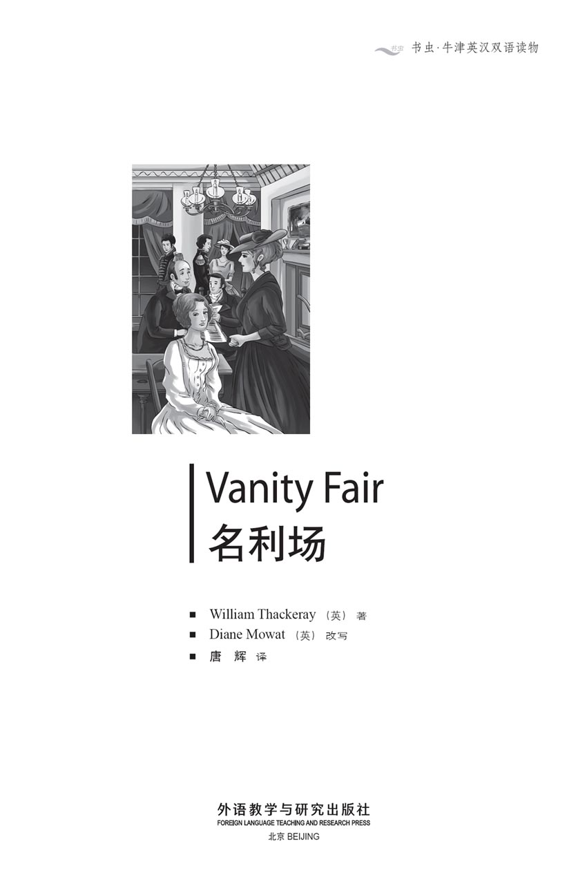
版权页
京权图字：01-2013-7833
Published by arrangement with Oxford University Press for sale in the People's Republic of China only and not for export therefrom. This edition is for sale in the mainland of China only, excluding Hong Kong SAR, Macao SAR and Taiwan.
© Oxford University Press 2008
Oxford is a registered trademark of Oxford University Press
图书在版编目（CIP）数据
名利场：英汉对照／（英）萨克雷（Thackeray, W.）著；（英）莫厄特（Mowat, D.）改写；唐辉译．—北京：外语教学与研究出版社，2014.5
（书虫·牛津英汉双语读物）
书名原文：Vanity fair
ISBN 978-7-5135-4445-0
Ⅰ．①名… Ⅱ．①萨… ②莫… ③唐… Ⅲ．①英语－汉语－对照读物 ②长篇小说－英国－近代 Ⅳ．①H319.4：I
中国版本图书馆CIP数据核字（2014）第094405号
出版人 蔡剑峰
责任编辑 谷 丰
封面设计 蔡 颖
出版发行 外语教学与研究出版社
社 址 北京市西三环北路19号（100089）
网 址 http://www.fltrp.com
版 次 2014年5月第1版
书 号 ISBN 978-7-5135-4445-0
凡侵权、盗版书籍线索，请联系我社法律事务部
举报电话：（010）88817519
电子邮箱：banquan@fltrp.com
法律顾问：立方律师事务所 刘旭东律师
中咨律师事务所 殷 斌律师
内容简介
内容简介
名利场，一个极尽浮华、邪恶且又荒唐的地方，充斥着各式虚伪与矫饰。在那里，你赌博，欠债，等着有钱的姑姑死掉；在那里，你对心上人发誓相爱至死不渝，然而次日就给别人写下情书；在那里，耍心机、说谎话才会得到回报；在那里，男人奔赴战场，女人坠入爱河；在那里，欢笑与泪水同在，危险与刺激并存……故事发生在1815年的伦敦、布赖顿、布鲁塞尔和巴黎。
贝姬·夏普和阿梅莉亚·塞德利即将开始在名利场的奇妙历险。她们都将觅得夫婿，但婚姻会持续多久？谁会佩戴钻石，谁会忍饥挨饿？她们会忠贞守一，还是会荒唐行事？她们会被弃之若屣，还是会被深深爱恋？谁会把钞票缝到裙子里，随着胜利之师奔赴巴黎？谁会回到娘家，悲凄淌泪？还有她们的亲朋好友……约瑟夫·塞德利会当一辈子傻瓜吗？罗顿·克劳利会了解真相吗？威廉·多宾会如愿以偿吗？
“啊，人类欲望如此虚荣与荒唐！尘世之中，我们谁是真正快乐的？我们谁能称心如意？又或，在遂了心愿后，真正感到心满意足？”
VANITY FAIR
VANITY FAIR
Vanity Fair is a very vain, wicked, foolish place, full of all sorts of falseness and pretence. It is a place where you gamble and get into debt, and wait for your rich aunt to die. A place where you swear undying love to your sweetheart, and write a love letter to someone else the next day. It is a place where cunning and lies bring rewards. It is a place where men go to war, and women fall in love, a place of laughter, tears, danger, and excitement... It is 1815 in London and Brighton, Brussels and Paris.
Becky Sharp and Amelia Sedley are starting out on the great adventure of Vanity Fair. Each will find a husband, but how long will it last? Who will wear diamonds, who will go hungry? Will they be faithful, foolish, neglected, devoted? Who will sew banknotes into her dress and follow a victorious army to Paris? Who will go home to her mother and weep in misery? And their friends and relations... Will Joseph Sedley be a fool all his life? Will Rawdon Crawley learn the truth? Will William Dobbin get his heart's desire?
‘Oh, the vanity and folly of human wishes! Which of us is happy in this world? Which of us has our heart's desire? Or, having it, is satisfied?'
目录
PEOPLE IN THIS STORY
PEOPLE IN THIS STORY
Miss Rebecca (Becky) Sharp
Miss Amelia (Emmy) Sedley
Mr Joseph (Jos) Sedley, Amelia's brother
Mr John Sedley, father of Amelia and Joseph
Mrs Sedley, his wife
Mr George Osborne, a lieutenant in the army; later, a captain
Georgy, George's son
Mr John Osborne, father of George Osborne, and grandfather of Georgy
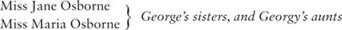
Mr William Dobbin, a captain in the army; later, a major
Miss Dobbin, William's sister
Sir Pitt Crawley, a baronet
Mr Pitt (later, Sir Pitt) Crawley, Sir Pitt's older son (by his first wife)
Lady Jane Crawley, Pitt Crawley's wife
Mr Rawdon Crawley, Sir Pitt's younger son (by his first wife), a captain in the army; later, a colonel
Young Rawdon (Rawdy), Rawdon's son
Lady Crawley, Sir Pitt's second wife, mother of Rose and Violet
Miss Matilda Crawley, Sir Pitt's unmarried sister, and Rawdon's aunt
Miss Briggs, paid companion to Miss Crawley
Mr Bute Crawley, Sir Pitt's brother
Mrs Bute Crawley, Mr Bute's wife
Lord Steyne, a nobleman
人物介绍
人物介绍
丽贝卡（贝姬）·夏普小姐
阿梅莉亚（埃米）·塞德利小姐
约瑟夫（乔斯）·塞德利先生，阿梅莉亚之兄
约翰·塞德利先生，阿梅莉亚和约瑟夫之父
塞德利夫人，约翰·塞德利先生之妻
乔治·奥斯本先生，陆军中尉；后晋升上尉
乔基，乔治之子
约翰·奥斯本先生，乔治·奥斯本之父，乔基的祖父
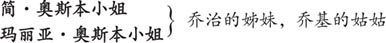
威廉·多宾先生，陆军上尉；后晋升少校
多宾小姐，威廉之妹
皮特·克劳利爵士，准男爵
皮特·克劳利先生（后承封号，皮特爵士），皮特爵士的长子（与其第一任妻子所生）
简·克劳利女士，皮特·克劳利先生之妻
罗顿·克劳利先生，皮特爵士的次子（与其第一任妻子所生），陆军上尉；后晋升上校
小罗顿（罗迪），罗顿之子
克劳利女士，皮特爵士的第二任妻子，罗丝和维奥莱特之母
玛蒂尔达·克劳利小姐，皮特爵士未出嫁的姐姐，罗顿的姑姑
布里格斯小姐，克劳利小姐雇用的女伴
比特·克劳利先生，皮特爵士之弟
比特·克劳利夫人，比特先生之妻
斯泰恩勋爵，贵族
1 The young ladies leave school
1
The young ladies leave school
One sunny morning in June, early in the 1800s, Miss Amelia Sedley and Miss Rebecca Sharp left school. The carriage which took them away from Miss Pinkerton's school for young ladies was filled with gifts and flowers for Amelia, for everyone loved her; but nobody cried when Rebecca left.
We are going to see a great deal of Amelia, so there is no harm in saying straight away that she was a dear little creature. She is not a heroine because her nose was rather short and her face was too round, though it shone with rosy health. She had a lovely smile and her eyes were bright with good humour, except when they were filled with tears, which happened a great deal too often because she had the kindest heart in the world. And when she left school she did not know whether to cry or not. She was glad to go home, but she was very sad to leave her friends at school.
Well, at last the goodbyes were over and the carriage drove away. In her hand Amelia held a letter from Miss Pinkerton, the school's headmistress, which was full of praise for Amelia's educational achievements and the sweetness of her nature.
Amelia's companion, Miss Rebecca Sharp, had no letter from Miss Pinkerton, and was not at all sad to leave school. Indeed, she was delighted.
'I hate the place,' she said. 'I never want to see it again! I wish it were at the bottom of the river, with Miss Pinkerton too.'
Amelia was shocked. 'Oh, Rebecca!' she cried. 'How can you have such wicked thoughts?'
As you will guess, Rebecca was not a kind or forgiving person. She said that the world treated her very badly – though it was quite possible that she deserved the treatment she got.
Her father was an artist, who had given drawing lessons to the young ladies at Miss Pinkerton's school. He was a clever man and a pleasant companion, but was always in debt and had too great a fondness for the bottle. When he was drunk, he used to beat his wife and daughter. He had married a French dancer, who had taught her daughter to speak perfect French. She had died young, leaving Rebecca to her father's care.
And when Rebecca was seventeen, her father died. On his deathbed he wrote to Miss Pinkerton, begging her to look after his orphan daughter. So Miss Pinkerton employed Rebecca to speak French to the young ladies. In return, Rebecca lived in the school, was paid a few pounds a year, and was allowed to attend classes when she was free.
Rebecca, or Becky, as she was often called, was small and thin, with a pale face and light red hair. She usually kept her head down, but when she looked up, her green eyes were large and attractive, especially to men. Next to the tall, healthy young ladies in the school, Becky Sharp looked like a child. But being poor and in debt had taught her many adult lessons. She knew how to deal with angry shopkeepers demanding their money, and how to charm them into providing one more meal. Her father, who was very proud of her lively mind, had liked to have her at his drinking parties, though the conversation of his wild friends was hardly suitable for a young girl. But she had never been a girl, she said; she had been a woman since she was eight years old.
Rebecca hated the school. She argued and fought with Miss Pinkerton, and was jealous of the young ladies there. After the freedom of her father's house, the school felt like a prison, and she was soon making plans for her escape.
Her only friend was Amelia Sedley, and when Amelia left school at the age of seventeen, Rebecca, now aged nineteen, left school too. She had obtained a post as a governess to the daughters of Sir Pitt Crawley, to whose house she would go after spending a few weeks with Miss Sedley's family.
By the time the carriage arrived at the Sedleys' house in Russell Square, Amelia had forgotten her sadness and was happy to be home again. She took great pleasure in showing Rebecca every room in the house, her piano, all her books, her dresses, her jewellery, and the wonderful presents which her brother Joseph had brought back for her from India.
'It must be delightful to have a brother,' said Rebecca. 'He's very rich, I expect, if he's been in India. Is his wife very pretty?'
'Oh yes, Joseph is wealthy, but he isn't married,' Amelia said.
'Oh, what a pity!' said Rebecca. 'I was sure you said he was married, and I was hoping to meet your nieces and nephews.'
But the thought that was really going through Rebecca's mind was this: 'If Mr Joseph Sedley is rich and unmarried, why shouldn't I marry him? I have only a few weeks, to be sure, but there's no harm in trying.'
Should we blame Miss Sharp for her marriage ambitions? No, for we must remember that poor Rebecca had no kind mother to arrange this delicate business for her, and that if she did not get a husband for herself, there was no one else to do it for her.
So Rebecca became even more affectionate to Amelia, thanking her with tears in her eyes for the presents which her dear friend had given her. And when the dinner-bell rang, she went downstairs with her arm round her friend's waist, as is the habit of young ladies who love each other dearly.
In the drawing-room they found a large, fat man, fashionably dressed in bright colours, sitting by the fire reading the newspaper. As the young ladies entered, he stood up quickly, and his face went red in alarm and embarrassment.
'It's only your sister, Joseph,' said Amelia, laughing. 'I've finished school, you know, and this is my friend, Miss Sharp. You've heard me talk about her.'
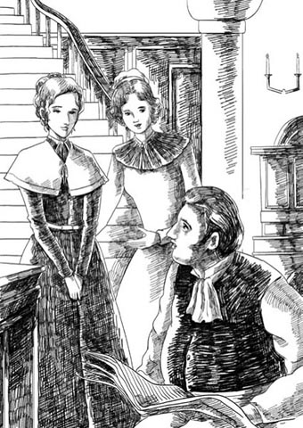
'This is my friend, Miss Sharp. You've heard me talk about her.'
'No, never,' said Joseph in great confusion. 'That is, yes – what very cold weather we're having, Miss—', and he began to stir up the fire, although it was the middle of June.
'He's very handsome,' Rebecca whispered, rather loudly.
'Oh, do you think so?' said Amelia. 'I'll tell him.'
'No, please don't!' cried Miss Sharp, stepping back and keeping her eyes fixed modestly on the carpet.
Joseph Sedley was twelve years older than his sister, and worked in Bengal, in a very isolated place, for the East India Company. But he became ill, and was sent back to London, where he decided to enjoy all the pleasures he had missed when he went to India. So he had his own apartment, drove his horses in the park, ate in fashionable restaurants, and went to the theatre. But he had no friends. He was fat, lazy, and vain, and the sight of a lady frightened him tremendously.
Becky Sharp would have to be very clever indeed to catch such a man for a husband. Her first moves, though, showed considerable skill. 'I must be very quiet,' she thought, 'and very interested in India.' And all through dinner, she paid great attention to everything Joseph said.
After dinner, when the ladies had gone up to the drawing-room, old Mr Sedley laughed, and said to his son, 'Take care, Jos. That girl is planning to catch you for a husband.'
'Nonsense!' Joseph replied. But he could not help thinking about her and the way she had looked at him with her beautiful green eyes when he had picked up her handkerchief. 'She dropped it twice,' he thought. 'And is that her singing now in the drawing-room? Shall I go up and see?'
But his shyness overcame him, and he quietly slipped away from the house. From the window Mrs Sedley saw him go. 'Miss Sharp has frightened him away,' she remarked.
It was three days before Joseph returned to the house, and during that time Rebecca never mentioned his name. She was full of grateful respect for Mrs Sedley, laughed at all Mr Sedley's jokes, and was delighted with every excursion. When Amelia had a headache, Rebecca would not go out without her. Her green eyes filled with tears. 'Dear, dear Emmy,' she said. 'How could I go out and leave you? You have shown a poor orphan what happiness and love are for the first time in her life.'
In fact, Becky Sharp won the hearts of all the family.
On the day that Joseph reappeared, Amelia reminded her brother that he had promised to take her to the Royal Gardens at Vauxhall, which was a very popular place of entertainment.
'The young ladies must have a gentleman each,' said Amelia's father. 'Jos will forget all about Emmy if he's looking after Miss Sharp. Ask George Osborne if he'll come.'
He and his wife exchanged little smiles, and Amelia looked down and blushed as only a young girl of seventeen can blush – and as Miss Rebecca Sharp had never blushed in her life.
But on the night of the Vauxhall party, it rained heavily, and the young people had to postpone their excursion. They spent a comfortable evening at home instead. The Sedleys had known George Osborne all his life, and it was accepted in both families that he and Amelia would marry one day. In fact, the marriage settlement had already been agreed between the two fathers.
So it was a very informal evening, and when Amelia and George went off to the piano in the back drawing-room, Becky and Joseph were left alone. Joseph was surprised to find that he could talk to Becky quite easily. She asked him many questions about India and listened admiringly to all his stories.
'Promise me that you will never go on one of those dreadful tiger hunts,' she begged him, her green eyes filled with fear.
Joseph laughed bravely. 'Nonsense, Miss Sharp. The danger only makes it more exciting.' He had only once been on a tiger hunt, when he had indeed nearly died – of terror.
Later, Rebecca, whose singing was as excellent as her French, sang a song about an orphan, her voice trembling a little over the sad ending. Everyone was reminded of Rebecca's own orphan state and her uncertain future in life.
'Such a beautiful song, dear Miss Sharp,' said Joseph Sedley. 'It almost made me cry.'
'That's because you have a kind heart, Mr Joseph,' came the soft reply, accompanied by an even softer glance.
Becky's efforts were not wasted. Joseph's mind was full of thoughts of marriage. 'She'll make a fine little wife,' he said to himself. 'I'll ask the question at Vauxhall. Yes, I will!'

George Osborne came to lunch on the day of the Vauxhall party and said to Mrs Sedley, 'I hope you don't mind, but I've asked Dobbin to come here tonight and go with us to Vauxhall.'
Lieutenant George Osborne and Captain William Dobbin had been at school together. Dobbin, a quiet, modest boy, had saved Osborne from a beating, and from then on the two had been good friends. They were now both in the same regiment in the army and had not long returned from service in the West Indies.
'Of course he can come,' said Mrs Sedley. 'I remember Dobbin very well. Is he still as awkward and plain as ever?'
'I'll always like him,' Amelia said, 'however awkward he is.' But her reason for liking Dobbin was that he was George's friend.
'He's a fine fellow,' said George, 'even if he's not very good-looking.' And he glanced towards the mirror, admiring his own handsome face and curly black hair. He blushed a little when he saw Rebecca watching him, and Rebecca thought, 'And you certainly know what a fine fellow you are, don't you!'
That evening, when Amelia came into the sitting-room, singing happily, and as fresh as a rose in a pretty white dress, a very tall awkward gentleman in uniform stepped forward. He had large hands and feet, and bowed clumsily.
He had arrived very quietly, and the ladies upstairs did not know that he was there. Otherwise Amelia would not have come into the room singing. As it was, the fresh little voice went straight to William Dobbin's heart – and stayed there. 'What a lucky fellow George Osborne is,' he thought.
On the way to Vauxhall Gardens, Rebecca sat next to Joseph in the carriage and George Osborne sat between Amelia and Dobbin. Though nothing was said, everybody in the carriage was sure that Joseph would propose to Becky that evening. And when they stepped down from the carriage, Joseph took her on his arm, and George and Amelia went off together.
Dobbin paid for them all, and then walked behind, content in his generous and unselfish way to see Amelia and George so happy together. They had all promised to stay together, but within ten minutes, of course, they had separated, and Rebecca found herself alone with Joseph on one of the side walks. Now, she thought, was the moment for Joseph to ask the question. A few minutes earlier somebody had rudely pushed past Rebecca, and she had fallen back with a little cry, into Mr Sedley's arms. This made him feel very loving towards her, and he told her several of his Indian stories again – for the sixth time.
'How I should like to see India!' breathed Rebecca.
'Would you really?' Joseph asked eagerly, and the important question must have been trembling on his lips, because he was breathing very heavily. Rebecca placed her little hand on his heart and she could feel it beating wildly.
Just at this interesting moment, however, the bell rang for the start of the fireworks, and the lovers were surrounded by crowds of hurrying people, and were forced to go with them.
Captain Dobbin walked round the Gardens alone. He thought of joining the others for supper, but saw, when he passed in front of their table, that they were all talking happily to each other, and that their table was prepared for four only. They had forgotten all about him, so he went away again. When he returned later, he realized that Joseph had drunk too much, for he was talking and laughing and singing very loudly. He had attracted a crowd of people, who were gathering round to watch. In fact, George was just about to hit one man who wanted to join the party, but Dobbin arrived at that moment and sent the crowd away.
'Good heavens! Where have you been, Dobbin?' said George. Then, without waiting for a reply, he added, 'Make yourself useful. Look after Joseph, and I'll take the ladies home.'
That night as she went up to bed, Rebecca said to herself, 'He must propose tomorrow. He called me his darling four times. He must propose tomorrow.'
But wine can be the ruin of marriage plans. The next day Joseph had a terrible headache, and his condition was not improved by a visit from George Osborne, who laughed at him most unkindly. 'What a fool you made of yourself last night, Jos! Singing love songs, and crying all over Miss Sharp's hand!'
George had been thinking about Joseph and Becky Sharp. If he, George, was going to marry into the Sedley family, he did not want his brother-in-law to marry a governess, a little nobody, without money or social position. And so George continued to laugh at Joseph and make cruel jokes about him.
The result of all this was that Joseph decided that he was too ill to visit the young ladies, and the next day he sent a letter to his sister, saying that when he recovered he planned to go to Scotland for several months.
It was the death of Rebecca's hopes. Kind-hearted Amelia was very sad for her friend and cried a great deal, but it was now clear to the rest of the Sedley family that the time had come for Rebecca to leave. She made her preparations, and accepted all Amelia's parting gifts with just the right amount of hesitation. Even George Osborne gave Rebecca a present, but he had made too many unkind jokes about Joseph and the Vauxhall party.
'I'm so grateful to him!' Rebecca told Amelia, but in her heart she was thinking, 'George Osborne prevented my marriage.' So we can imagine just how grateful she was to George Osborne.
And so the final parting came. After many tears and promises of undying friendship, both sincere and insincere, Rebecca and Amelia said goodbye.
good humour good mood 好心情
headmistress n. a female teacher who is in charge of a school 女校长
companion n. someone you spend a lot of time with, especially a friend 伴侣，同伴
wicked adj. behaving in a way that is morally wrong 邪恶的，罪恶的
governess n. a woman employed by a rich family to live in their home and teach their children 女家庭教师
to be sure used to admit that something is true, before saying something that is the opposite 诚然，固然（用于要说相反意见之前）
affectionate adj. showing in a gentle way that you love someone 亲切的，亲热的
drawing-room n. (old-fashioned) a room where guests are entertained （用于招待客人的）客厅
alarm n. a feeling of fear or worry because something bad or dangerous might happen 惊慌，惊恐
vain adj. someone who is vain is too proud of their good looks, abilities, or position 自负的，虚荣的
tremendously adv. greatly 极其，很
grateful adj. showing that you want to thank someone because of something kind that they have done 感激的，感谢的
excursion n. a short journey 短途旅行，出游
marriage settlement the financial arrangements agreed for a marriage 婚姻财产授予
remind of to seem similar to someone or something 使想起（相似的人或物）
lieutenant n. an army officer of middle rank (below captain) 中尉（低于上尉）
regiment n. a large group of soldiers, usually consisting of several battalions （军队的）团
as it is because of the situation that actually exists 照目前情况看来
propose v. to ask someone to marry you, especially in a formal way 求婚
generous adj. someone who is generous is willing to give money, spend time etc, in order to help people or give them pleasure 慷慨的，大方的
ruin n. the cause of losing money, job etc or messing up plans 祸根，罪魁
recover v. to get better after an illness 恢复健康，康复
小姐们离校
1
小姐们离校
十九世纪初，六月里一个阳光明媚的清晨，阿梅莉亚·塞德利小姐和丽贝卡·夏普小姐离校了。把她们从平克顿女子学校接走的马车里装满了送给阿梅莉亚的礼物和花儿，因为人人都爱她；但丽贝卡离开时却没有一个人掉眼泪。
我们还会常常见到阿梅莉亚，所以不妨直说，她是个讨人喜爱的姑娘。她不是故事里的女主人公，因为她鼻子颇短，脸又太圆，尽管她的脸蛋透出健康红润的光泽。她有着甜美的笑容，明亮的双眸闪烁着快乐的光芒，除非眼里充满了泪水。这种情况发生得太过频繁，因为她有一颗世界上最善良的心。她离校时不知道自己该不该哭：可以回家了她很高兴，但要告别学校里的朋友她又很伤心。
好啦，道别终于结束，马车出发了。阿梅莉亚手里拿着学校校长平克顿小姐写的信，信中满是对阿梅莉亚学业成绩和善良品格的褒扬。
阿梅莉亚的同伴丽贝卡·夏普小姐没有得到平克顿小姐的信，而且离开学校她一点也不伤心。实际上，这正合她心意呢。
“我讨厌这个地方。”她说，“我再也不想看见它了！我希望它沉到河底，连平克顿小姐也一起沉下去。”
阿梅莉亚吓了一跳。“啊，丽贝卡！”她大叫，“你怎么会有这么恶毒的想法呢？”
你可以猜得出来，丽贝卡不是一个善良宽容的人。她说世界对她太残酷——尽管很有可能是，她活该受到那样的待遇。
丽贝卡的父亲是位画家，在平克顿小姐的学校里教年轻小姐们绘画课。他是个聪明人，也好相处，但总是债台高筑，而且贪好杯中物。以前他喝醉时会殴打妻子和女儿。他的妻子是个法国舞女，教会女儿讲一口流利的法语，只是年纪轻轻就去世了，留下丽贝卡给他照顾。
丽贝卡十七岁时，父亲亡故了。临终时他给平克顿小姐写信，求她照顾自己的孤女。于是平克顿小姐就雇丽贝卡同年轻小姐们讲法语。作为报酬，丽贝卡可以住在学校里，每年拿几英镑薪水，空闲时还可以去听课。
丽贝卡，大家也常常叫她贝姬，身材瘦小，脸色苍白，长着一头淡红色的头发。她通常低着头，可是当她抬起眼来时，那双绿眼睛显得又大又迷人，对男性尤其有吸引力。和学校里高挑健康的年轻小姐们站在一起，贝姬·夏普看起来就像个小孩子。然而，家境贫寒又债务缠身，使她学会了许多成年人才知道的诀窍：她知道怎么应付那些来讨钱的凶巴巴的店主，也知道怎么打动他们，让他们再多提供一顿饭。她的父亲非常赞赏她那灵活的头脑，喜欢在找人喝酒时把她带上，可是他那帮狐朋狗友讲的话实在不适合年轻女孩听。然而，她说她从来没当过女孩，从八岁起她就是一位成年女子了。
丽贝卡讨厌平克顿女子学校。她与平克顿小姐争吵不休，对学校里的年轻小姐们嫉妒不已。她在父亲家里过惯了自由的生活，学校简直就像一座监狱，因此她很快就开始计划如何摆脱学校的束缚。
阿梅莉亚·塞德利是她唯一的朋友。阿梅莉亚十七岁离校时，已十九岁的丽贝卡也同时离校了。丽贝卡获得了一个家庭教师的职位，教导皮特·克劳利爵士的女儿们。她会先在塞德利小姐家住几周，之后再前往克劳利爵士家。
等马车到了位于拉塞尔广场的塞德利家门口时，阿梅莉亚已将悲伤抛在脑后，因回到家而高兴起来。她兴致勃勃地带着丽贝卡参观每个房间，展示她的钢琴、书籍、衣服、珠宝以及她的哥哥约瑟夫从印度为她带回来的各种精美礼物。
“有位兄长真好。”丽贝卡说，“既然他一直在印度，我猜他一定很富有。他的妻子长得很漂亮吗？”
“噢，是的，约瑟夫很有钱，不过他还没有结婚呢。”阿梅莉亚说。
“啊，真遗憾！”丽贝卡说，“我确信你曾说过他结婚了，而且我还期待见到你的侄子、侄女们呢。”
但实际上丽贝卡脑子里想的是：“既然约瑟夫·塞德利先生富有且又未婚，我为什么不嫁给他呢？不错，我只有几个星期的时间，但试试也无妨。”
我们应该谴责夏普小姐的结婚大计吗？不，因为我们须记着，可怜的丽贝卡没有体贴的母亲为她安排这桩棘手之事。如果她不为自己寻觅夫君的话，别人是不会为她操办婚事的。
因此，丽贝卡对阿梅莉亚表现得更亲热，对这位亲爱的朋友送给她的礼物感激涕零。餐铃响起，她揽着她朋友的腰走下楼，这是关系亲密的年轻女士们的习惯。
在客厅里，她们看到一位身材高大、体态臃肿的男子。他穿着鲜艳入时，正坐在炉火边看报。两位年轻女士进屋时，他迅速站起身，脸色因惊慌尴尬而变得通红。
“只是你妹妹而已，约瑟夫。”阿梅莉亚笑着说，“我完成了学业，你知道的。这位是我的朋友，夏普小姐。我曾向你提起过她。”
“没，从来没听过。”约瑟夫极为窘迫地说，“我是说，是听过——这天气可真够冷的，小姐——”他开始拨弄炉火，尽管当时已经是六月中旬了。
“他很英俊。”丽贝卡对阿梅莉亚耳语，但是声音相当大。
“哦，是吗？”阿梅莉亚说，“我来告诉他。”
“别，求你了！”夏普小姐大声说，往后退去，双眼羞涩地盯着地毯。
约瑟夫·塞德利比他妹妹大十二岁，受雇于（英国）东印度公司，在孟加拉一处人迹罕至的地方工作。但他生病了，被派回伦敦。他决定要在这里寻欢作乐，好好弥补去印度时错过的时光。因此，他拥有自己的一套公寓，驾自己的马车去公园游玩，在时髦的餐馆里吃饭，还去剧院看戏。但是他没有朋友。他又肥又懒又虚荣，一看见女士就吓得惊慌失措。
要想抓住这么个男人作丈夫，贝姬·夏普得非常巧妙才行。不过，她最初的行为，还是显示出了相当的技巧。“我必须安安静静的，”她想，“还要表现出对印度很感兴趣。”整个晚餐期间，她都全神贯注地听约瑟夫讲的每一句话。
晚餐结束后，女士们去了楼上客厅，老塞德利先生笑呵呵地对他儿子说：“留神啊，乔斯。那姑娘可打算嫁给你呢。”
“胡说！”约瑟夫回道。可是他情不自禁地想起她，想起他为她捡起手帕时，她那双美丽的绿眼睛看他的样子。“她的手帕掉了两次呢。”他想，“是她在客厅里唱歌吗？我是不是该上楼去看看？”
但羞怯最终占了上风，他悄悄地溜出了家门。塞德利夫人透过窗户看见他离开。“夏普小姐把他吓跑了。”她说。
约瑟夫三天后才又回到家里。在这期间，丽贝卡一次也没提过他的名字。她对塞德利夫人毕恭毕敬，充满感激之情；塞德利先生的每个笑话都逗得她哈哈大笑；每次出游她都欢喜不尽。阿梅莉亚害头痛时，丽贝卡没她就不肯出门。她那双绿眼睛里含着泪水。“亲爱的，亲爱的埃米。”她说，“我怎么能留下你一个人出去呢？你让一个可怜的孤儿这辈子头一次感受到什么是幸福和爱啊。”
实际上，贝姬·夏普赢得了全家人的心。
约瑟夫再次现身的那天，阿梅莉亚提醒她哥哥，他曾答应要带她去沃克斯霍尔的皇家花园游玩，那是一处很受欢迎的游览地。
“年轻女士们每人都得有男士陪伴。”阿梅莉亚的父亲说，“乔斯如果照顾夏普小姐的话就会完全忽略埃米。问问乔治·奥斯本能不能一起去。”
他和妻子相视而笑，阿梅莉亚红了脸低下头去。只有十七岁的少女才会这样脸红，而丽贝卡·夏普小姐从来都没如此脸红过。
但是原定出发去沃克斯霍尔的那天晚上，下起了倾盆大雨，这群年轻人只好推迟了出游。他们在家里惬意地度过了一晚。塞德利一家对乔治·奥斯本知根知底，两家人早有默契，他和阿梅莉亚有朝一日会结成连理。实际上，双方父亲已经就婚姻财产授予达成了一致。
因此，晚上气氛轻松愉悦，阿梅莉亚和乔治起身去后客厅弹琴，剩下贝姬和约瑟夫两人单独在一起。约瑟夫惊讶地发现他可以轻松自如地和贝姬交谈。她问了许多有关印度的问题，并钦佩地听着他夸夸而谈。
“答应我你今后再也不会去参加那些可怕的猎虎活动了。”她乞求道，绿眼睛里满是恐惧。
约瑟夫豪迈地笑了：“这真是无稽之谈，夏普小姐。危险只会让猎虎变得更刺激。”他只参加过一次猎虎活动，那次他的确差点死掉。不过，是差点被吓死的。
之后，丽贝卡唱了一首关于孤儿的歌曲，她的演唱功力可与她的法语水平媲美。在歌曲哀伤的结尾处，她的声音微微有些颤抖。大家都想起了丽贝卡也是一个孤儿，还有她前途未卜的生活。
“歌唱得太美了，亲爱的夏普小姐。”约瑟夫·塞德利说，“差点把我唱哭了。”
“那是因为你有颗善良的心，约瑟夫先生。”她温柔地回答，并投去更加温柔的一瞥。
贝姬的努力没有白费。约瑟夫满脑子都是结婚的事。“她能成为一个不错的娇妻。”他暗自思忖，“我要在沃克斯霍尔向她求婚。对，我要求婚！”
去沃克斯霍尔那天，乔治·奥斯本来吃午饭，他对塞德利夫人说：“希望您不介意，我邀请了多宾今晚来这里，和我们一道去沃克斯霍尔。”
乔治·奥斯本中尉和威廉·多宾上尉曾同上一所学校。多宾是个安静、谦逊的男孩，在奥斯本挨打时救过他，从那时起两人就成了好朋友。现在，他们在陆军的同一个团里，不久前刚从西印度群岛服役归来。
“他当然能来。”塞德利夫人说，“多宾我记得很清楚。他还像以前那样笨手笨脚，相貌平平吗？”
“我会一直喜欢他，”阿梅莉亚说，“不管他有多么笨手笨脚。”但是她喜欢多宾是因为他是乔治的朋友。
“他人不错，”乔治说，“虽然他长得不怎么好看。”他朝镜子望去，欣赏自己英俊的脸庞和卷曲的黑发。看到丽贝卡在端详他，他脸红了一下。丽贝卡心想：“你当然知道自己是个多么漂亮的人儿啦，不是吗！”
那天晚上，阿梅莉亚穿着漂亮的白裙子，像朵娇艳的玫瑰花，一边高兴地唱着歌，一边走进起居室。这时，一位笨头笨脑、粗手大脚的高个子先生迎了上来。他身穿军服，笨拙地鞠了个躬。
他悄然而至，楼上的女士们不知道他在那里，否则阿梅莉亚也不会唱着歌进起居室了。就这样，她那甜美柔嫩的声音径直闯进了威廉·多宾的心，而且驻扎了下来。“乔治·奥斯本真是个幸运的家伙啊！”他想。
在前往沃克斯霍尔花园的马车上，丽贝卡挨着约瑟夫坐，乔治·奥斯本坐在阿梅莉亚和多宾中间。尽管一言不发，但马车上的人都肯定约瑟夫当晚会向贝姬求婚。他们下马车时，约瑟夫让丽贝卡挽着自己的手臂，乔治和阿梅莉亚则结伴前行。
多宾为大家付了钱，跟着走在后面。看到阿梅莉亚和乔治在一起那么开心，慷慨无私的他觉得心满意足。他们本来说好要一起行动的，但结果不出所料，不到十分钟他们就分开了。丽贝卡发现她和约瑟夫单独走在一条小路上。现在，她想，约瑟夫该问那个问题了。就在几分钟前，有人粗鲁地从丽贝卡身边挤过去，她轻声尖叫，跌进塞德利先生的怀里。这使他对她的爱意更浓了，于是他又讲了几个他在印度的故事——这已经是第六遍了。
“我多想去印度看看啊！”丽贝卡轻声说。
“你真的想去吗？”约瑟夫热切地问，那个重要的问题一定就在他的嘴边打着转，因为他的呼吸变得粗重起来。丽贝卡把小手放在他的胸口上，能感觉到他的心脏在剧烈跳动。
然而就在这让人心猿意马之际，焰火表演开始的钟声敲响了，这对情侣被匆匆的人流裹挟着，只得随着一起走。
多宾上尉独自一人绕着花园散步。他想和其他人一起共进晚餐，但从他们的桌子前经过时，他发现他们在兴高采烈地交谈，桌子也只是为四人准备的。他们已经把他忘得一干二净。所以，他再次离开了。等他稍后返回来时，他发现约瑟夫已经喝高了，正在高声谈笑、唱歌，吸引了一大群人围观。事实上，乔治正要打一个来凑热闹的男人，但多宾此刻及时出现，把人群驱散了。
“我的天啊！你刚才上哪儿去啦，多宾？”乔治问。没等对方回答，他又说：“快帮帮忙。你照顾约瑟夫，我送女士们回家。”
那晚就寝时，丽贝卡心想：“他明天一定会求婚的。他叫我心肝宝贝儿，叫了四次。他明天一定会求婚。”
可是酒也能成为破坏婚姻计划的罪魁。次日约瑟夫头痛得厉害，乔治·奥斯本的来访也没能让情况好转。他对约瑟夫大肆嘲笑，刻薄极了。“你昨晚出了多大的洋相啊，乔斯！唱情歌，还拉着夏普小姐的手痛哭流涕！”
乔治一直在考虑约瑟夫和贝姬·夏普的事。如果他——乔治——将来要和塞德利家结亲的话，他可不愿意他的大舅子娶一个无足轻重的女家庭教师，既没钱又没社会地位。因此，乔治继续嘲笑约瑟夫，还开十分过分的玩笑。
这一切使得约瑟夫决定以抱恙为由，不去拜访年轻女士们了。又过了一天，他给妹妹写信，说等他康复后，他打算去苏格兰待几个月。
丽贝卡的希望破灭了。心地善良的阿梅莉亚为她的朋友感到非常难过，哭了很多次。但塞德利家的其他人都明白，现在是丽贝卡离开的时候了。她打点行装，在表现出恰到好处的犹豫之后，收下了阿梅莉亚全部的临别赠礼。就连乔治·奥斯本也送了丽贝卡一份礼物，但是他开了太多有关约瑟夫和沃克斯霍尔那天晚上的恶意玩笑了。
“我对他真感激不尽！”丽贝卡对阿梅莉亚说。但她心里却在想：“乔治·奥斯本阻挠了我的婚事。”所以，我们可以想象她对乔治·奥斯本究竟有多“感激”了。
最终，离别的时刻到了。她们洒下许多泪水，相互许诺友谊不朽，当中有真情也有假意。最后，丽贝卡与阿梅莉亚道别了。
2 Becky Sharp makes new friends
2
Becky Sharp makes new friends
Becky Sharp left London and travelled down to Queen's Crawley in hampshire, the home of Sir Pitt Crawley. Sir Pitt was a baronet and a Member of Parliament, and the land-owning Crawley family was of a higher social class than the Sedleys and the Osbornes, who had made their money by commerce. This thought comforted Becky as she reflected on her failed adventure with Mr Joseph Sedley.
After a week Amelia received a letter from her friend.
MY DEAREST, SWEETEST AMELIA – Oh, how my life has changed from those happy times in your house! There I was surrounded by the kindness of a loving friend, and now...!
Sir Pitt Crawley is nothing like we silly girls imagined a baronet to be. Think of a short old man, in dirty old clothes, who smokes a horrible pipe, speaks with a rough uneducated accent, swears at his servants, and gets drunk every night! He has been married twice, I learn, and has two sons by his first wife. The older, Mr Pitt Crawley, still lives here. He's a pale, thin, ugly man, who is always reading religious books and riding around the countryside, telling everybody to lead good lives.
As for Lady Crawley, Sir Pitt's second wife, she is a poor, faded, unhappy creature, who has nothing to say. She is quite often ill, and spends the rest of her time sewing. I am governess to her two little girls, Rose and Violet, who are no trouble, and already love me quite as much as their mother, I think!
Sir Pitt also has a brother, Mr Bute Crawley. He and his wife, whom everyone calls Mrs Bute (there are so many Crawleys!), live in a house nearby. It seems that he and Sir Pitt don't get on – some quarrel about money, I believe. Indeed, Sir Pitt himself is very mean – I am not allowed to have a candle in my room after eleven at night! But of course I cannot complain, as I am only a poor little governess!
Your affectionate friend, Rebecca
Becky may have been a poor governess, but she was a clever, cunning little creature as well. For we must remember that this story has Vanity Fair for a title, and Vanity Fair is a very vain, wicked, foolish place, full of all sorts of falseness and pretence.
It was certainly true that Sir Pitt Crawley was a mean, selfish, rude old man. He was never known to give away a penny, or to do a good action, but he enjoyed a joke – and the company of a lively and amusing young woman. So the little governess had no difficulty in making herself useful and agreeable to her employer. She wrote his letters for him, played cards with him, and helped with the management of the farm, park and gardens.
Before many months had passed she was almost mistress of the house, though she was always careful to appear modest and respectful. She was popular with everyone, it seemed, including two other members of the Crawley family, whom she described in another letter to her dear friend.
PLEASE FORGIVE MY LONG SILENCE, dearest Amelia, but for some weeks now our usual quiet life at Queen's Crawley has been quite different, because Miss Matilda Crawley is here on her yearly visit. We have dinner-parties and dancing-parties; we drink the best wines every day, and there are fires in every room. Miss Crawley, you see, is Sir Pitt's unmarried half-sister. She is a fat old lady, but has a fortune of seventy thousand pounds, which makes her brothers, Sir Pitt and Mr Bute, very affectionate towards her, as you might imagine! It is said that she intends to divide her fortune between Mr Bute's family, and Sir Pitt's younger son, Rawdon Crawley, who is a captain in the army and a great favourite with his aunt. This Captain Rawdon is staying here now, and I suppose you will like to know what sort of person he is.
Well, he is a very large, fashionable young man. He has a loud voice, swears a great deal, and is always giving orders to the servants, who all love him in spite of this, for he is very generous with his money – when he has any! He leads quite a wild life, I believe, gambling and so on, but his aunt Miss Matilda just laughs, and often pays his debts for him. She says he is worth far more than his boring brother, Mr Pitt Crawley, whom she hates.
Shall I tell you a compliment Captain Rawdon paid me? One night at a dancing-party he asked me, the poor little governess, to dance with him, and afterwards he swore out loud that I was the neatest little dancer in the room. You should have seen the angry stares I received from all the fine young ladies!
Your affectionate friend, Rebecca
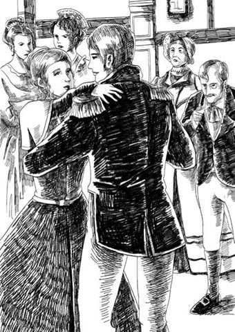
'You should have seen the angry stares I received from all the fine young ladies!'
Becky did not, strange to say, give her dear friend an altogether accurate report of Captain Rawdon Crawley. The Captain had paid her not just one, but a great many compliments. The Captain had walked with her twenty times in the park, had met her in fifty corridors and passages. The Captain had leaned over her piano in the evenings as she sang, while Miss Matilda Crawley nodded sleepily in her chair by the fire. (Lady Crawley was now upstairs, being ill, and ignored by everyone in the house.)
Nor did Becky mention to her friend what a great liking Miss Crawley had taken to her. Nothing would satisfy the old lady but that Miss Sharp should always sit next to her at dinner, and entertain her with amusing conversation.
'You've more brains in your little finger, my dear, than most people have in their heads,' she said to Becky. 'You're certainly cleverer than my poor nephew Rawdon.'
And so, in truth, she was – cleverer than both father and son.
Not long after this, a carriage stopped at Miss Matilda Crawley's home in London in Park Lane, a fine comfortable house, and Miss Crawley herself was carried inside. Doctors were called, and the old lady was put to bed and cared for day and night by a young person who had accompanied her from Queen's Crawley. No one else was allowed in the sickroom, and this was naturally very upsetting to Miss Briggs, who had been Miss Crawley's devoted companion and friend for many years.
This mysterious young person was none other, of course, than Miss Rebecca Sharp. She nursed Miss Crawley, gave orders to the servants, and very soon persuaded kind-hearted Miss Briggs into friendly feelings towards her.
Captain Rawdon Crawley visited every day, and spent a good deal of time in the company of Miss Sharp, receiving reports about his aunt's health. This improved rapidly, her illness being caused by no more than a rather large, hot fish supper, but when an old lady of great wealth becomes ill, all her affectionate relations are naturally anxious to pay her every attention.
It was not the same case for another member of the Crawley family, however. Sir Pitt's wife, Lady Crawley, had been ill for some time but no one had paid her any attention at all. And some three months after Becky had gone to London, Lady Crawley quietly slipped out of this life, almost unnoticed.
Sir Pitt had missed Becky greatly. It was only his fear of offending his wealthy sister that had made him let Becky go to London at all. He had written to her several times and often visited her in Park Lane, begging her, commanding her to return and continue the education of his two daughters. But Miss Crawley always refused to let her go, and so Becky stayed.
The day after Lady Crawley's death, Sir Pitt appeared in Park Lane. Miss Crawley did not want to see him, so she sent Becky down with a message that she was too ill to have visitors.
'That's all right,' Sir Pitt said. 'It's you I want to see, Miss Becky. I want you back at Queen's Crawley. It's not the same without you. All my accounts have got confused again. I can't get my letters done. You must come back. Dear Becky, do come.'
'I don't think – it would be right – to be alone – with you, sir,' said Becky, seeming rather upset.
'Come as Lady Crawley, if you like,' the baronet said. 'There! Will that satisfy you? Come back and be my wife. Yes or no?'
Tears ran down Becky's face, tears of real sorrow.
'Oh, Sir Pitt!' she said. 'Oh, Sir – I – I'm married already!'
'Married!' cried Sir Pitt. 'Married! Who to? You're joking. Who would marry you, Becky? You've not a penny to your name!'
Becky fell to her knees. 'Oh, Sir Pitt, dear Sir Pitt, please don't be angry. I'm so grateful for all your goodness to me.'
'Grateful be damned!' shouted Sir Pitt. 'Where is this husband, then? Run off and left you, has he?'
'Oh, sir! Please let me come back to dear Queen's Crawley. I can't be your wife, sir. Let me – let me be your daughter!'
At this moment the door opened, and Miss Crawley walked in.
Miss Briggs, accidentally listening at the door, had heard Sir Pitt's proposal and had rushed upstairs to tell Miss Crawley. Neither of them, however, had heard Becky's reason for refusing Sir Pitt's offer of marriage.
'Can this be true, Sir Pitt?' Miss Crawley asked, in a horrified voice. 'You have actually proposed marriage to Miss Sharp?'
'I have told Sir Pitt,' said Becky, in a sad, tearful voice, 'that I can never become Lady Crawley.'
'You've refused him!' said Miss Crawley, amazed that a penniless governess should refuse a baronet. 'But why? Is there someone else?'
'I cannot tell you now,' replied poor Becky. 'I am very miserable. But oh, promise you will love me always.'
Pleased that Rebecca had shown the good sense to refuse Sir Pitt, Miss Crawley promised always to remain Rebecca's friend. To Becky's relief, finding his offer of marriage refused, Sir Pitt left, without revealing her secret to Miss Crawley. So Becky had time to make plans, and that night she sat down and wrote a letter to a certain Miss Eliza Styles.
DEAREST FRIEND – The crisis we have talked about so often has arrived! Half of my secret is known. Sir Pitt came today and asked me – to marry him! Think of that! He knows that I am married, but not to whom. Now is the moment to tell Miss Crawley the truth. But she likes me, and she will forgive you anything. So, all will be well. She will die and leave us all her money, and you will stop gambling, and be a good boy. R.
Miss Eliza Styles was, of course, no other than Captain Rawdon Crawley. That big, handsome soldier had become so devoted to little Rebecca that there was no solution but to marry her. He admired her tremendously, believing her to be the cleverest little thing alive, and when he received her orders to rent some rooms for their new home, he hurried at once to obey.
That night in Park Lane, Becky was especially charming to Miss Crawley and Miss Briggs. And after the business with Sir Pitt, Becky, with her secret sorrows, was the heroine of the day.
On the second day after Sir Pitt's proposal the servant went to wake Miss Sharp as usual, but almost at once ran to Miss Briggs's room in great excitement.
'Oh, Miss Briggs,' said the servant, 'Miss Sharp's bed hasn't been slept in. And I found this letter for you in her room.'
'What!' cried Miss Briggs. She opened the letter eagerly.
DEAR, KIND MISS BRIGGS – I know that you will pity me and forgive me. I must leave the home where I have known nothing but kindness. I must do my duty and go to my husband, who commands me to join him. Yes, I am married, married to the best and most generous of men – Captain Rawdon Crawley!
Only you, dear Miss Briggs, will know how to give this news to his devoted aunt. Tell her how much it hurts me to leave her. Ask her to forgive the poor girl to whom she has shown such affection. Ask Miss Crawley to forgive her children.
Your affectionate and grateful Rebecca Crawley
As Miss Briggs finished reading the letter, the servant came to tell her that Mrs Bute Crawley had arrived from hampshire. Mrs Bute was a strong and determined woman, and she and her husband, Sir Pitt's brother, were anxious to pay Miss Crawley every attention. Like Rawdon, they too were in debt and their hopes lay in Miss Crawley's death, since they expected a good share of her money.
Still holding the letter, Miss Briggs ran downstairs to tell Mrs Bute the terrible, shocking news of the marriage.
'It's a good thing I'm here,' said Mrs Bute, 'to take care of poor, dear Miss Crawley. But at least it will open her eyes to that girl. I always knew she was a wicked, cunning little thing.'
Mrs Bute and Miss Briggs waited until Miss Crawley was downstairs, seated comfortably in her armchair. And then they began to prepare her for the dreadful news about Rebecca.
'There was a reason for her refusing Sir Pitt,' said Mrs Bute.
'Of course there was a reason,' Miss Crawley answered. 'She likes someone else.'
'Likes!' Miss Briggs gasped. 'Oh, my dear Miss Crawley, she is married already!'
'The secretive little creature! How dare she not tell me!' cried Miss Crawley. 'Send her to me at once!'
'We cannot,' said Mrs Bute. 'Oh, prepare yourself, dear friend! Miss Sharp has – gone!'
'She went last night,' Miss Briggs said. 'She left a letter for me. She's married to—'
'Such shocking news! Oh, do tell her gently!' said Mrs Bute.
'Married to whom?' said Miss Crawley, in a nervous fury.
'To – to a relation of—' Miss Briggs could not continue.
'Tell me!' cried Miss Crawley. 'Don't drive me mad!'
'Oh, Miss Crawley! She's married to your nephew Rawdon!'
'Rawdon – Rebecca – married! A governess! You stupid old fool, Briggs, I don't believe you!'
The old lady screamed in fury, then fell back in a faint, and had to be taken to bed. The doctor was sent for, and Mrs Bute went to sit by the bedside to act as nurse. 'Her relations ought to be round her at a time like this,' she said, full of concern.
No sooner had Miss Crawley been carried to her room than Sir Pitt arrived at the house. 'Where's Becky?' he said. 'Tell her to get her things together. She's coming with me to Queen's Crawley, even if she is married.'
'Haven't you heard the news?' cried Miss Briggs. 'She's gone. And she has married your son – Captain Rawdon!'
When Sir Pitt heard this news, he broke out into such furious language that it sent poor Miss Briggs trembling from the room. The old man went away, back to Queen's Crawley, and there we will leave him, wild with hatred and unsatisfied desire.
'Suppose the old lady doesn't forgive us,' Rawdon said to his wife as they sat together in their comfortable little London home. He had filled it with presents for his wife – flowers, perfumes, a piano, jewellery, dresses... Becky had been trying her new piano all morning, and new rings sparkled on her little fingers. 'Suppose she doesn't forgive us, eh, Becky?'
'Then I'll make your fortune,' she said, patting his cheek.
'You can do anything,' her husband said, kissing her little hand. 'Come on, let's go out for dinner.'
baronet n. a member of the British nobility, lower in rank than a baron, whose title passes to his son when he dies 准男爵（爵位低于男爵的英国贵族，称号世袭）
Parliament n. the main law-making institution in the UK, which consists of the sovereign, the House of Lords and the House of Commons （英国）议会
commerce n. the buying and selling of goods and services 买卖，贸易
reflect v. to think carefully about something 仔细思考
cunning adj. able to get what you want in a clever way, especially by tricking or deceiving somebody 狡猾的，狡诈的
company n. when you are with other people and not alone 陪伴，做伴
compliment n. a remark that shows you admire someone or something 赞美的话，赞赏
take a liking to sb to begin to like someone 喜欢上某人
devoted adj. having great love for somebody and being loyal to them 挚爱的，忠诚的
companion n. someone, especially a woman, who is paid to live or travel with an older person（受雇的职业）伴侣（尤指女性）
command v. to tell someone officially to do something 命令，下令
damn v. used when swearing at sb / sth to show that you are angry 该死，见鬼
relief n. a feeling of comfort when something frightening, worrying, or painful has ended or has not happened 宽慰，欣慰
reveal v. to make known something that was previously secret or unknown 揭露，透露
solution n. a way of solving a problem or dealing with a difficult situation 解决方法
secretive adj. a secretive person likes to keep their thoughts, intentions, or actions hidden from others 神秘的，遮遮掩掩的
fury n. a feeling of violent anger 盛怒，大怒
drive sb mad to make someone feel very annoyed 把某人逼疯
贝姬·夏普结交新朋友
2
贝姬·夏普结交新朋友
贝姬·夏普离开伦敦，南下前往汉普郡昆士克劳利的皮特·克劳利爵士家。皮特爵士是准男爵，下院议员。克劳利家族拥有土地，比起经商发财的塞德利家和奥斯本家，社会地位要更高。当贝姬回想起她和约瑟夫·塞德利先生的失败经历时，这一点使她心里获得了些许慰藉。
一周后，阿梅莉亚收到了她朋友的来信。
我最亲爱最温柔的阿梅莉亚：
唉，在你家度过那些欢乐的时光后，我的生活变化多大啊！在那里，一位挚友对我关怀备至，可现在……！
皮特·克劳利爵士跟我们这些傻姑娘想象中的准男爵的样子一点都不像。想象一下，一个矮老头子，衣衫肮脏破旧，抽糟糕的烟斗，说一口粗野土话，冲着仆人咒骂，还每天晚上都喝醉！我听说，他结了两次婚，和第一任妻子生了两个儿子。长子皮特·克劳利先生，现在仍住在这里。他苍白瘦弱，长相难看，总是读宗教书籍，还骑着马在乡下到处转悠，劝诫人们要规规矩矩地生活。
至于皮特爵士的第二任妻子——克劳利女士，她是个容颜憔悴、郁郁寡欢的可怜人，没有什么话好说。她经常生病，不生病的时候就做针线活。我是她两个小女儿——罗丝和维奥莱特——的家庭教师。她们一点都不惹事，而且已经像爱她们母亲那样爱我了呢，我认为！
皮特爵士还有个弟弟——比特·克劳利先生。他和他的妻子——大家叫她比特夫人（这里叫克劳利的实在太多了！）——住在附近的一栋宅子里。他和皮特爵士似乎关系不和——是因为钱发生争执，我认为。千真万确，皮特爵士本人吝啬极了——晚上十一点过后我的房间里都不准点蜡烛！可是当然啦，我是不能抱怨的，我只不过是个可怜的小家庭教师罢了！
深爱你的朋友，丽贝卡
贝姬或许是个可怜的家庭教师，但她同时也是个聪明狡猾的小东西。我们得记住，这本书的书名是《名利场》，而名利场是个极尽浮华、邪恶且又荒唐的地方，充斥着各式虚伪与矫饰。
一点没错，皮特·克劳利爵士是个又吝啬又自私又粗鲁的老头。他从没白给过一分钱，也从没做过一件善事，但是他喜欢取笑活泼风趣的年轻女子，也喜欢有她做伴。因此，这位小家庭教师不必费力表现便赢得了雇主的欢心。她代他写信，和他玩牌，协助打理农庄、庭园和花园。
没过几个月，她俨然成为了家里的女主人，然而，她一直小心翼翼表现出谦逊恭敬的样子。看起来，她受众人喜爱，包括克劳利家族的另外两位成员。她在给她亲爱的朋友的另一封信中写到了这两位。
请原谅我长时间杳无音信，最亲爱的阿梅莉亚，但是这几周昆士克劳利以往平静的生活，因为玛蒂尔达·克劳利小姐一年一度的到访而变得完全不同了。我们举行各种晚宴和舞会，每天都喝最好的葡萄酒，而且每个房间里都生了火。你瞧，克劳利小姐是皮特爵士同父异母的姐姐，至今未婚。她是个体态臃肿的老妇人，但是有七万英镑的身家，因此，她的两个弟弟皮特爵士和比特先生都对她殷勤得很，你可以想象得到！据说，她打算把财产分给比特先生一家和皮特爵士的次子罗顿·克劳利。罗顿是一位陆军上尉，十分讨他姑姑的欢心。这位罗顿上尉现在就住在这里，我猜你会想知道他是个什么样的人吧。
嗯，他是个魁梧、时髦的年轻人。他大嗓门，老是说粗话，总对仆人们发号施令。尽管如此，仆人们都很喜欢他，因为他花钱非常大方——只要手头有一点钱就这样！我猜想，他生活放荡不羁，爱赌博啊什么的，但他的姑姑玛蒂尔达小姐对此只是哈哈一笑，还经常为他还债。她说，他可比他那无聊的哥哥强多了。她讨厌皮特·克劳利先生。
要不我跟你说说罗顿上尉对我讲的一句恭维话吧？一天晚上，在舞会上，他请我这个可怜的小家庭教师与他共舞。跳完后，他大声地发誓说，我是房间里最灵巧的小舞者了。你真该看看那些漂亮的年轻女士们怎么用愤愤不平的目光盯着我瞧的！
深爱你的朋友，丽贝卡
说来奇怪，贝姬并没有向她的朋友完全准确地描述罗顿·克劳利上尉。上尉可不仅仅只说过一句恭维话，而是恭维过她许多次。上尉陪她在庭园里散过二十次步，在过道和走廊见过她五十回。晚上她边弹琴边唱歌时，上尉会斜倚在她的钢琴旁，而玛蒂尔达·克劳利小姐则坐在炉边的椅子上打瞌睡。（克劳利女士因为病了，待在楼上，被屋子里的所有人遗忘了。）
贝姬也没向她的朋友提起，克劳利小姐有多么喜欢她。什么都不能令这位老女士满意，除非用餐时夏普小姐坐在她身旁，给她讲些有趣话题让她开心。
“亲爱的，你小指头里装的智慧都比大部分人脑袋里装的多。”她对贝姬说，“可以肯定，你比我那可怜的侄子罗顿聪明多了。”
实际情况是，她比他们父子俩都聪明得多。
不久之后，一辆马车停在了伦敦帕克街上玛蒂尔达·克劳利小姐那座精致舒适的房子前，克劳利小姐本人被抬进屋内。医生们应召前来，安排她卧床休息，一位从昆士克劳利陪她过来的年轻人日夜照顾她，其他人一律不准进病房。这自然令布里格斯小姐异常烦心，因为多年来她一直是克劳利小姐忠实的伴侣和朋友。
这位神秘的年轻人并非别人，正是丽贝卡·夏普小姐。她看护克劳利小姐，吩咐仆人，而且很快就哄得心地善良的布里格斯小姐对她亲切起来。
罗顿·克劳利上尉每天都来拜访，很多时候都由夏普小姐陪着，探听他姑姑的身体情况。她康复很快，身体不适不过是一顿丰盛滚烫的鱼肉晚餐所致。但一位腰缠万贯的老太太生病，那些关爱她的亲戚们自然会紧张不已，对她关怀备至。
然而，对克劳利家族的另一位成员来说可就不是这么回事了。皮特爵士的妻子克劳利女士，已经卧病一段时间，但根本没人留意过她。贝姬去伦敦后大约三个月，克劳利女士悄然离世，几乎无人知道。
皮特爵士十分想念贝姬。他只是害怕冒犯他富有的姐姐才肯让贝姬去伦敦的。他给她写过几封信，还经常去帕克街登门拜访，软硬兼施，让她回去继续教导他的两个女儿。但是，克劳利小姐一直拒绝放她走，因此，贝姬留了下来。
克劳利女士去世的第二天，皮特爵士来到帕克街。克劳利小姐不想见他，就派贝姬下楼去传个口信，说她病得太重，不能会客。
“没关系。”皮特爵士说，“我想见的人是你，贝姬小姐。我需要你回昆士克劳利。你不在一切都变样了。我所有的账目又变得乱七八糟的。我的信也写不完。你必须回来。亲爱的贝姬，回来吧。”
“我认为——这样不合适——单独——和您待在一起，先生。”贝姬说，看起来心烦意乱的样子。
“那就作为克劳利女士回来吧，如果你愿意。”准男爵说，“啊，这样你满意了吗？回来做我的妻子。愿意还是不愿意？”
眼泪流过贝姬的脸庞，货真价实的悲伤泪水。
“啊，皮特爵士！”她说，“啊，爵士——我——我已经结婚了！”
“结婚了！”皮特爵士嚷道，“结婚了！跟谁？你在说笑吧。谁愿意娶你呢，贝姬？你名下可一个子儿都没有！”
贝姬跪倒在地。“啊，皮特爵士，亲爱的皮特爵士，请您不要生气。您对我的恩情，我感激不尽。”
“见鬼的感激不尽！”皮特爵士大吼，“那个丈夫在哪里？是不是跑掉把你抛弃了？”
“啊，先生！请让我回到可亲的昆士克劳利。我当不了您的妻子，先生。让我——让我做您的女儿吧！”
就在这时门开了，克劳利小姐走了进来。
布里格斯小姐之前碰巧在门边听着，一听到皮特爵士求婚，就冲到楼上去告诉克劳利小姐。然而，她们都没听到贝姬拒绝皮特爵士求婚的原因。
“这是真的吗，皮特爵士？”克劳利小姐骇然问道，“你真的向夏普小姐求婚了？”
“我已经告诉皮特爵士了。”贝姬带着哭腔哀哀说道，“我永远也不会成为克劳利女士。”
“你拒绝了他！”克劳利小姐说。一个一文不名的女家庭教师居然拒绝了一位准男爵，这让她大为吃惊。“可是为什么呢？是不是心中有别人了？”
“我现在不能告诉您。”可怜的贝姬回答，“我好痛苦啊。但是，啊，请答应我，您会一如既往地爱我。”
鉴于丽贝卡明智地拒绝了皮特爵士，心中满意的克劳利小姐许诺会永远做丽贝卡的朋友。皮特爵士求婚遭拒之后就离开了，没向克劳利小姐揭露贝姬的秘密，这让贝姬松了口气。她还有时间制订计划。当晚，她坐下来给一位伊丽莎·斯泰尔斯小姐写信。
最亲爱的朋友，我们经常谈论的危机来临了！我的秘密泄露了一半。皮特爵士今天过来了，求我——嫁给他！想不到吧！如今他知道我已经结婚，但还不知道嫁给了谁。现在是时候告诉克劳利小姐真相了。她喜欢我，而你做什么她都会原谅。所以，一切都会好起来的。她死了之后会把所有钱都留给我们，你也不要再赌博了，做个好男人。丽。
无疑，伊丽莎·斯泰尔斯小姐不是别人，正是罗顿·克劳利上尉。这位身材魁梧、相貌英俊的军人对小丽贝卡如此倾心，只有娶了她才可一解相思。他对她爱慕至极，觉得她是世上最聪明的小东西。接到她的命令去租几个房间作他们的新家后，他忙不迭地去办了。
那天晚上在帕克街的家中，贝姬在克劳利小姐和布里格斯小姐眼中更显可爱。经过皮特爵士这档子事，暗自悲伤的贝姬成了当天的主角。
皮特爵士求婚后的第二天，仆人像往常一样去叫夏普小姐起床，但马上大呼小叫地奔向布里格斯小姐的房间。
“哎呀，布里格斯小姐。”仆人说，“夏普小姐的床没有动过。我在她房间里发现了这封给您的信。”
“什么！”布里格斯小姐大叫。她急切地打开了信。
亲爱、善良的布里格斯小姐：
我知道您会怜悯我，也会原谅我的。我必须离开这个充满温情的家了。我必须尽我的本分，去找我的丈夫，他要求我回到他的身边。是的，我结婚了，嫁给了最优秀、心肠最好的男人——罗顿·克劳利上尉！
只有您，亲爱的布里格斯小姐，知道怎样把这个消息告诉深爱着他的姑姑。请告诉她，离开她我有多么心痛。请她原谅这个她一直疼爱有加的可怜女孩吧。请克劳利小姐原谅她的孩子们。
深爱您、对您感激不尽的丽贝卡·克劳利
布里格斯小姐刚读完信，仆人来通报，比特·克劳利夫人从汉普郡来访。比特夫人是位身强体壮、意志坚定的女性，她和她丈夫——皮特爵士的弟弟——也焦急地关注着克劳利小姐。和罗顿一样，他们也欠了债。他们把希望寄托在克劳利小姐身上，想在她死后分上一大笔遗产。
布里格斯小姐抓着信，跑下楼告诉比特夫人这个可怕又令人震惊的婚讯。
“还好我在这里。”比特夫人说，“我可以照顾可怜的克劳利小姐。不过，至少这件事能让她看清那姑娘的真面目。我一直都知道她是个邪恶又诡计多端的小东西。”
比特夫人和布里格斯小姐一直等到克劳利小姐下了楼，舒舒服服地坐进扶手椅里，才开始为告诉她有关丽贝卡的可怕消息做铺垫。
“她拒绝皮特爵士是有原因的。”比特夫人说。
“当然有原因。”克劳利小姐回答，“她喜欢上了别人。”
“喜欢！”布里格斯小姐倒吸了一口气，“啊，我亲爱的克劳利小姐，她已经结婚了！”
“这个守口如瓶的小家伙！她竟敢瞒着我！”克劳利小姐大叫，“立刻叫她来见我！”
“我们叫不来。”比特夫人说，“啊，做好心理准备吧，亲爱的朋友！夏普小姐已经——走了！”
“她昨晚走的。”布里格斯小姐说，“她留了封信给我。她嫁给了——”
“这消息太令人震惊了！啊，婉转地告诉她！”比特夫人说。
“嫁给谁了？”克劳利小姐又急又气。
“嫁给——一个亲戚——”布里格斯小姐说不下去了。
“告诉我！”克劳利小姐大喊，“别把我逼疯了！”
“啊，克劳利小姐！她嫁给了您的侄子罗顿！”
“罗顿——丽贝卡——结婚了！一个女家庭教师！你真是老糊涂，布里格斯，我不相信你的话！”
老妇人愤怒地尖叫，眩晕中向后一倒，只好被送回床上。医生被请来了，比特夫人坐在床边充当护士。“像现在这种时候她的亲人应该在她身边。”她忧心忡忡地说。
克劳利小姐刚被送进她的房间，皮特爵士就来了。“贝姬在哪里？”他问，“让她把她的东西收拾好。就算她结婚了，她也要跟我回昆士克劳利。”
“您还没听说吗？”布里格斯小姐大声说，“她离开了。她嫁给了您的儿子——罗顿上尉！”
皮特爵士听到这个消息，愤怒地破口大骂，吓得可怜的布里格斯小姐浑身哆嗦，赶紧离开房间。老头儿离开了，带着满腔的仇恨和未遂的心愿回到昆士克劳利。他的事我们先暂且按下不表。
“如果老太太不原谅我们呢？”罗顿对他妻子说。他们正一起坐在伦敦舒适的小家里。家里堆满了他送给妻子的礼物：花朵，香水，一架钢琴，珠宝首饰，衣裙……贝姬一上午都在试弹她那架新钢琴，小巧的手指上一个个新戒指闪闪发光。“如果她不原谅我们呢，呃，贝姬？”
“那么我会让你发财。”她拍拍他的脸颊说。
“你无所不能。”她丈夫吻着她的小手说，“走，我们出去吃饭吧。”
3 Amelia Sedley nearly loses hope
3
Amelia Sedley nearly loses hope
And what has happened to Amelia Sedley during this time? While Rebecca was working so hard to make her future safe with the Crawley family, her dear friend Amelia had nothing to do but to sit in her comfortable home, with loving parents, and wait for George Osborne's visits.
Unfortunately, these visits were not at all frequent. George was often with his regiment down in Kent, and when he was in London, he seemed to have so many other things to do, so many friends to see, so many games of cards to play. Amelia saw more of his sisters, Miss Jane Osborne and Miss Maria Osborne, since the Osbornes' home was just the other side of Russell Square.
The two Miss Osbornes were rather proud young ladies. They did not think Amelia was good enough for their handsome brother, and they did not treat her kindly. 'What can George see in that dull little creature?' they asked each other.
So Amelia sat at home, waiting for George, and worrying about Napoleon Bonaparte and the talk of war. She had heard reports that George's regiment would be sent to France to fight Napoleon's army, and the thought terrified her. She asked Dobbin about it when he visited the Sedleys one day. No orders had yet been received, Dobbin told her gently. He was very upset to see Amelia so unhappy and so neglected by George.
Time went past and still George did not visit, but poor little soft-hearted Amelia went on hoping and trusting. She loved George Osborne with all her heart, and wrote to him every day – long, long letters, which were not very well written, but were full of love, devoted, uncritical, unquestioning love.
These letters became quite a joke with George's friends in the regiment. On one occasion George was seen lighting his cigar with one of them, to the horror of Captain Dobbin, who would have very much liked to receive such a letter himself. In fact, Dobbin was so angry that he could remain silent no longer.
'George,' he said, 'are you going to marry Amelia or not?'
'Is that any business of yours?' George asked fiercely.
'Yes, it is, George, because you're neglecting a sweet girl. You should have seen her sad little face when I visited the other day. Go and comfort her, you bad fellow, instead of spending all your time in gambling-houses when you're in town.'
'I'm very fond of Amelia, of course I am,' said George, 'but – but a man must enjoy himself before he gets married, you know.'
'Go and see her,' said Dobbin, 'or write her a long letter. Do something to make her happy. It won't take much.'
'You're right. Yes, I'll go tomorrow. It's true, she is very fond of me,' George said, in a self-satisfied way.
He did go to see Amelia the next day, and Dobbin even lent him some money to buy her a present. George probably would have done so, but on the way to the Sedleys' house, he saw a very nice diamond shirt-pin, and he bought it for himself.
When he arrived, Amelia's sad little face lit up in the sunshine of George's smile. She ran to him, and George kissed her fondly on the forehead and was very affectionate with her; and she thought his diamond shirt-pin (which she had not seen him wear before) was the prettiest thing ever seen.
Since George was only in town for one day, he invited Emmy to dine with him at his father's house that evening, and took her to spend the afternoon with his sisters while he went off to see to some important business (trying on a new coat, and playing several games of billiards with a friend).
He was late home for dinner, and found his father in a very bad mood and his sisters and Amelia eating in nervous silence. When the ladies had gone up to the drawing-room, leaving father and son to their wine, George watched his father's face anxiously. He needed urgently to ask his father for money, to pay off some of his debts, but when he cautiously raised the subject, he did not get the explosion of bad temper he had feared.
'Well, well,' Mr Osborne said, 'young men will be young men. I know you're mixing in the best society, and I like to see it. You have to pay your own way, and my money's as good as theirs, George my boy. You can call at my bank tomorrow.'
George was relieved and properly grateful, but it seemed that the old gentleman had something else on his mind.
'That little girl upstairs – Amelia,' he said. 'What do you intend to do about her, George?'
'Well, it's clear, isn't it?' George said. 'She's very fond of me. Anyone can see that. And didn't you order me to marry her, and don't I always obey you?'
'Mmm,' said Mr Osborne. 'Pass the wine, boy. Why shouldn't you marry higher than just old Sedley's daughter, eh?'
'But you and Mr Sedley arranged this years ago,' said George.
'Things have changed since then,' his father said, frowning. 'Sedley's business is not doing well. I'm not sure that he can pay the money we agreed on for the marriage settlement. In fact, unless Sedley can pay me ten thousand pounds now, there will be no marriage between you and Amelia Sedley.'
George was especially good to Amelia that evening, and even visited her again the next morning on his way to his father's bank. Later in the day Amelia, still anxious about old Mr Osborne's coldness to her the day before, wrote George another of her long letters – four pages of love and fear and hope and worry.
'Poor little Emmy – dear little Emmy! How fond she is of me,' George said, reading the letter after a lively evening with his friends. 'And oh Lord, what a headache this red wine has given me!' Poor little Emmy, indeed.
No more than four months later, Mr Osborne's words to his son were proved true. Old John Sedley was a ruined man. He had judged badly and lost money, and could not recover from his mistakes. The final disaster struck when Napoleon escaped from the island of Elba and invaded France. The money market crashed, taking with it what remained of Mr Sedley's fortune. The family had to leave their fine home in Russell Square, and all the contents of the house were put up for sale.
On the day of the sale, who should visit the house in Russell Square but our old friends, Captain and Mrs Rawdon Crawley? Rebecca had seen her dear friend Amelia a few times since she had been at Miss Crawley's house. Amelia and George Osborne visited her, and Rawdon invited George several times to little gambling parties, which George always accepted, happy to lose money to the son of a baronet and his high-society friends.
About a month after Becky had set up home with Rawdon, she expressed a wish to see Amelia again. Money being short in the Crawleys' little home, and with no sign of forgiveness from Miss Crawley, Rawdon agreed that it would be good to see George Osborne again. 'I'd like to play a few more games of cards with him. He'd be what I call useful just now,' he said, with his loud soldier's laugh. Rawdon Crawley had no intention of cheating George Osborne, of course; it was just rather convenient to gamble with someone less skilful than himself.
When they arrived in Russell Square, Rebecca was shocked to see a sale at the house where she had once been treated so kindly. However, this did not stop her from trying to buy Amelia's piano, though it is not clear why she wanted it. Perhaps her own piano had been sold in order to pay the rent.
But the piano was finally sold to Captain Dobbin, who knew how much Amelia loved her piano and who paid a great deal more for it than the piano was worth. Rebecca and Rawdon looked for him after the sale, hoping to find out more about what had caused the Sedleys' ruin, but he had already left.
'I'm sorry Mr Sedley has had such bad luck,' Becky said as they got back into their carriage. 'He was a very kind old man.'
'Oh, it happens all the time with businessmen, you know,' Rawdon said. 'I don't suppose Osborne will marry your pretty little friend now. How upset she'll be, hey, Becky?'
'Oh, I expect she'll recover,' Becky said with a smile, and they drove on and talked about something else.
The news of Sedley's ruin was announced in the newspaper, and soon became widely known. The family moved to a little house in an unfashionable street. Mr Sedley's former friends now avoided him, but what really hurt him was that his most bitter, most unforgiving enemy was John Osborne, George's father, whom Sedley had helped many years before, when Osborne was starting his own business.
In a short, cruel letter, Mr Osborne informed Amelia that her father's behaviour had been so shameful that there could be no marriage between her and his son. Amelia accepted the news almost as if she had been expecting it. For some time, she had suspected that George no longer loved her, although in her heart she wanted to go on believing that he did. She showed little emotion outwardly, but alone in her little room in the new house, that gentle heart quietly died a little more each day.
As for John Sedley, he spoke of the Osbornes with bitterness and anger, and swore that nothing on earth would persuade him to allow his daughter to marry John Osborne's son. He ordered Amelia to put George Osborne from her mind and to return all his gifts and letters. The poor girl tried to obey him, and put together a few of George's little gifts. She took out his letters and read them all again, but how could she return them? How could she put George from her mind? And she put the letters back in their secret place, to read later, over and over again.
Meanwhile, Napoleon was marching into Paris, and the British Army, including of course the regiment in which George and Dobbin served, was ordered abroad to join the fighting.
When Dobbin heard the news, his first thought was for Amelia, knowing how this would add to her sorrows. George, however, felt nothing but excitement. He had just been made a captain, and he was enjoying trying on his fine new uniform. That evening he went to see his father, who told him again that there could be no marriage with Amelia – and gave George a large amount of money to pay for his new clothes. Money was always useful to George, and he took it without many words. On the way back from his father's house, he passed the Sedleys' old home, now closed up. Where were the Sedleys now? The thought of their ruin made George sad.
Three days later, Dobbin found George looking miserable.
'She – she's sent me back some things I gave her,' he said, and he showed Dobbin the letter Amelia had sent.
MY FATHER HAS ordered me to return these presents to you, and this is the last time I may write to you. I am sure you are as unhappy as I am that we cannot marry, and I do not blame you in any way. I am sure you had nothing to do with the cruel things which Mr Osborne has said. Goodbye. I pray that I may be strong enough to bear this. I shall often play upon the piano – your piano. It was so kind of you to send it. Amelia
Dobbin was very soft-hearted. The idea of Amelia so lonely and unhappy made him break out into a passion of praise for her. George listened, remembering Amelia's sweetness, her unquestioning love for him, and thought about what he had lost.
'Where are they?' he asked, ashamed that he had made no effort to find Amelia. 'There's no address in the letter.'
Dobbin knew where they were. Had he not sent the piano there? In fact, he had visited Mrs Sedley and Amelia the day before, and been shocked by Amelia's pale face and lifeless eyes. It was he who had brought the packet back for George.
'How is she? How did she look?' asked George.
'George, she's dying,' William Dobbin said.
Four hours after the talk between Dobbin and Osborne, the Sedleys' little servant girl came into Amelia's room. As usual, Amelia was sitting reading her old love letters from George.
'Miss Emmy,' said the girl. 'There's someone – look, here's a message.' She gave her a letter, which Amelia opened and read.
I must see you. Dearest Emmy – dearest wife, come to me.
George and her mother were outside, waiting until she had read the letter, and a minute later the door was thrown open.
A harder heart than George's would have melted at the sight of that sweet face, that flood of despairing tears as Amelia wept over his hand, kissing it again and again. Full of emotion at the sight of so grateful and devoted a slave, George swore to himself that he would make her happy, no matter what happened.
Overnight, Amelia became her old self again, bright-eyed and cheerful, full of smiles and laughter, and eagerly waiting for George's next visit. She smiled at Captain Dobbin, who usually came with George, but apart from that she did not notice him.
Dobbin, though sad at heart, was content. He believed Amelia would only be happy if she married George, and so he was determined to make that happen. He urged George to speak to his father, and to persuade him to agree to the marriage.
But that fierce old gentleman had other plans, and had his eye on an extremely wealthy young lady as a bride for his son.
The storm broke one night at dinner. The name of Amelia Sedley, forbidden by the father, was spoken by the son. 'She's the best, the gentlest, the sweetest girl in England,' said George.
'George!' said Jane Osborne, glancing in alarm at their father.
But George did not lack courage, and stared back at his father coolly. As soon as they could, his sisters hurried away to the drawing-room, leaving father and son to their battle.
'How dare you, sir, mention that person's name in my house?' demanded old Mr Osborne, his face purple with fury.
'Stop, sir. You don't use the word "dare" to a captain in the British Army,' said George.
'I shall say what I like to my son, sir. I can cut him off with a penny if I like. I can make him a beggar if I like. I will say what I like,' his father said. 'No gentleman, not even a fine captain in the British Army, has the right to insult his father.'
'I never insulted you, sir,' George said. 'But I shall defend Miss Sedley and her name wherever I go.'
'That name is forbidden in this house!' screamed his father.
'Who told me to love her?' demanded George. 'I might have chosen elsewhere, but I obeyed you. And now that her heart is mine, you order me to throw it away, to punish her for the faults of other people. Well, sir, I won't do it!'
'I won't have this damned nonsense, sir. If you choose to throw away eight thousand pounds a year, you may do it, but by God you will walk out of this house, sir, and not come back.'
And with that, Mr Osborne shouted for a servant and ordered him to call a carriage for Captain Osborne.
An hour later in the army camp George, looking very pale, went to find Dobbin. 'I've done it,' he said.
'Done what?' asked Dobbin.
George told him. 'And I'll marry Amelia tomorrow,' he said. 'I love her more every day, Dobbin.'
And so, quietly and secretly, George Osborne and Amelia Sedley were married, to the sound of rain beating down on the church roof, and Mrs Sedley crying quietly. Captain Dobbin arranged the wedding, and as old Mr Sedley refused to have anything to do with it, Amelia's brother Joseph came to give away the bride.
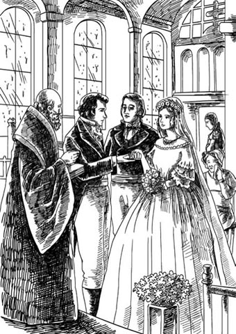
Quietly and secretly, George Osborne and Amelia Sedley were married.
When the ceremony was over and the kissing and the hand-shaking were all done, the happy couple drove away in Joseph's carriage. Captain Dobbin stood outside the church and watched them go. Never in his life had he felt so miserable and lonely. Then he turned and walked away, through the rain.
terrify v. to make someone extremely afraid 使恐惧，使害怕
neglected adj. getting too little attention 被忽视的，被冷落的
soft-hearted adj. easily affected by feelings of pity or sympathy for other people 心肠软的，好心的
light up if someone's face or eyes light up, they show pleasure, excitement etc（脸上或眼中）流露出喜悦（或兴奋）
billiards n. a game for two people played with long sticks and three balls on a long table 台球（此处指的是十九世纪初的英式台球，仅用三颗球）
cautiously adv. in a careful way so as to avoid danger or risks 小心地，谨慎地
ruined adj. a ruined man has lost all his money 破产的
recover v. to return to a normal condition after a period of trouble or difficulty 复原，恢复常态
unfashionable adj. not popular or fashionable at the present time 过时的
inform v. to officially tell someone about something or give them information 通知，告知
serve v. to spend a period of time doing official duties for a country 服役
bear v. to accept something 接受
cut sb off with a penny to refuse to let someone receive your money or property 立遗嘱仅留给（继承人等）一便士作遗产；（引申义）剥夺……的继承权，切断……的经济来源
give sb away to give formal permission for a woman to marry a man as part of a traditional wedding ceremony （在传统婚礼上）将新娘交给新郎
阿梅莉亚·塞德利几乎绝望
3
阿梅莉亚·塞德利几乎绝望
那么这段时间里，阿梅莉亚·塞德利那边又发生了什么事呢？在丽贝卡处心积虑确保自己在克劳利家族占有一席之地的时候，她亲爱的朋友阿梅莉亚却无所事事，只能和慈爱的双亲待在舒适的家中，等待乔治·奥斯本的拜访。
不幸的是，他的拜访一点儿都不频繁。乔治常常随军团驻扎肯特，而当他在伦敦的时候，似乎总有很多别的事要处理，很多朋友要拜访，很多牌局要参加。阿梅莉亚见乔治的姐妹——简·奥斯本小姐和玛丽亚·奥斯本小姐——次数更多，因为奥斯本家就在拉塞尔广场的另一头。
奥斯本家的两位小姐是相当傲慢的年轻女士。她们觉得阿梅莉亚配不上她们那英俊的兄弟，因而没有善待她。“乔治究竟看上那个无聊的小东西哪一点了？”她们互相询问。
因此，阿梅莉亚就待在家中，一边等乔治来访，一边担心拿破仑·波拿巴的动向和有关战争的传言。她听说乔治所属的军团会被派去法国，对抗拿破仑的军队。一想到这个，她就十分害怕。一天，多宾来拜访塞德利一家，她向他询问此事。目前尚未接到命令，多宾温柔地告诉她。见到阿梅莉亚这么不开心，这么被乔治冷落，多宾不由得心烦意乱。
时间一天天过去，乔治还是没来拜访，可怜又心肠软的阿梅莉亚却一直满怀期待与信任。她全心全意地爱着乔治·奥斯本，每天都给他写信——长长的书信，虽然信写得不太好，但字里行间充满了爱意——深情、不加批判、深信不疑的爱。
这些信成了乔治军团里的朋友们的笑柄。有一次，乔治用其中一封信点雪茄，这一行为让多宾上尉大为惊恐，他自己是多么希望能收到这样的一封信啊。事实上，多宾太生气了，他无法再继续保持沉默。
“乔治，”他说，“你还打算娶阿梅莉亚吗？”
“跟你有什么关系？”乔治语气激烈地反问。
“有关系。乔治，你冷落了这么一个好姑娘。你真该瞧瞧几天前我去拜访时她那张伤心的小脸。去安慰安慰她吧，你这个坏小子，回城时别都泡在赌场里了。”
“我很喜欢阿梅莉亚，这是当然的。”乔治说，“但是——但是男人结婚前一定要好好享乐，你知道的。”
“去看看她，”多宾说，“或者写封长信。做点事哄她开心，又不费什么劲。”
“你说得对。好，我明天去。不骗你，她确实非常喜欢我。”乔治扬扬自得地说。
他第二天的确去见阿梅莉亚了，多宾甚至借了些钱给他，让他给她买份礼物。乔治或许真会这么做，要不是他在去塞德利家的路上看到了一枚特别漂亮的钻石衬衫饰针，并为自己买了下来的话。
乔治到达塞德利家时，阿梅莉亚一看见乔治灿烂的笑容，她伤心的小脸就顿时露出了喜色。她跑到他面前，乔治疼爱地亲了亲她的额头，对她温情脉脉。她觉得他的钻石饰针（她以前从没见他戴过）是她见过的最好看的饰品。
由于乔治只在城里待一天，他邀请埃米去他父亲家共进晚餐，并把她送去和他的姐妹们待一下午，他自己则去处理一些重要事宜（试一件新外套，和一个朋友打几局台球）。
他回家吃饭晚了，发现他父亲情绪很差，他的姐妹们和阿梅莉亚在闷头吃饭，气氛紧张。等女士们去了楼上客厅，留下父子俩喝葡萄酒时，乔治不安地观察他父亲的脸色。他急需向父亲要钱还一些债。但是当他小心翼翼地提起这个话题时，他所担心的雷霆之怒并没有爆发。
“嗯，嗯，”奥斯本先生说，“年轻人就是年轻人。我知道你正在融入上流社会，这也是我乐意看到的。该用钱的时候就得用，乔治我的儿子，我的钱跟他们的一样好用。你明天到我的银行拿吧。”
乔治松了口气，恰到好处地表达了谢意。但是，似乎老头儿心里还有别的事情。
“楼上那个小姑娘——阿梅莉亚。”他说，“你打算拿她怎么办，乔治？”
“噢，这显而易见，不是吗？”乔治说，“她很喜欢我，谁都看得出来。您不是命令我娶她吗？难道我不是一直都听您的话吗？”
“唔。”奥斯本先生说，“把酒递过来，孩子。为什么你不娶个比老塞德利的女儿社会地位更高的人呢，呃？”
“可是您和塞德利先生几年前就把这门亲事安排好了。”乔治说。
“打那以后事情就起了变化。”他父亲说，眉头皱了起来，“塞德利的生意做得不好。我拿不准他是否还拿得出当初我们商定的结婚礼金。实际上，除非塞德利现在能给我一万英镑，否则你和阿梅莉亚·塞德利之间的婚事就当没提过。”
那天晚上乔治对阿梅莉亚格外殷勤，甚至第二天早晨在去他父亲银行的路上顺道又去见了她一面。那天晚些时候，因为前一天老奥斯本先生对她态度冷淡，忧心忡忡的阿梅莉亚又给乔治写了一封长信——四页纸上交织着爱与恐惧、希望与担忧。
“可怜的小埃米——亲爱的小埃米啊！她是多么喜欢我啊！”和朋友们快活了一晚的乔治读着信说，“哎，我的老天，这红酒闹得我头疼死了！”可怜的小埃米，的确是。
过了不到四个月，奥斯本先生对他儿子说的话应验了。老约翰·塞德利破产了。他判断失误，赔了钱，而且无法从失误中恢复过来。最后，灾难性的打击降临：拿破仑逃离厄尔巴岛，进攻法国。货币市场崩溃了，塞德利先生余下的财产变得一文不值。他们一家人只好搬出拉塞尔广场的好宅子，并把宅子里所有的物品都拿出来拍卖。
拍卖那天，除了我们的老朋友克劳利上尉夫妇，谁还会到拉塞尔广场的这座宅子拜访呢？自从到克劳利小姐家之后，丽贝卡见过她亲爱的朋友阿梅莉亚几次。阿梅莉亚和乔治·奥斯本拜访过她，罗顿也几次邀请乔治参加小型赌博聚会。乔治每次都接受邀请，乐意输钱给这位准男爵的儿子和他上流社会的朋友们。
贝姬和罗顿安家落户后一个月左右，她表达了想再见到阿梅莉亚的愿望。克劳利夫妇小家庭正资金短缺，克劳利小姐又没有原谅他们的迹象，罗顿也认为再见见乔治·奥斯本是件好事。“我想再和他多玩几把牌。按我的说法，现在就是他‘派上用场’的时候了。”他一边说着，一边以军人的大嗓门笑了起来。当然，罗顿·克劳利没打算欺诈乔治·奥斯本，只不过和牌技不如自己的人赌博可省事多了。
他们到达拉塞尔广场时，丽贝卡震惊地发现，她曾经受到极好招待的地方正在举行拍卖。然而，这并不妨碍她试图买下阿梅莉亚的钢琴，虽然我们并不清楚她想要这架钢琴的原因。也许是她为了付房租已经把自己的钢琴拿去卖掉了。
但是钢琴最终卖给了多宾上尉。他知道阿梅莉亚多么喜爱自己的钢琴，于是出了高出钢琴价值很多的价钱把它买了下来。拍卖结束后，丽贝卡和罗顿去找多宾，希望能从他那里打听出更多塞德利家破产的内幕，不过那时他已经离开了。
“很遗憾，塞德利先生运气这么差。”他们回到马车上时，贝姬说，“他是位很善良的老人。”
“噢，生意人总碰到这种事，你知道的。”罗顿说，“我猜奥斯本现在不会娶你那个漂亮的小朋友了。她得多难过啊，是吧，贝姬？”
“噢，我知道她会挺过来的。”贝姬微笑着说。他们继续前进，谈起了其他事。
塞德利先生破产的消息在报纸上公布后，很快便街知巷闻。他们一家人搬到了一条老街上的一栋小房子里。塞德利先生以前的朋友现在对他避而不见，但真正让他伤心的是，对他最刻薄、最无情的敌人是约翰·奥斯本——乔治的父亲。许多年前奥斯本生意刚起步的时候，塞德利先生曾帮助过他。
在一封冷酷的短信里，奥斯本先生通知阿梅莉亚，她父亲的行为如此可耻，她和他儿子的婚事是不可能的了。阿梅莉亚接受了这个消息，就好像这完全在她预料之中一样。一段时间以来，她一直在怀疑乔治已经不爱她了，尽管她内心还希望继续相信他的爱。她没怎么流露出情绪，但当她独自待在新家自己的小房间里时，她那颗温柔的心一天天地默默枯萎了。
至于约翰·塞德利先生，他一提到奥斯本家就满腔怨愤，发誓无论如何都不会同意把女儿嫁给约翰·奥斯本的儿子。他命令阿梅莉亚忘掉乔治·奥斯本，归还他所有的礼物和来信。可怜的姑娘本想遵从父亲的话，把乔治送的一些小礼物收拢起来。她拿出他的信，又从头到尾读了一遍，可是她怎么能归还这些信呢？她怎么可能忘掉乔治呢？她把信放回隐藏的地方，以后好再拿出来一遍又一遍地读。
与此同时，拿破仑正进军巴黎。英军，当然包括乔治和多宾服役的军团在内，接令开拔，去国外作战。
多宾听到这个消息时，他最先想到的是阿梅莉亚，知道这个消息会让她更加伤心。而乔治只是兴奋不已。他刚刚晋升为上尉，还沉浸在试穿精美新制服的喜悦之中。当晚他去见他父亲，奥斯本先生再次向他申明他和阿梅莉亚不能结婚，还给了他一大笔钱去买新衣服。钱对于乔治来说总是用处多多，他没说什么就收下了。从父亲家返回时，他经过塞德利家的老宅子——现在已经关闭了。他们一家人现在在哪里呢？想到他们破产了，乔治不免悲伤。
三天后，多宾发现乔治闷闷不乐的。
“她——她把我送她的一些东西还回来了。”他说，还让多宾看阿梅莉亚写来的信。
我父亲命令我把这些礼物归还给你，这可能也是我最后一次给你写信了。我相信，我们结不成婚，你和我一样难过，我不会怪你的。我相信，奥斯本先生说的那些薄情的话跟你一点儿关系都没有。永别了。我祈祷我能坚强地承受这一切。我会经常弹那架钢琴——你的钢琴。你把它送来真是太好心了。阿梅莉亚
多宾心肠很软。想到阿梅莉亚那么孤独，那么伤心，他热情洋溢地说了一大堆赞美她的话。乔治听着，回忆起阿梅莉亚的柔情、她对他无条件的爱，他意识到自己究竟失去了什么。
“他们现在在哪里？”他问，心里很羞愧，因为自己压根没去找过阿梅莉亚。“这封信里没有地址。”
多宾知道他们的住处。不是他把钢琴送去的吗？实际上，他前一天才去拜访过塞德利夫人和阿梅莉亚。阿梅莉亚苍白的面孔和毫无生气的眼睛让他震惊。正是他把包裹带回给乔治的。
“她现在怎么样？她看起来如何？”乔治问。
“乔治，她快死了。”威廉·多宾回答。
多宾和奥斯本谈话后四个小时，塞德利家的年轻女仆走进阿梅莉亚的房间。和往常一样，阿梅莉亚正坐着读乔治写给她的旧情书。
“埃米小姐。”女孩说，“有人——看，这儿有一封信。”她递给她一封信，阿梅莉亚打开读了起来。
我必须见你。最亲爱的埃米——最亲爱的妻子，来我身边吧。
乔治和她的母亲在房门外，等她把信看完。一分钟后，门猛地打开了。
心肠比乔治还硬的人若是看到那张可爱的脸蛋、那决堤而下的绝望泪水，他的心也会被融化掉的。阿梅莉亚一遍遍亲吻乔治的手，眼泪淌在他的手上。乔治望着这个感激涕零又满怀深情的奴隶，心中百感交集。他暗暗发誓，无论发生什么都要让她幸福。
一夜之间，阿梅莉亚又恢复了旧时的模样，双目闪亮，神采奕奕，满面笑容，热切地盼望着乔治下次来访。她朝多宾上尉微笑，他通常和乔治一起来拜访。但除此之外，她没有注意过他。
多宾虽然暗自悲伤，但却心满意足。他认为阿梅莉亚只有嫁给乔治才会快乐，所以他下定决心要促成此事。他催促乔治和他父亲谈谈，劝他同意这门亲事。
可那位脾气暴躁的老绅士有别的打算，他为儿子相中了一位极其富有的年轻女士作新娘。
一天晚饭时，争吵爆发了。父亲严禁提及的名字——阿梅莉亚·塞德利，从儿子的口中冒了出来。“她是英格兰最优秀、最温柔、最可爱的女孩子。”乔治说。
“乔治！”简·奥斯本说，神色慌张地瞥了他们的父亲一眼。
可是乔治不乏勇气，冷冷地回瞪他的父亲。他的姐妹一抓到机会就立刻离开，匆匆去了客厅，留下父子俩对战。
“先生，你竟敢在我的屋子里提那个人的名字？”老奥斯本先生质问道，气得脸色发紫。
“住口，先生。您不能对一名英军上尉使用‘竟敢’这个词。”乔治说。
“我乐意对我儿子说什么就说什么，先生。我乐意不给他一分钱就不给。我乐意让他当乞丐就让他当。我想怎么说就怎么说。”他父亲说，“任何一位绅士，即便是一名出色的英军上尉，也无权侮辱自己的父亲。”
“我从没侮辱过您，先生。”乔治说，“但是无论在哪里，我都会维护塞德利小姐和她的名声。”
“在这个家里不准提那个名字！”他的父亲大吼。
“是谁让我爱她的？”乔治追问，“我本可以选择其他人，但是我遵从了您的意愿。如今她一颗心都在我身上，您又命令我抛弃她，就为了别人的错误而惩罚她。哼，先生，我不会这么干！”
“我才不听你这套狗屁话，先生。你要选择扔掉一年八千英镑，可以，但老天在上，你就滚出这个家，先生，再也别回来了。”
话说完，奥斯本先生大声喊仆人，下令给奥斯本上尉叫一辆马车。
一小时后，军营里，面色苍白的乔治找到多宾。“我做了。”他说。
“做什么了？”多宾问。
乔治给他讲了来龙去脉。“我明天就和阿梅莉亚结婚。”他说，“我一天比一天更爱她了，多宾。”
乔治·奥斯本和阿梅莉亚·塞德利就这样静悄悄地秘密结婚了。那天，雨水打在教堂的屋顶上，塞德利夫人默默地流下眼泪。多宾上尉安排了婚礼。由于老塞德利先生拒绝参与此事，只好由阿梅莉亚的哥哥约瑟夫前来，把新娘交给新郎。
等仪式结束，亲吻、握手完毕，一对快乐的新人驾着约瑟夫的马车走了。多宾上尉站在教堂外看着他们离去。他从未觉得如此痛苦，如此孤独。他转身冒雨离去。
4 A pleasant stay in Brighton
4
A pleasant stay in Brighton
Seven days after the wedding, three young men were walking by the sea in Brighton, enjoying the sea air and admiring all the pretty ladies as they passed.
'There's a fine girl over there,' said one of the three. 'D' you see? A very pretty ankle, she's got.'
'You're a devil for the ladies, Jos!' laughed one of his friends. 'But what shall we do this afternoon, boys?'
'Let's have a game of billiards,' said the third man.
'No, no, Captain,' said Jos, alarmed. 'No billiards today, Crawley, my boy; yesterday was enough.'
'You play very well,' laughed Crawley. 'Doesn't he, George?'
George Osborne had brought Amelia to Brighton for a little honeymoon, and Joseph Sedley had come down to join them. And who should they discover, staying in the same hotel, but Captain and Mrs Rawdon Crawley? At once Rebecca and Amelia flew into each other's arms, and there was general delight among the young people. The two wedding parties met constantly, on excursions and at dinners, and the gentlemen for games of cards and billiards, which conveniently enabled Rawdon to refill his empty purse with his winnings from Jos and George.
The two young couples had plenty to tell each other, and their marriages and future hopes were discussed with great interest on both sides. George was rather nervously waiting for the arrival of his friend Captain Dobbin, who had offered to tell George's father the news of his son's marriage to Amelia.
Miss Crawley, on whom all Rawdon's hopes depended, still refused to see him, and was now in Brighton, taking the sea air for her health. Her affectionate nephew and niece had followed her there, but Miss Crawley was guarded day and night by the fiercely possessive Mrs Bute Crawley, who was determined to prevent Rawdon inheriting any of his aunt's riches. Becky and Rawdon, however, were just as determined to succeed as Mrs Bute; and in the meantime they spent money freely and ran up debts, confident of getting the old lady's money in the end.
On meeting George Osborne again, Becky had taken some care to be especially charming to him, admiring his handsome face and his skill at billiards (at which he usually lost to Rawdon). In return, George thought Becky clever, amusing, stylish, and altogether delightful. He quite forgot his original opinion of her as a lowly governess.
Amelia became faintly uneasy about her brilliant friend, always so lively and amusing, while she herself was so shy and quiet. She had only been married a week, and already George seemed bored, eager to be with other people as much as possible.
It is hard for a young bride to have thoughts like these, but so it was. One evening, while Rawdon and Joseph were playing cards, Becky and George were outside on the balcony, admiring the moonlight. Amelia sat inside, neglected, watching.
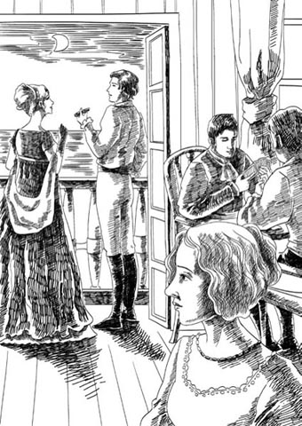
Amelia sat inside, neglected, watching Becky and George on the balcony.
'What a fine night!' said George. 'Do you mind my cigar?'
'Not a bit. I love the smell of them in the open air,' Becky said.
'The sea is so calm and clear – don't you wish you could just dive into it?' said George.
Becky laughed. 'Do you know what my plan is?' she said. 'You remember Briggs, my Aunt Crawley's companion? She goes sea-bathing a lot, and one day I'm going to dive in next to her and insist on immediate forgiveness, right there in the water.'
George burst out laughing at the idea of this watery meeting.
'What's the noise about, you two?' Rawdon called out.
Amelia, unable to join in the laughter, crept away to her room, and a little cold hand closed around that tender heart.
But apart from these little private worries of Amelia's, the time passed pleasantly enough, and hopes on both sides were high – that George's father would forgive George, and that Miss Crawley would forgive Becky and Rawdon.
But Vanity Fair is rarely a kind or forgiving place. And what would happen to our story, dear reader, if it was?
The next day Dobbin arrived in Brighton, eager to see Amelia, even though she was now a married woman, forever out of his reach. He brought two pieces of news with him; the first he gave to the young men alone. It was news of war.
'We're ordered to Belgium – the whole army. We leave next week, sailing from Chatham.'
This news shocked his listeners, and they looked very serious.
'It's my opinion,' Dobbin went on, 'that Napoleon will attack in less than three weeks, and we shall have a fine old time of it. But let's not say anything like that to the ladies, George, eh? It may come to nothing after all – at the moment Brussels is full of fashionable people who think just that.'
The second piece of news Dobbin brought was for George Osborne, and he waited until they were alone together.
'What did my father say?' George asked anxiously. 'Tell me!'
Dobbin did not reply and silently handed George a letter.
'It's not in my father's handwriting,' said George, alarmed.
George was right. The letter was from his father's lawyer.
SIR – I AM INSTRUCTED by Mr Osborne to inform you that, as a result of the marriage you have chosen to enter into, he no longer recognizes you as his son, and that you will therefore inherit no money from him on his death. The only inheritance due to you is the money left to you and your two sisters by your mother. The sum of ￡2,000, being a third share of ￡6,000, will be paid to yourself or your agents upon receipt of your instructions.
Mr Osborne also asks me to say that he refuses to receive any messages or letters from you on this or any other subject.
Your obedient servant, Samuel Higgs
'This is all your fault!' shouted George. He threw the letter at Dobbin. 'We could have waited, but no – you had to get me married, and ruined! What the devil am I to do with two thousand pounds? That won't last me two years. I've already lost a hundred and forty to Crawley at cards and billiards this week.'
'Well, yes, it's hard,' Dobbin said, 'and, as you say, it's partly my fault, but there are some men who wouldn't mind changing with you. You have more money than most of them. You must live on your pay until your father changes his mind.'
'How can a man like me live on a soldier's pay?' George shouted angrily. 'You're a fool, Dobbin. I must have my comforts, keep up my position in the world. Do you expect my wife to follow the regiment on foot, carrying her own luggage?'
'Well, well,' said Dobbin calmly. 'This storm will pass, George. Get your name mentioned in the Army Gazette and I'm sure your old father will welcome you back with open arms.'
'Mentioned in the Gazette!' said George. 'Among the list of dead, you mean? That's really helpful!'
'Don't talk like that,' said Dobbin. 'Everything will be fine.'
It was impossible to argue with Dobbin for long as he was too good-natured. He had tried his best for his friend, but the father was a man of violent temper, and having decided to cut his son off, there was nothing Dobbin, or George's two sisters, or anyone else could say to persuade him otherwise.
Before dinner that evening there were two little conversations between the husbands and wives in the hotel.
George gave Amelia the lawyer's letter. 'It's not myself I care about, Emmy,' he said, 'it's you.'
Amelia read the letter and her face cleared. The idea of being poor with the man she loved held no fears for her.
'Oh, George,' she said, 'I'm sure he will forgive you soon, but it's so sad for you to be separated from your father like this.'
'It is,' said George, looking deeply miserable. 'But you, my dear girl – my wife has the right to expect certain comforts, not the poor life of an ordinary army wife.'
'But, George,' said Amelia happily. 'I can sew, and mend your trousers for you, and do all kinds of things. And two thousand pounds is a great deal of money, isn't it, George?'
George had to laugh at this, and they went down to dinner.
In another room, Becky and Rawdon also talked about money.
'We'll all be leaving soon,' Becky said. 'Rawdon dear, you'd better get that money Osborne owes you before he goes.'
'Good idea,' said Rawdon. 'Wonder what Mrs O. will do when Osborne goes out to Brussels with the regiment?'
'Cry her eyes out, I expect,' said Becky.
'You won't cry about me, I suppose,' Rawdon said, half angry.
'You idiot!' said his wife. 'I'm coming with you, of course.'
At dinner that evening they were all very bright and cheerful. George was excited by the thought of war, and Dobbin told amusing stories, but when Brussels was mentioned, a look of terror came over Amelia's sweet, smiling face.
'Has the regiment been ordered to Brussels, George?' she cried. And she seized George's arm in her terror.
'Don't be afraid, Emmy,' said George. 'You can come too.'
'I intend to go,' said Rebecca. 'I must – General Tufto is a great admirer of mine. Isn't he, Rawdon?'
Rawdon gave his usual great roar of laughter.
'I must and will go,' cried Amelia, with great determination.
'Bravo!' said George, laughing. 'Did you ever see such a fierce little fighter of a wife?' he asked the others.
Dobbin disapproved strongly of Amelia being allowed to go anywhere near a possible battle, but of course he could not say that to her husband. 'At least,' he thought, 'I shall be able to see her, and I will be there to protect her and keep her safe.'
After dinner, the men stayed to smoke their cigars, then went to rejoin the ladies. Rawdon touched George on the arm.
'I say, Osborne,' he said lightly, 'could you let me have that small amount, if convenient?'
It was not at all convenient, but gambling debts must be paid, so a good many bank-notes passed from George to Rawdon.
The next day Jos, Dobbin, Amelia, and George left for London, to prepare for Brussels. Rawdon and Becky would follow in a few days. Becky and Amelia kissed each other most affectionately on parting, but a tiny flame of jealousy was already burning in Amelia's gentle heart.
Before Becky and Rawdon left Brighton, they carried out a last attack on Miss Crawley's defences. Becky had obtained the very useful information that Mr Bute Crawley had broken his collar-bone falling from his horse, and Mrs Bute had had to hurry home to look after him. That left Miss Briggs. Becky arranged to meet that lady by chance on the beach, and poured out declarations of love and affection and concern for Miss Crawley and herself. Miss Briggs, by nature a kindly person, was soon won round, and Becky hurried back to Rawdon in the hotel.
'You must sit down and write to your aunt at once, Rawdon,' she said. 'And then Briggs will try to persuade her to see you.'
'But what shall I write?' asked the puzzled Rawdon.
'Idiot,' said his wife, pulling his ear. 'I'll tell you what to say.'
And so she did, leaning over his shoulder to correct his spelling and grammar. The letter was in short, soldierly sentences, full of grateful affection, and made no mention of money.
Old Miss Crawley laughed when the letter arrived, and laughed even more when Miss Briggs had read it out to her.
'Rawdon never wrote a word of that letter,' she said. 'He never wrote to me without asking for money in his life, and all his letters are full of bad spelling and bad grammar. It's that little snake of a governess who rules him.' They are all the same, Miss Crawley thought in her heart. They all want me dead, and are hoping for my money. I wish they would all leave me alone.
She did agree to meet Rawdon briefly, but the interview was not a success, and that evening Rawdon received a letter from his aunt. Her health, she wrote, was too delicate for further meetings, but if he would like to call at her lawyer's office in London, he would find a communication waiting for him there.
At once, full of hope, Rawdon and Becky hurried back to London (which was exactly Miss Crawley's intention), and the next day Rawdon went to the lawyer's. He came back furious.
'By God, Becky,' he said, 'she's only given me twenty pounds!'
Though it was against themselves, the joke was a good one, and Becky burst out laughing at Rawdon's angry face.
In London George also found that his financial future did not look promising. There was no sign that his father might forgive him, and when George went to collect his two thousand pounds from the lawyer, Mr Higgs was very cool and distant with him.
But George did not care. The old man would forgive him in the end, he thought, and as his army pay had gone in gambling losses to Captain Crawley, he began to spend his two thousand pounds. He took a large apartment in a fine hotel, entertained Jos and Dobbin to a very expensive dinner there (much to Dobbin's disapproval), and sent his wife out to buy a great many fashionable clothes, suitable for a grand social life in Brussels.
Amelia happily obeyed her husband's orders about shopping, but was a little sad when he would not go with her to visit her parents. Mrs Sedley wept with happiness to see her daughter, and Amelia found it oddly comforting to be with her kind old parents again. Only nine days married, and so much had changed! Did she admit to herself how different the real man was from that handsome hero she had adored before marriage? No, a man must be very bad indeed before a woman will admit such a thing, and whatever secret disappointments lay in that gentle heart, they stayed well hidden from the world.
honeymoon n. a holiday taken by a newly married couple 蜜月
run up a debt to borrow so much money that you owe a lot of money 积欠大量债务
lowly adj. low in rank, importance, or social class 低下的，卑微的
creep away to move away in a quiet, careful way, especially avoid attracting attention 悄悄走开
therefore adv. as a result of something that has just been mentioned 因此，所以
comforts pl. n. things that make your life nicer and more comfortable, especially things that are not necessary 使生活舒适之物（通常是非必需品）
Gazette n. the official newspaper of an organization or institution 机关报
cry one's eyes out to be extremely sad and cry a lot 哭得死去活来
lightly adv. without worrying, or without appearing to be worried 轻松地
win sb round to get someone's support or friendship by persuading them or being nice to them （通过劝说或示好）把某人争取过来
collect v. to come to a particular place in order to take someone or something away 领取，领走
oddly adv. used to say that something seems strange or surprising 奇怪地
布赖顿愉快之旅
4
布赖顿愉快之旅
婚礼之后七天，三个年轻人在布赖顿的海边散步，一边享受海边的空气，一边欣赏每一位经过他们身边的漂亮女士。
“那边有一个漂亮姑娘。”其中一人说，“你们看见了吗？她的脚踝很美。”
“你真是女士的克星，乔斯！”他的朋友笑着说，“我们下午干什么呢，小伙子们？”
“我们玩一局台球吧。”另一个人说。
“不，不，上尉。”乔斯慌张地说，“今天不玩台球了，克劳利，我的好兄弟。昨天已经玩够了。”
“你打得不错啊，”克劳利笑着说，“是吧，乔治？”
乔治·奥斯本带阿梅莉亚来布赖顿度个小蜜月，约瑟夫·塞德利随后也加入了他们。他们发现谁也住在同一家旅馆呢？当然是罗顿·克劳利上尉夫妇！丽贝卡和阿梅莉亚马上就飞奔拥抱在一起，这些年轻人都很高兴。两方常常会面，一同出游，一起吃饭。男士们聚在一起玩牌、打台球，罗顿干瘪的钱包里轻而易举地塞满了从乔斯和乔治那里赢来的钱。
两对年轻夫妻有太多事情要告诉彼此，双方兴致勃勃地讨论婚姻和未来的希望。乔治焦急万分地等待他朋友多宾上尉的到来，多宾之前主动提出向乔治的父亲传达他儿子与阿梅莉亚结婚的消息。
克劳利小姐现在也在布赖顿，她是来海边疗养的。罗顿把所有希望都寄托在她身上，可她仍然拒不见他。她那情真意切的侄子和侄媳追随她来到这里，但是她被占有欲极强的比特·克劳利夫人从早到晚看得死死的。比特夫人抱定主意决不让罗顿从他姑姑那里继承一分钱，而贝姬和罗顿也和比特夫人一样意志坚定，决心要成功。与此同时，他们花钱大手大脚，很快就欠下一笔笔债，不过他们有把握最后能将老太太的钱弄到手。
再见到乔治·奥斯本时，贝姬刻意对他施展魅力，奉承他仪表堂堂，球技高超（打台球时，他通常会输给罗顿）。相应地，乔治觉得贝姬聪明、风趣又时髦，总而言之，很讨人喜欢。他完全忘了以前认为她是个地位低下的家庭教师的评价了。
阿梅莉亚隐隐有些不安，她的朋友光彩照人，总是那么活泼风趣，而自己却那么腼腆、少言寡语。她才刚刚结婚一周，乔治似乎就厌倦了，迫不及待地尽可能多和别人待在一起。
一个年轻的新娘有这样的想法很痛苦，但她确是这样想的。一天晚上，罗顿和约瑟夫打牌，贝姬和乔治则在外面阳台上欣赏月色。阿梅莉亚坐在屋内，无人理会，独自观察着这一切。
“夜色多美啊！”乔治说，“介意我抽雪茄吗？”
“一点儿也不介意。我喜欢雪茄在室外散发的味道。”贝姬说。
“大海如此平静、清澈——难道你不希望自己能就这样一头扎进去？”乔治说。
贝姬大笑起来。“你知道我有什么计划吗？”她说，“你记得布里格斯，克劳利姑姑的女伴吗？她常去洗海水浴。总有一天，我会扎到她身边，就在水里坚持让她立刻原谅我们。”
这个水中会面的想法令乔治忍不住放声大笑。
“你们吵吵嚷嚷什么呢？”罗顿大声问。
阿梅莉亚无法加入他们的谈笑，便悄悄地回了房间，一只冰凉的小手攥住了她那颗温柔的心。
不过，除了阿梅莉亚私下里小小的担心以外，大家度过了一段愉快的时光。双方的期望都很高——乔治的父亲会原谅乔治，克劳利小姐也会原谅贝姬和罗顿。
只是，名利场远非善良宽容之地。亲爱的读者，假如名利场是那样的，我们的故事又会如何发展呢？
次日，多宾抵达布赖顿。尽管阿梅莉亚已经嫁为人妇，他永远无法企及，但他仍急切地想见到她。他带来了两个消息。第一个消息——战争的消息——是说给年轻男士们听的。
“我们接到前往比利时的命令——全军前往。下周开拔，从查塔姆出航。”
这个消息令听众们大吃一惊，他们表情都很凝重。
“我认为，”多宾继续说，“拿破仑三周之内就会发动进攻，我们可能要好好大干一场了。但是，我们别把这事告诉女士们，好吧，乔治？也许最后什么事也没有呢，现在布鲁塞尔到处都是有这种想法的上流人士。”
多宾带来的第二个消息是专给乔治·奥斯本的，他等到只剩他俩时。
“我父亲怎么说？”乔治焦急地问，“告诉我！”
多宾没有回答，只是默默地递给乔治一封信。
“这不是我父亲的笔迹。”乔治惊慌地说。
乔治是对的。信是他父亲的律师写的。
先生，本人奉奥斯本先生之命通知您，鉴于您选择的婚姻，令尊不再承认您是他的儿子。因此，令尊去世后您将不会继承他的遗产。您能继承的唯一遗产是令堂留给您与两位姐妹的。这笔6,000英镑的遗产分为三份，其中的一份2,000英镑，在收到您的指示后将支付给您本人或您的代理人。
奥斯本先生还要求我传达：您的任何口信或信件，无论与此事有关或是任何别的事宜，他概不接收。
您恭顺的仆人，塞缪尔·希格斯
“这都是你的错！”乔治大吼。他把信甩给多宾。“我们本来可以等等的，可是不——你非要让我结婚，让我破产了！两千英镑够我干什么啊？连两年都支撑不了。这个星期玩牌、打台球我已经输给克劳利一百四十英镑了。”
“呃，是啊，是挺难的。”多宾说，“就像你所说，我也有部分责任。不过有些人可不介意跟你互换呢。你比他们大多数人都有钱多了。在你父亲改变主意之前，你先靠你的薪俸生活吧。”
“我这样的人靠士兵的薪俸怎么生活呢？”乔治怒吼，“你真傻，多宾。我必须享受舒适的生活，保持我的社会地位。你指望我的妻子自己拿行李，步行随军吗？”
“好了，好了。”多宾平静地说，“暴风雨会过去的，乔治。让你的名字出现在军报上，我保证你的老父亲会张开双臂欢迎你回家的。”
“名字出现在军报上！”乔治说，“出现在阵亡者名单里吗，你的意思是？还真有用！”
“别那么说。”多宾说，“一切都会好起来的。”
多宾性情太温厚，谁都不可能跟他争论太久。他已为朋友使出了浑身解数，可那位父亲脾气暴躁，已经决定和儿子断绝关系，无论多宾、乔治的两个姐妹还是其他任何人都无法劝他回心转意。
那天晚饭前，旅馆里两对夫妻各自进行了一番简短的交谈。
乔治把律师的信交给阿梅莉亚。“我担心的不是自己，埃米。”他说，“是你。”
阿梅莉亚读完信，表情放松下来。和她爱的人一起过穷日子，对她来说没什么好害怕的。
“啊，乔治。”她说，“我肯定他很快就会原谅你的，不过像这样和你的父亲分开，你肯定很难过。”
“是啊。”乔治说，一副痛苦不堪的样子。“但是你，我亲爱的姑娘——我的妻子，有权享受舒适的生活，而不是普通军人妻子过的那种穷日子。”
“不过呢，乔治，”阿梅莉亚快活地说，“我会缝纫，可以为你补裤子，还可以做许多其他事。两千英镑是一大笔钱呢，是吧，乔治？”
乔治只好对此一笑，然后他们下楼去吃晚饭。
另一个房间里，贝姬和罗顿也在谈钱的问题。
“大家很快都要离开了。”贝姬说，“亲爱的罗顿，你最好在奥斯本走之前把他欠你的钱要到手。”
“好主意。”罗顿说，“不知道奥斯本随军去布鲁塞尔后，奥斯本夫人会怎么样？”
“哭得肝肠寸断，我估计。”贝姬说。
“你不会为我掉眼泪的，我猜。”罗顿有些恼怒地说。
“你这个傻瓜！”他妻子说，“我当然是跟你一块儿去啦。”
当晚晚餐时，所有人都兴致勃勃，欢声笑语。乔治一想到打仗就激动不已，多宾讲了一些趣事，但是提到布鲁塞尔的时候，阿梅莉亚甜美的笑脸顿时变得惊恐起来。
“军团已经接到命令去布鲁塞尔了吗，乔治？”她大声问，惊恐之中抓住了乔治的胳膊。
“别害怕，埃米。”乔治说，“你也可以一起去。”
“我打算去。”丽贝卡说，“我必须去——塔夫脱将军是我的崇拜者呢。对吧，罗顿？”
罗顿像往常一样发出一阵大笑。
“我必须去，我一定会去。”阿梅莉亚大声说，声音无比坚定。
“好极了！”乔治笑着说，“你们见过哪个妻子像好斗的小战士似的吗？”他问其他人。
多宾强烈反对让阿梅莉亚去可能有战事的地方，但是，当然了，他不能对她丈夫那样说。他想：“至少我能看见她，而且我会在那里保护她的安全。”
晚饭后，男士们留下来抽雪茄，然后再与女士们会合。罗顿碰了碰乔治的胳膊。
“我说，奥斯本，”他轻描淡写地说，“能把那个小数目给我吗，方便的话？”
其实是一点都不方便，但赌债是必须偿还的，因此一厚沓纸钞从乔治手中递到了罗顿手里。
第二天，乔斯、多宾、阿梅莉亚和乔治出发前往伦敦，为布鲁塞尔之行做准备。罗顿和贝姬几天后再走。分别时刻，贝姬和阿梅莉亚非常亲昵地吻别，但是嫉妒的小火苗已经在阿梅莉亚温柔的心中燃烧起来了。
贝姬和罗顿离开布赖顿之前，他们对克劳利小姐的防御发起了最后一次进攻。贝姬得到非常有利的消息：比特·克劳利先生跌下马来，摔断了锁骨，比特夫人不得不赶回家照顾他。现在就剩下布里格斯小姐。贝姬设计与她在海滩偶遇，尽情倾诉了一番对克劳利小姐和她的深情厚谊与关心。布里格斯小姐天性善良，很快就被说服了。贝姬赶回旅馆找罗顿。
“你得立刻坐下来给你姑姑写信，罗顿。”她说，“然后布里格斯会劝她与你见一面。”
“可是我写什么呢？”罗顿困惑地问。
“傻瓜。”他妻子说，揪住他的耳朵。“我来告诉你写什么。”
她一边说，一边俯身探过他的肩头，纠正他的拼写和语法错误。信里都是短句子，语气像军人般简捷，满是感恩之情，而且压根没提钱的事。
信到时老克劳利小姐哈哈大笑。布里格斯小姐念信给她听时，她笑得更厉害了。
“信绝不是罗顿写的。”她说，“他给我写信从来都是要钱，而且他的信错字连篇，语法也不通。一定是那个家庭教师小蛇精写的，她把罗顿完全掌控住了。”克劳利小姐心想，他们都是一丘之貉，盼着我死，惦着我的钱。我真希望他们离我远远的。
她的确同意与罗顿短暂会面，但是见面并不成功。当晚罗顿收到他姑姑的一封信。信里说，她的健康状况不佳，不能再继续会客。他可以去伦敦她律师的办公室，那里有一封函件等着他。
满怀希望的罗顿和贝姬立刻匆匆返回伦敦（这正是克劳利小姐的目的），第二天罗顿去了律师那里，回来时怒气冲冲。
“老天爷，贝姬。”他说，“她只给了我二十英镑！”
尽管他们被捉弄了，可这个玩笑着实不错。看着罗顿怒不可遏的样子，贝姬忍不住哈哈大笑。
身在伦敦的乔治也发现他的财务前景不容乐观。没有迹象表明他父亲可能会原谅他。乔治去律师那里领他的两千英镑时，希格斯先生对他非常冷淡疏远。
但是乔治不在乎。他认为，老人最终会原谅他的。他的军俸在赌博时输给了克劳利上尉，于是他开始花那两千英镑。他在一家豪华旅馆包下一个大套间，大摆宴席请乔斯和多宾吃饭（多宾对此极为反对），还让妻子出去多多置办些时髦的衣服，要配得上在布鲁塞尔奢侈的社交生活。
阿梅莉亚高高兴兴地听从丈夫的话去购物，不过他不陪她一起去拜访父母，让她有点伤心。塞德利夫人见到女儿喜极而泣，阿梅莉亚和她年迈慈祥的双亲重聚，感到莫名的欣慰。结婚仅仅九天，这么多事情都变了！她有没有暗自承认乔治本人和她婚前仰慕的那个俊杰有许多不同？没有，只有当那个男的坏到极点了，女人才会承认这样的事。无论那颗温柔的心里悄悄装着多少失望，它们都好好藏匿着不让别人知道。
5 Waiting for war in Brussels
5
Waiting for war in Brussels
Napoleon Bonaparte would be defeated, people said, almost without a struggle. Weren't the armies of Europe and the great Duke of Wellington lined up against him? Everyone had such perfect confidence in the result of the battle that the atmosphere in Brussels was one of pleasure and enjoyment. The city was full of fashionable English people, riding in the park, going to the opera, dancing and gambling the nights away.
Amelia was very happy for her first two weeks in Brussels. She was young and sweet-natured, and George's army friends thought she was 'a pretty little thing'. Everybody liked her and George himself was full of kind attention to his wife, buying her little gifts, and taking her out every night to a party or the opera.
Joseph, who had accompanied his sister to Brussels, was also enjoying himself. He was not a soldier, but since army men were the most popular in town, he grew a very fine military moustache, in order to look as much like an army officer as possible.
They first met the Crawleys again riding in the park. Rebecca was surrounded by admirers, and when Amelia saw her dear friend, her heart sank. The sun on that clear May day suddenly seemed to shine less brightly.
But George was delighted, riding over to shake Rawdon warmly by the hand.
'Good to see you, Crawley,' he said. 'How are you?'
'All right, my boy,' said Rawdon. 'How's the business with your father? Has he given in?'
'Not yet,' said George. 'But he will. And I've some private fortune through my mother. What about your aunt?'
'Sent me twenty pounds, damned old woman. When shall we have a game, eh? Come round on Tuesday, why not?'
The Crawleys were at the opera that night as well. Becky was sitting in General Tufto's box, clearly a great favourite with the General, but as soon as she saw Amelia, she hurried round to see her. Such affectionate kisses! How was her dearest, best little Amelia? How pretty she was looking! And here was Mr Jos too, looking so well, and such a fine moustache! Becky smiled, and talked, and laughed, busily spreading charm all around her.
'What a slippery little snake that woman is!' honest old Dobbin murmured to George when Becky had left. 'She's acting all the time, didn't you see, George?'
'Acting? Nonsense! She's the nicest little woman in England,' George replied. 'You don't understand women, Dobbin.'
Dobbin understood enough about George, however, to become anxious after a few days, when he saw how often George was playing cards with Rawdon Crawley, and losing.
'When are you going to give up gambling, George?' he said.
'When are you going to give up criticizing me?' was the reply. 'Rawdon doesn't cheat, you know. I'll start winning some games soon – it all balances out in the end.'
'But I don't think Crawley could pay if he lost,' Dobbin said.
Good advice is never taken, and George continued to visit the Crawleys' hotel to play cards with Captain Crawley, and to attend the little dinners given by Mrs Crawley, whose green eyes always lit up when George came into the room – or so George liked to believe. In fact, he was convinced that Becky was in love with him, unable to resist such a handsome, charming fellow as himself. Meanwhile, Rawdon continued to beat him at cards.
George's gambling was the least of Amelia's worries. The more brilliantly Rebecca shone in society, the more shy and awkward Amelia became. The more time George spent in Rebecca's company, the more miserable and lonely Amelia became. But she said nothing, and suffered in secret.
In June there was a grand ball, to which George and Amelia, Dobbin, and the Crawleys were all invited. After generously buying his wife a new dress and some ornaments, George took her to the ball, where she did not know anyone, put her on a chair and left her there. She was free to amuse herself as she liked, but no one came to disturb her except Dobbin.
Amelia's appearance at the ball was a failure; Mrs Crawley's appearance, however, was a brilliant success. She arrived very late. Her eyes sparkled with life, her dress was perfection. At once there was a crowd of admirers around her, begging for a dance.
But Rebecca went straight to where poor little Amelia was sitting, and in the kindest possible way, began to criticize Amelia's dress, her hair, and her shoes.
'I'll send my own dressmaker to you tomorrow,' she said. 'And my dear,' she went on, 'do stop George from gambling. He and Rawdon play cards every night, and Rawdon will win every penny from him if he does not take care. Why don't you stop him, you careless girl? Oh, look, here comes your darling husband now.'
She turned to smile at George, who was approaching them.
'Where have you been, you wicked man?' she said. 'Here is Emmy crying her eyes out for you. Have you come to fetch me for our dance?'
And she left her shawl and her flowers by Amelia's side, and went away to dance with George. Only women know how to be so cruel. There is a poison on their sharp little knives which hurts far more than a man's blunter weapon.
Amelia sat alone with her sad thoughts in her corner, unnoticed except when Rawdon came to offer a few words of clumsy conversation, and when Dobbin brought her food and drink, and sat with her for a time.
At last George came back – for Rebecca's shawl and flowers. He took them away, but when he gave them back to their owner, there was a note, rolled up like a tiny snake among the flowers. Rebecca put out her hand to take them, and it was clear from her eyes that she knew what she would find there. She had been used to such notes from her early years. She gave him her hand and one of her quick, knowing glances, and George bowed over her hand, his heart hammering with the excitement of victory.
Amelia saw the glance, and suddenly it was too much.
'William,' she said to Dobbin, who was near her, 'you've always been kind to me – I'm – I'm not well. Take me home.'
He went away with her quickly. The streets seemed noisier and more crowded than usual, but the hotel was not far, and they soon reached it. Amelia went straight to bed.
George, meanwhile, wild with excitement, had been gambling and had then gone to spend his winnings on drink. Dobbin found him with a glass in his hand, and red in the face.
'Hallo, Dob! Come and drink, Dob!' George called out.
'Come away, George,' Dobbin said quietly. 'Don't drink.'
'Have a drink, old boy,' George said. 'Stop being so serious.'
Dobbin came close to George and whispered in his ear. At once George banged his glass down on the table and, taking his friend's arm, walked quickly away with him. 'The enemy has advanced,' Dobbin had said. 'The fighting has already begun. Come away – we march in three hours.'
Back in his hotel, George thought about a thousand things – his past life – his chances in war – his wife – the child, perhaps, whom he might never see. Oh, how he wished that note to Becky had never been written, and that he could say goodbye without guilt to the gentle girl whose love he had valued so little!
He thought over his short married life. He had wasted all his money. Why had he been so wild and careless? If he was killed, what would be left for her? He was not good enough for her. Poor Emmy. He should never have married her. Why hadn't he obeyed his father, who had always been so generous to him?
Full of selfish regret, he sat down and wrote a last letter to his father. By the time he had finished, it was almost day. He went into the bedroom and looked down at Amelia's sweet, pale face. How pure and innocent she was, and how badly he had treated her! How selfish he was! Sick with shame, he watched the sleeping girl, then bent down to kiss that pale cheek.
Two pretty little arms closed gently round his neck. 'I am awake, George,' the poor girl said, her eyes full of tears.
And at that moment outside the window the bugles sounded, and the drums began to beat. The city was waking up to war.
In another hotel the Crawleys were also saying their goodbyes. Rawdon truly loved Becky and had known real happiness in his marriage. He was anxious for the future, and much more affected by the parting than his brave little wife who, having wisely decided to be calm and sensible, tried to laugh away his fears.
'It's no laughing matter, Mrs Crawley,' her husband said, sounding hurt. 'I'm a big man, easy to shoot at. And if I drop, I want to be sure you'll be all right.'
Becky became serious at once. 'Dearest love,' she said softly, 'do you suppose I feel nothing?' She quickly wiped her eyes, then smiled lovingly at her husband.
'Now, let's see,' said Rawdon, comforted. 'I've had some luck at the card-tables, and here's two hundred and thirty pounds. I won't take my horses – I'll ride one of the General's. If I'm hit, you can sell them – should get a good price for them.'
And Rawdon Crawley, who had seldom thought about anyone but himself until these last few months, wrote down a list of all the things Rebecca could sell if he was killed. Then he put on his oldest uniform, leaving the best for Rebecca to sell, and before he left, he picked her up in his arms and held her close to his heart. His eyes were clouded, as he put her down and left her.
Rebecca waved goodbye to him from the window, and stood there for a moment looking out after he was gone. The sun was just rising as she turned away from the window, and saw on a table her flowers from the ball. She picked them up, and saw the little note pushed in between them. With a smile, she took the note out and locked it away in her little writing desk. Then she put the flowers in water, went to bed, and slept deeply.
It was ten o'clock when she woke, and after drinking her coffee, she continued Rawdon's list, adding to it all the gifts and jewellery she had received from her admirers. She was pleased to find that if her husband did not return, she would have quite a useful amount of money.
She carefully locked away all her possessions, but kept out a cheque from George Osborne for gambling debts. This made her think of Mrs Osborne. 'I'll get the cheque cashed,' she said to herself, 'and pay a visit afterwards to poor little Emmy.'
Joseph Sedley, of course, was not a soldier and had no goodbyes to say. However, he was disturbed from his sleep before daybreak by Captain Dobbin, who insisted on shaking hands with him.
'I didn't want to go without saying goodbye,' he said.
'Very kind of you,' said Jos, yawning, and rubbing his eyes.
'Some of us – well, some of us may not come back again – and – and I want to be sure that you'll all be all right.'
Jos and the Osbornes shared a sitting-room in their hotel apartment, and while Dobbin was speaking, he kept walking up and down, glancing through the open door of Jos's bedroom into the sitting-room, hoping desperately for a last sight of Amelia.
Jos stared at his visitor as he marched up and down. 'What can I do for you, Dobbin?' he said at last, rather crossly.
'I'll tell you what you can do,' Dobbin said. 'George and I may never come back. You are not to move from this town until you know what has happened. You are to watch over your sister, and comfort her, and make sure that no harm comes to her. Remember, if anything happens to George, she has no one but you. You must promise me that you will never leave her.'
'Of course I'll take care of my sister,' answered Jos.
'And you must see that she gets safely out of Brussels and back to England in the event of a defeat.'
'Defeat! Don't try and frighten me,' cried our hero, in his bed.
At that moment Dobbin had the opportunity he wanted so much – to see Amelia's face again. But what a face – so white, so wild, so despairing! Shocked, Dobbin stood and watched her, torn with pity for such helpless, speechless misery.
Wrapped in a white morning dress and with her hair hanging loose, Amelia was trying to help George as he did his packing. At last, however, George took her hand and led her back into the bedroom. He came out alone, and hurried away.
'Thank heaven that's over,' he thought, running downstairs to join the regiment, who were gathering in the street below.
The sun was just rising as the soldiers marched away. It was a brave sight, with the band playing, and the bright flags flying, and George marching proudly at the head of his company. He looked up, and smiled at Amelia, and passed on; and even the sound of the music died away.
All day Brussels waited for news of the battle. Stories flew around the city – Napoleon's army was advancing, the Duke of Wellington was wounded, the British had suffered great losses. Shops closed, and soon carriages began to leave the city.
Jos, who had felt quite brave and confident in the morning, now began to fear the worst. He was just putting on his coat to go out for the latest news on the street, when Rebecca arrived to visit Amelia. Her smiling face, refreshed by her quiet sleep, was pleasant to see in a town where everyone else looked anxious.
'Are you leaving us to join the army, Mr Joseph?' she said, looking at his coat, which was cut in a military style. 'How brave you are! But then who will be left to protect us poor women? Oh, please don't leave us, Mr Joseph!'
What Rebecca really meant was, 'Sir, you have a comfortable carriage, and if the army is defeated and we have to leave Brussels, I would like a seat in it.'
Jos had been deeply offended by Rebecca's treatment of him in Brussels. She had paid little attention to him, and had not invited him to her parties. 'She only wants me when there is no one else,' he thought. But a vain man is always pleased to be called brave, and wiser men than Jos Sedley have been fooled by women. A few soft words, some admiring glances from those sparkling green eyes, and it was not long before Jos's heart was beating fast, and his doubts and suspicions were all forgotten.
Presently, Rebecca left him, confident of her place in his carriage, and went to tap gently at the door of his sister's room.
Her appearance struck Amelia with terror. It brought her back to the real world, and reminded her of the jealous misery that had been forgotten in the pain of parting from her adored husband. And when Rebecca came forward to kiss her, Amelia, her pale face suddenly red with anger, returned Rebecca's look with a steadiness that rather surprised her visitor.
'Dearest Amelia, you are not well.' Rebecca put out her hand to take Amelia's. 'I could not rest until I knew how you were.'
Amelia did not take the offered hand. 'Why are you here, Rebecca?' she said, looking at her with her large eyes.
This worried Rebecca. 'She must have seen him give me the letter at the ball,' she thought. 'Don't be upset, dear Amelia,' she said. 'I only came to see if I could – if you were well.'
'Are you well?' said Amelia. 'I'm sure you are. You don't love your husband. You would not be here if you did. Tell me, Rebecca, was I ever unkind to you?'
'Indeed, Amelia, no,' Rebecca said, looking away from her.
'When you were poor, I was your friend. George loved me. He gave up his fortune and his family to marry me, to make me happy. Why did you come between us? His love was everything to me. You knew it, and wanted to steal it from me. You are a wicked woman, Rebecca – a false friend and a false wife!'
'Amelia, I swear that I have done my husband no wrong.'
'Have you done me no wrong, Rebecca? You did not succeed, but you tried.'
She knows nothing, Rebecca thought.
'He came back to me. Your tricks and lies could not keep him for long. But what have I done to you? Why did you try to take him from me?' Amelia's voice became wilder. 'And now he's gone. But he will come back. He promised me to come back.'
'He will come back, my dear,' said Rebecca, gently.
Amelia walked to a chair and knelt beside it. 'He was here,' she said. 'He sat here, in this chair.' She seemed to have forgotten Rebecca's presence, and began to stroke the arm of the chair.
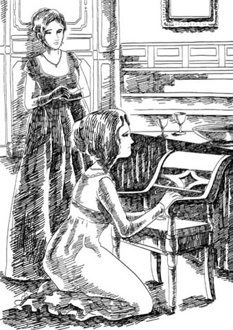
'He was here. He sat here, in this chair.'
Rebecca turned and left the room silently. 'How is she?' asked Jos, who was still sitting in the sitting-room.
'There should be somebody with her,' said Rebecca. 'I think she is very unwell.' And she went away, with a very serious face.
She did, in fact, like Amelia, and felt some pity for her. She thought of the little note locked away in her writing desk. 'Poor thing! That note would destroy her. Why does she break her heart for a man who is stupid – and who does not care for her?'
By late afternoon the sound of gunfire could be heard in the city, and few people had much sleep that night. The next day brought wounded soldiers returning from the battlefield, with reports of regiments destroyed, and Napoleon closing in on Brussels.
Like many others, Joseph Sedley was now desperate to leave, but his servant told him there were no horses to hire or to buy anywhere in the city. Wild with terror, Jos shaved off his moustache, in case the enemy thought he was a soldier, and set out into the city to search for horses himself.
As he passed Rebecca's hotel, he caught sight of her and hurried over. By now, the two horses which Rawdon had left behind were extremely valuable, and one look at Jos's fat, frightened face told Rebecca that she had found a buyer who would pay whatever price she asked.
'What! Are you leaving, Mr Sedley?' she said, with a laugh. 'And Amelia? Who is to protect your poor little sister?'
'There's a seat for her in my carriage,' gasped Jos. 'And for you, dear Mrs Crawley, if only I can find horses!'
'I have two to sell,' said Becky. 'But they're not carriage horses. You'll have to ride them.'
Jos nearly wept for joy. The business was soon done, and Jos was obliged to part with an enormous amount of money.
That night there was more encouraging news of the battle, but by Sunday morning the guns of Waterloo began to roar. When Jos heard that dreadful sound, he could bear it no longer.
'You must come with me, Emmy!' he cried, rushing into her room. 'I have bought a horse for you. You must come!'
'Without my husband, Joseph?' Amelia said, with a look of wonder. But Jos's patience was at an end.
'Goodbye, then,' he shouted angrily, banging the door shut as he left. And he got on his horse, and with his servant he rode away out of Brussels, leaving his sister behind him.
All that day, from morning until past sunset, the guns roared, and the women prayed for their husbands and lovers. On a hill on the battlefield the lines of English foot-soldiers stood firm against the furious attacks of the French, who were forced to fall back again and again. In the evening, the French made a final big attack. Then at last the English roared down from the hill-top which they had held all day, and the enemy turned and ran.
In Brussels the guns could be heard no more. Darkness came down on the battlefield and on the city; and Amelia was praying for George, who was lying on his face, dead, with a bullet through his heart.
line up to stand in a row or line 排成行，列队
atmosphere n. the feeling that an event or place gives you 气氛，环境
slippery adj. someone who is slippery cannot be trusted 狡猾的，不可信赖的
balance out if two or more things balance out, the final result is that they are equal in amount, importance, or effect 相等，持平
dressmaker n. someone who makes clothes for other people as a job 裁缝
shawl n. a piece of material worn by a woman around her shoulders 披肩
bugle n. a musical instrument like a small trumpet, used in the army to give signals 军号，号角
possession n. something that you own or have with you at a particular time 财产，财物
daybreak n. the time of day when light first appears 黎明，破晓
crossly adv. angrily 生气地，恼怒地
in the event of sth used to tell people what they should do if something happens 如果某事发生，万一……
die away to become gradually weaker until you cannot hear, feel or see it 渐渐消失，慢慢变弱
refresh v. to make someone less tired 使恢复精力，使提神
tap v. to hit your fingers lightly on something（用手指）轻扣，轻敲
false adj. not sincere or honest, and pretending to have feelings that you do not really have 不真诚的
do sb wrong to treat someone badly and unfairly 不公平地对待某人
close in to move closer to someone or something, especially in order to attack them 逼近，靠近（尤指为了攻击）
roar v. to make a very loud, deep sound 吼叫，呼啸
在布鲁塞尔等待战争
5
在布鲁塞尔等待战争
人们说，拿破仑·波拿巴会被打败，这基本上是手到擒来之事。欧洲联军在伟大的威灵顿公爵的指挥下不正严阵以待吗？大家对这场战役的结果充满信心，因而布鲁塞尔尽是一片享乐与愉悦的气氛。城里到处都是时髦的英国人，在公园里骑马游玩，去剧院看戏，夜夜跳舞、赌博，消磨时光。
初到布鲁塞尔的头两个星期，阿梅莉亚非常开心。她年轻，性情温柔，乔治的战友们都认为她是个“漂亮的小东西”。大家都喜欢她，乔治对妻子也极尽温柔体贴，给她买小礼物，每晚都带她参加聚会或者去剧院看戏。
约瑟夫陪妹妹来到布鲁塞尔，也玩得很尽兴。他不是军人，但因为军人在城里最受欢迎，他蓄起了很精致的军人胡子，好让自己看上去尽可能像个军官。
他们再一次见到克劳利夫妇是在公园骑马游玩时。丽贝卡被爱慕者们包围着，阿梅莉亚一看到她这位亲爱的朋友，心情就变得沉重起来。忽然间，五月晴朗的阳光也似乎不那么明亮了。
但乔治欣喜地驱马上前，热情地与罗顿握手。
“见到你真高兴，克劳利。”他说，“你怎么样？”
“还好，我的兄弟。”罗顿说，“和你父亲的事怎么样了？他让步了吗？”
“还没有。”乔治说，“但是他会的。我从母亲那里得到一些私财。你姑姑呢？”
“给了我二十英镑，这个可恶的老女人。我们什么时候玩一局，呃？星期二过来，怎么样？”
那天晚上克劳利夫妇也在剧院。贝姬坐在塔夫脱将军的包厢里，显然格外受到将军的喜爱。但她一看见阿梅莉亚，就赶过来见她。这一串深情的吻啊！她最好最亲爱的小阿梅莉亚怎么样？她看起来多漂亮啊！乔斯先生也在啊，气色这么好，胡子这么漂亮！贝姬满面笑容，说说笑笑，忙着向周围的人施展魅力。
“那个女人真是条狡猾的小蛇啊！”贝姬离开后，忠厚年长的多宾向乔治低语。“她一直在装模作样，你没看出来吗，乔治？”
“装模作样？胡说！她是全英格兰最善良的小妇人了。”乔治回答，“你不了解女人，多宾。”
不过多宾对乔治的了解已经足够深了。过了几天，他见乔治频频和罗顿·克劳利打牌输钱，就有些着急了。
“你打算什么时候戒赌啊，乔治？”他说。
“你打算什么时候不再批评我啊？”乔治回答，“罗顿不使诈，你知道的。我就要开始赢钱了——最后输赢会相抵的。”
“可是我觉得如果克劳利输了，他是不会给钱的。”多宾说。
忠言总是不被采纳，乔治继续去克劳利夫妇下榻的旅馆，和克劳利上尉打牌，参加克劳利夫人举办的小型晚宴。每次乔治一走进房间，克劳利夫人的绿眼睛就发亮——至少乔治是这么认为的。事实上，他坚信贝姬爱上了他，因为她无法抗拒像他这样英俊迷人的男士。与此同时，罗顿继续在牌局上赢他的钱。
乔治赌博远不是阿梅莉亚最担心的事。丽贝卡在社交圈里越是大放光彩，阿梅莉亚就变得越发腼腆，越发紧张不安。乔治和丽贝卡相处的时间越长，阿梅莉亚就觉得越发痛苦、孤独。但是她什么都没说，默默忍受着这一切。
六月里举行了一场盛大舞会，乔治、阿梅莉亚、多宾和克劳利夫妇都接到了邀请。乔治十分慷慨地给妻子买了一件新裙子和一些佩饰，然后带着她出席舞会。她在那里一个人都不认识，乔治安排她坐下就走开了。她可以毫无拘束地娱乐一番，但是除了多宾以外没有人理睬她。
阿梅莉亚在舞会的现身是个失败，然而，克劳利夫人的现身却大获成功。她很晚才到。她的双眸神采奕奕，她的服饰完美至极。顷刻之间就有一群仰慕者围拢过来，求她赐舞一曲。
但是丽贝卡径直走到可怜的阿梅莉亚坐的地方，用尽可能友善的方式，挑剔起阿梅莉亚的衣着、发式还有鞋子。
“明天我派自己的裁缝去你那里。”她说。“还有啊，亲爱的，”她继续说，“别让乔治再赌下去了。他和罗顿每晚玩牌，要是他不多加小心的话，他会输个精光的。你怎么不阻止他呢，你这个粗心的姑娘？啊，瞧，你亲爱的丈夫过来了。”
她转头朝着走近的乔治微笑。
“你去哪儿了，你这个讨厌的家伙？”她说，“埃米在这儿为你痛哭流涕。你是过来请我去跳舞的吗？”
她把披肩和花留在阿梅莉亚身边，然后和乔治去跳舞了。只有女人才会这么残忍，她们锋利小刀上的毒药伤起人来可比男人们的钝器厉害多了。
阿梅莉亚独自一人坐在角落里，黯然神伤。除了罗顿过来笨嘴拙舌地和她说了几句，多宾取来饮料点心陪她坐了一会儿之外，没有人理会她。
最后，乔治终于回来了——来拿丽贝卡的披肩和花。他把它们取走，但当他将其交还原主时，里面多了一张字条，像小蛇似的卷起来藏在花束中。丽贝卡伸手接过，眼神里明白无误地表露出，她知道那里面是什么。多年以前她就已经习惯了这样的字条。她向他伸出一只手，迅速递了个心领神会的眼色，乔治躬身吻她的手，一颗心因为行动成功而激动地怦怦狂跳。
阿梅莉亚看到了那个眼色，一下子承受不住了。
“威廉，”她对身边的多宾说，“你一向对我很好——我——我不太舒服。送我回家吧。”
他连忙陪着她离开。街上似乎比往常更喧闹拥挤，不过旅馆离得不远，他们不久就到了。阿梅莉亚径直上床休息。
与此同时，激动不已的乔治又赌上了，把赢来的钱拿去喝酒。多宾找到他的时候，他手里拿着一杯酒，脸色通红。
“嗨，多布！来喝一杯，多布！”乔治大叫。
“走吧，乔治。”多宾轻声说，“别喝了。”
“喝一杯吧，老伙计。”乔治说，“别这么一本正经的。”
多宾凑近乔治耳边低语几句。乔治立刻把杯子重重往桌子上一摔，抓住他朋友的手臂，和他一道匆匆离开了。多宾说的是：“敌人向前推进了，战斗已经开始。走吧——我们三个小时后出发。”
回到旅馆，乔治思绪万千——过去的生活——战场上的命运——他的妻子——他的孩子，也许，他没有机会见到了。唉，他多希望自己没给贝姬写过那张字条，那么他就可以毫无愧疚地与他温柔的妻子道别了。他之前是多么不珍惜她的爱啊！
他仔细想想自己短暂的婚姻生活。他把所有的钱都花光了。自己为什么这么毫无顾忌、粗心大意呢？他要是死了，还能给她留下什么？他配不上她啊，可怜的埃米。他根本就不该娶她。为什么当初不听父亲的话呢？父亲对他向来慷慨大方。
充满了对自己自私的懊悔之情，他坐下来给父亲写了一封告别信。信写完的时候，天快亮了。他走进卧室，低头俯视阿梅莉亚甜美却苍白的面孔。她是多么天真纯洁，而自己待她多么薄情啊！他真是太自私了！遭受着羞愧之情煎熬的他，望着熟睡中的姑娘，俯下身去吻她苍白的脸颊。
两只小胳膊温柔地搂住了他的脖子。“我醒着呢，乔治。”可怜的姑娘说，双眼满含泪水。
就在那时，窗外响起军号声和阵阵鼓声。这座城市意识到了战争的到来。
另一家旅馆里，克劳利夫妇也在道别。罗顿真心爱着贝姬，在婚姻生活中感受到了真正的幸福。他对未来感到焦虑，分离对他的触动很深。这可比不上他那勇敢的小妻子，她明智地决定要从容务实，想用笑容驱除他的恐惧。
“这可不是开玩笑的，克劳利夫人。”她丈夫伤心地说，“我身材高大，是个活靶子。如果我倒下了，我想确保你一切都好。”
贝姬立刻严肃起来。“我最亲爱的爱人，”她温柔地说，“你以为我无动于衷吗？”她迅速地擦了擦眼睛，又朝丈夫深情地笑了。
“好了，让我们来看看。”罗顿说，心里舒畅了，“我打牌手气还不错，这里有二百三十英镑。马我也不带走了——我骑将军的马。要是我被打死了，你就把它们卖了——应该能卖个好价钱。”
几个月以前，罗顿·克劳利只会为自己考虑，极少为他人打算。而现在他列了一张单子，如果他阵亡，丽贝卡可以把单子上的东西都卖掉。然后，他穿上最旧的制服，把最好的留给丽贝卡变卖。在离开之前，他把她抱起，紧紧地贴在胸前。他把她放下来并离开她时，他的眼睛模糊了。
丽贝卡在窗前向他挥手告别，等他离开后，她还待在原地向外望了一会儿。太阳刚刚升起，她转身离开窗前，看到桌上放着那束从舞会上带回的花。她拿起花，看见塞在里面的小字条。她微笑着把它取出来，锁进小写字台里，然后把花放进水中，上了床，沉沉睡去。
十点钟，她醒了。喝过咖啡，她往罗顿的单子上继续添加仰慕者们送给她的所有礼物和珠宝首饰。她高兴地发现，即使她丈夫回不来，她也有相当一笔钱可用。
她小心翼翼地把所有的财物都锁起来，只留下了一张乔治·奥斯本用来偿还赌债的支票。这让她想起了奥斯本夫人。“我去把支票兑现。”她心想，“然后再去看看可怜的小埃米。”
当然，约瑟夫·塞德利不是军人，也不用和谁道别。但是，天明前他就被多宾上尉从睡梦中吵醒了，上尉坚持要和他握手道别。
“我不想没道别就走。”他说。
“你可太好心了。”乔斯说，一边打哈欠，一边揉眼睛。
“我们中有些人——呃，我们中有些人可能再也回不来了——呃——我想确定你们都会平安无事。”
乔斯和奥斯本夫妇在旅馆套房共用一间起居室。多宾说话时，一直来回踱步，眼光穿过乔斯开着的卧室门瞥向起居室，急切地希望能最后再看阿梅莉亚一眼。
乔斯注视着他的这位访客来来回回踱步。“我能为你做点什么，多宾？”他终于忍不住颇为恼火地说。
“我告诉你你能做什么。”多宾说，“乔治和我可能再也回不来了。在你知道确切消息之前，不要离开这座城市。你要照看你的妹妹，安慰她，确保她不受任何伤害。记住，如果乔治遭遇不幸，她只能靠你了。你必须向我保证，你绝不会离开她。”
“我当然会照顾我妹妹。”乔斯回答。
“如果我们战败，你必须确保她安全离开布鲁塞尔，返回英格兰。”
“战败！别想吓唬我。”我们的英雄在床上大叫。
就在那时，多宾得到一直渴望着的机会——再见阿梅莉亚一面。然而那是怎样的一张脸啊——如此苍白，如此失魂落魄，如此绝望！多宾震惊地站在那儿看着她，她无助、无言的痛苦，激起他无限怜悯。
阿梅莉亚裹着一件白色晨衣，头发松垂，想帮乔治收拾行装。然而，最后乔治拉着她的手送她回卧室。他独自一人出来，匆匆离开了。
“谢天谢地终于结束了。”他跑下楼时想。军团在楼下街道上集合，他赶了过去。
军人们出发时，太阳刚刚升起。乐队奏乐，旌旗飞扬，场面非常壮观。乔治神气地走在自己连队的前面。他抬起头，向阿梅莉亚微笑，继续向前走去。最后，音乐的声音也逐渐消失了。
整整一天，布鲁塞尔的人都在等待战斗的消息。城内流言四起：拿破仑的军队仍在推进，威灵顿公爵受伤了，英国军队遭受了重创。商店纷纷关门，很快一驾驾马车开始驶离这座城市。
早晨时还勇气、信心十足的乔斯，现在却开始作最坏打算。他刚穿上外套想去街上打听最新消息时，丽贝卡正好来探望阿梅莉亚了。丽贝卡安眠之后容光焕发，在城里其他人都愁容满面的时候，她的一张笑脸让人见了十分愉快。
“您是要抛下我们去参军吗，约瑟夫先生？”看见他军服式样裁剪的外套，她说，“您真是太勇敢了！但是谁留下来保护我们这些可怜的女人呢？啊，请不要离开我们，约瑟夫先生！”
丽贝卡真正的意思是：“先生，您有驾舒适的马车。如果军队战败，我们不得不离开布鲁塞尔时，我希望你给我留一个位置。”
乔斯原本对丽贝卡在布鲁塞尔待他的态度很生气。她对他毫不在意，也不邀请他参加她的聚会。“没其他人了她才想到我。”他想。但是虚荣的人总喜欢被人称赞勇敢，比乔斯·塞德利更聪明的人也曾被女人愚弄过。几句温言软语，闪亮绿眸里几瞥崇拜的眼色，不一会儿工夫，乔斯的心开始怦怦狂跳，他那些疑虑全都扔到九霄云外去了。
不久，丽贝卡确信自己在他的马车上能占据一个位置后，就丢下他，去轻轻地敲他妹妹的房门。
看见丽贝卡，阿梅莉亚吓了一跳，惊恐不已，一下把她打回现实世界之中。与挚爱丈夫的痛苦离别，让她一时忘记了嫉妒的酸楚，这时又想起来了。丽贝卡上前亲她，阿梅莉亚苍白的面孔由于气恼顿时变得通红。她定定地回视丽贝卡的目光，这让她的访客有些吃惊。
“最亲爱的阿梅莉亚，你身体不好。”丽贝卡伸出手，想拉住阿梅莉亚的手。“不知道你的情况，我可没法休息。”
阿梅莉亚拒绝拉她的手。“你为什么来这儿，丽贝卡？”她说，一双大眼睛盯着她。
这让丽贝卡担心起来。她想：“她一定是看见他在舞会上给我字条了。”“别生气，亲爱的阿梅莉亚。”她说，“我只是来看看我能不能——看看你是否安好。”
“你安好吗？”阿梅莉亚说，“我相信你挺好的。你不爱你的丈夫。要是爱的话，你不会来这里的。告诉我，丽贝卡，我亏待过你吗？”
“没，阿梅莉亚，当然没有。”丽贝卡说，把视线移开了。
“你穷困的时候，我是你的朋友。乔治爱我。他为了娶我，让我幸福，舍弃了他的财富和家人。你为什么要插在我们中间？他的爱是我的一切啊。你都知道，而你还想把它从我这里偷走。你是个邪恶的女人，丽贝卡——一个虚情假意的朋友，一个虚情假意的妻子！”
“阿梅莉亚，我发誓我没有做对不起我丈夫的事。”
“那你有没有做对不起我的事呢，丽贝卡？你虽然没成功，但是你尝试过。”
她什么都不知道，丽贝卡想。
“他回到我身边了。你的花招和谎言骗不了他多久的。可是我哪儿得罪你了？你为什么要把他从我身边夺走？”阿梅莉亚的声音愈加激动，“现在他走了。但是他会回来的。他向我保证会回来。”
“他会回来，我亲爱的。”丽贝卡温柔地说。
阿梅莉亚走到一把椅子跟前跪下。“他当时就在这儿。”她说，“他坐在这儿，就在这把椅子上。”她似乎忘了丽贝卡的存在，开始摩挲起椅子的扶手。
丽贝卡转身默默离开了房间。“她怎么样？”乔斯问，他还在起居室坐着。
“得有人陪着她。”丽贝卡说，“我觉得她情况很不好。”然后，她满脸严肃地离开了。
实际上，她真的喜欢阿梅莉亚，觉得她有些可怜。她想起锁在写字台里的小字条。“可怜的小东西！那张字条会要了她的命。为什么她要为这样一个不关心她的傻瓜伤心呢？”
下午晚些时候，炮火的声音传进城里，那一夜没有什么人合眼。第二天，伤兵从战场上撤下来，带来消息说军团被击溃，拿破仑正在逼近布鲁塞尔。
和其他许多人一样，约瑟夫·塞德利现在迫不及待想要离开，但他的仆人告诉他，城里哪里都租不到也买不到马匹了。万分惊恐之下，乔斯剃光了自己的胡子，以防敌人误认为他是军人，然后亲自上街找马。
他经过丽贝卡住的旅馆时看见了她，便匆匆去找她。到现在，罗顿留下的那两匹马变得极为珍贵。丽贝卡一看见乔斯那张肥胖又惊恐的脸就知道，她找到买家了，无论她要价多高，他都会买的。
“什么！您要走了，塞德利先生？”她笑着说，“阿梅莉亚呢？谁来保护您可怜的妹妹？”
“我的马车里有她的位子。”乔斯喘着粗气说，“也有你的，亲爱的克劳利夫人，只要我能找到马的话！”
“我有两匹要卖。”贝姬说，“不过它们不能拉车。您只能骑着。”
乔斯高兴得差点哭了。这笔交易很快就成交了，乔斯被迫花了一大笔钱。
到了晚上，战场传来振奋人心的消息，但星期天早晨，滑铁卢开始枪炮声大作。乔斯听到那可怕的声响，再也忍不下去了。
“你必须跟我走，埃米！”他大喊着，冲进她的房间。“我给你买了一匹马。你必须走！”
“不等我丈夫吗，约瑟夫？”阿梅莉亚面带惊讶地说。但乔斯的耐心已经用尽了。
“那就再见。”他怒吼着，狠狠地摔门而出。他上了马，和他的仆人一道，骑马离开布鲁塞尔，把他的妹妹丢在了身后。
整整一天，从清晨到日落之后，枪炮声轰鸣不断。女人们为她们的丈夫和情人祈祷。战场的一座小山上，一排排英国步兵顽强地抵抗着法军凶猛的进攻，法国人被迫一次又一次退回。晚上，法军发起了最后一次大规模进攻。最终，英军高喊着冲下据守一天的山顶，敌人掉头逃跑了。
布鲁塞尔再也听不见枪炮声了。黑暗笼罩着战场和这座城市。阿梅莉亚为乔治祈祷着，而他趴在地上，一颗子弹穿透他的心脏，死了。
6 Mothers, sons, and other relations
6
Mothers, sons, and other relations
Captain Rawdon Crawley, although a big man and so an easy mark for a shot, returned safe and well from the Battle of Waterloo. Indeed, his bravery on the battlefield was so great that it brought him promotion to Colonel Crawley.
Becky rejoined her husband at Cambray, a town some miles north of Paris. When she left Brussels, careful little woman that she was, she travelled with all her valuables sewn into her clothes. On meeting Rawdon, she unsewed herself and brought out all the jewellery, cheques, and bank-notes hidden in her long skirts.
Rawdon roared with delighted laughter. 'This is better than a play at the theatre!' he said.
'And the best joke of all is this,' said Becky, holding up a particularly thick bunch of bank-notes.
Rawdon's eyes opened wide. 'Where did you get all that?' he asked.
'By selling your horses to Joseph Sedley. You should have seen him! He was in such a dreadful hurry to run away from Napoleon that he didn't care what he paid.'
'Becky, you're a wonder,' said her husband.
The army marched to Paris, and Becky and Rawdon passed the winter of 1815 there, living in fine style. In fact, the money that poor Jos Sedley had paid for those horses was enough to support the Crawleys for at least a year.
They continued, of course, to have high hopes of Miss Matilda Crawley, and indeed it was well known in Paris that Colonel Rawdon and his so charming wife expected to inherit a large fortune from the gentleman's aunt.
The gentleman's aunt, however, took a different view of the matter. Miss Briggs, her faithful companion, had been deeply impressed by Colonel Rawdon's bravery at Waterloo.
'The Colonel has brought fame to the name of Crawley,' she said. 'Don't you feel a little sympathy for your brave nephew?'
'Briggs, you're a fool,' said Miss Crawley. 'The Colonel has brought shame to the name of Crawley. He could have married into a good family – but no, he married a drawing-teacher's daughter, a nobody. She was just what you are, Briggs, only younger and a great deal prettier and cleverer. Rawdon would have had my money one day. But not now. Oh no!'
The truth was that Miss Crawley had a new favourite now, her dear niece-to-be, Lady Jane. Mr Pitt Crawley, Rawdon's older brother, had for some time been visiting his aunt quite frequently. He introduced her to his bride-to-be, Lady Jane, a pleasant, kindly young woman, who was from a grand and well-connected family. Miss Crawley approved of the family, approved of Lady Jane, and approved of the marriage.
She received many amusing letters from Rawdon in Paris (written, of course, by Becky), but however amusing the letters were, they did not soften her heart. Moreover, she heard from an old friend in Paris that Becky was shamelessly using Miss Crawley's name to gain acceptance in Parisian society. This made Miss Crawley wild with anger.
And then, in the spring of 1816, Miss Briggs read out to her this announcement in the London newspaper:
BIRTHS
TO COLONEL AND MRS RAWDON CRAWLEY, A SON
Miss Crawley's fury with Rawdon rose to new heights, and she sent for Pitt Crawley.
'You must marry Lady Jane at once,' she said. 'I will give you and my dear niece a thousand pounds a year during my lifetime, and when I die, the two of you will inherit everything.'
With such encouragement the marriage was soon completed, and the happy couple went to live with their affectionate aunt.
Unaware of the end of their financial hopes, Rawdon and Becky continued to live an easy, pleasant life in Paris. Their little son, also called Rawdon, spent the first eighteen months of his life with a nurse in a village, thus enabling his mother to continue with her brilliant social life in the city. The Colonel, however, was a fond father, often riding out to visit little Rawdon.
As time went on, Becky saw that their easy, pleasant life could not continue. Their money was nearly all gone, they were deeply in debt, and although Rawdon's great skill at billiards and cards gave him many gambling successes, it was not a reliable income. Indeed, many young officers now left Mrs Crawley's parties with sad faces, having lost rather too much money at her card-tables. Warnings were whispered to the inexperienced, and her house began to have an unfortunate reputation.
'We must think about the future,' Becky said to Rawdon. 'Gambling is good to help your income, my dear, but not as an income itself. One day people may grow tired of gambling, and then where will we be?'
'That's true,' said Rawdon gloomily. 'Some of the fellows I play with are not so keen on playing as they used to be.'
'You must leave the army, and we must go back to England,' Becky said. 'We must find you a government appointment in London, or perhaps a position as a Governor abroad.'
At this point news reached Paris of Miss Crawley's death, delighting the many people to whom the Crawleys owed money. Naturally, the Crawleys hurried back to London to collect the enormous inheritance that the Colonel was expecting. They would soon return to Paris, Mrs Crawley told everyone, to pay all their bills, and to rent a grander house. As evidence of this intention, they left behind several boxes of possessions – which were later opened and found to be full of worthless rubbish.
No such inheritance, of course, was waiting for the Crawleys in London, but they rented a charming little house in Curzon Street and began a new life. Their unfortunate landlord received no rent, their servants no wages, and the suppliers of food and wine and dresses and carriages were not paid either. But the Crawleys lived well, and once again their debts grew and grew.
Becky's social success was not the same in London, however. The grand English ladies who had been pleased to know her in Paris now turned cold, unsmiling faces away when they saw her.
This made Rawdon furious. 'I'll make these women respect you,' he said. 'I'll fight their husbands, their brothers, and – and shoot the lot of them!'
'You can't shoot me into society, my dear,' said Becky, smiling. 'Remember that I was only a governess before, and you, you poor silly boy, have the worst reputation for debt, and gambling, and all sorts of wickedness.'
'What are we to do then? We'll be ruined,' said Rawdon.
'Nonsense! While there is life there is hope, my dear, and I intend to make a man of you yet. Who sold your horses for you in Brussels? Who stopped you shouting the news all round Paris that your aunt had left everything to Pitt and Lady Jane?'
'That damned brother of mine!' said Rawdon. 'Why should that pale-faced idiot and his boring little wife get everything, eh?'
'Losing your temper again won't get us your aunt's money,' said his wife calmly. 'We need to be friends with your brother's family, and this is what you must do. You must write a nice letter to Pitt. You will congratulate him on his good fortune. You will be full of affection for your brother, respect for his wife, and kindness for their children. And you will beg their friendship for us and our little boy. Come – sit down and write it now.'
Colonel Rawdon Crawley had survived the Battle of Waterloo, and so had William Dobbin, now promoted from Captain to Major. But many other officers had not survived, and when the news of George Osborne's death was brought to Amelia, it nearly killed her. For weeks she lay in a darkened room while doctors feared for her life. Eventually, she left her bed, and began living again. But sorrow had changed her. Her face was white and thin, her eyes empty of expression, and she accepted friendship and kindness without complaint, and without interest.
Throughout this time, Dobbin was never far away from her, and always accompanied her when she went for a drive. One day he was riding as usual by the side of her carriage when he thought he saw George's father in a carriage coming towards them.
It was indeed Mr Osborne. His son's death had been a terrible shock to him, and he had never spoken his name, not even when he received George's last letter, written the night before the battle. The poor boy wrote that he wished to say goodbye to his father and, if anything should happen to him, he begged his father to take care of his wife, and perhaps, his child. A few months later, Mr Osborne announced that he was going abroad, and his daughters had little doubt that he would go to Brussels.
He had visited his son's grave, seen the battlefield where his son died, and was returning to his hotel when he passed Amelia's carriage. She was so changed that he did not recognize her until he saw Dobbin at her side. For a second he stared at her, then he called to his servant to drive on.
But Dobbin rode after him. Amelia, poor girl, had neither recognized her father-in-law, nor noticed that Dobbin had gone.
'Mr Osborne, Mr Osborne!' cried Dobbin, riding up beside him and holding out his hand. Osborne made no move to take it, and shouted again to his servant to drive on.
Dobbin laid his hand on the side of the carriage. 'I will see you, sir,' he said. 'I have a message for you.'
'From that woman?' said Osborne fiercely.
'No,' replied Dobbin. 'From your son.'
Mr Osborne fell back in his carriage, but said nothing. Dobbin rode behind him and then followed him into his hotel.
'I am here as George's closest friend,' Dobbin began when they were face to face. 'He left hardly any money when he died. Are you aware how little his widow has to live on?'
'I don't know his widow, sir,' said Osborne. 'Let her go back to her father.'
'Do you know, sir, Mrs Osborne's condition?' Dobbin went on. 'She has been very ill. In fact, she may die. There is just one thing which may save her. She will soon be a mother. Will you not forgive the child for poor George's sake?'
Osborne stared at Dobbin angrily. 'My son was a disobedient fool, and he brought this on himself. I am a man of my word. I swore I would never speak to that woman, nor recognize her as my son's wife, and that is what you may tell her.'
But Major Dobbin did not tell Amelia about his meeting with Mr Osborne. She would not have cared, for her thoughts were only for her dead husband. But the day came when the poor widowed girl held a child in her arms, a child with the eyes of George who was gone – a beautiful little boy. How she laughed and wept over this baby! And what joy it gave her friends to see her eyes once again shining with love.
Our friend Dobbin was one of them. It was he who brought her back to England, and home to her parents. He visited them every day, and brought gifts for the child, and sometimes he was allowed to hold the baby. Amelia wrapped her child in love, and Dobbin could see that there was no place for him in her heart. He bore this knowledge gently, without complaining.
One day he arrived carrying toys for little Georgy – a wooden horse, a trumpet, and all kinds of warlike toys. The landlord's little daughter, who was often with Amelia and was one of the few people allowed to play with the baby, laughed, as Georgy was only six months old, much too young for such toys.
The child was asleep. 'Hush!' said Amelia as Dobbin came in.
'I have come to say goodbye, Amelia,' he said quietly.
'Goodbye? Where are you going?' she said, with a smile.
'To India, with the regiment,' he said. 'You will write to me, won't you? I'll be away a long time.'
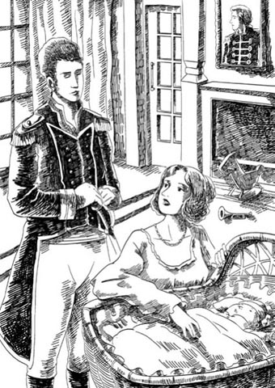
'You will write to me, won't you? I'll be away a long time.'
'I'll write to you about Georgy,' she said. 'Dear William, you have been so kind to us. Look at him. Isn't he wonderful?'
Amelia looked up at Dobbin, her face bright with motherly pride, and he saw that his leaving meant nothing to her. For a moment he could not speak; then, 'Goodbye,' he said.
'Goodbye,' said Amelia, and held up her face and kissed him.
'Hush! Don't wake Georgy!' she added, as Dobbin went to the door with heavy steps. She did not hear his carriage drive away; she was looking at the child, who was laughing in his sleep.
colonel n. an army officer of high rank 上校
approve v. to think that someone or something is good, right, or suitable 赞成，同意
inexperienced adj. not having had much experience 经验不足的，不熟练的
supplier n. a company or person that provides a particular product 供应商
major n. an army officer of high rank (lower than colonel) 少校
complaint n. the act of saying or writing that you are unhappy or dissatisfied with something 抱怨，诉苦
disobedient adj. deliberately not doing what you are told to do by your parents, teacher etc 不顺从的，不服从的
trumpet n. a musical instrument that you blow into 小号
母亲、儿子及其他亲人
6
母亲、儿子及其他亲人
尽管罗顿·克劳利上尉人高马大，是个活靶子，但他却从滑铁卢战场上毫发无伤地归来。而且，他在战场上表现如此勇猛，得以晋升为克劳利上校。
贝姬和她的丈夫在巴黎北边几英里的小镇康布雷重逢。她是个小心谨慎的女人，离开布鲁塞尔时，把所有值钱东西都缝在衣物里一路上穿着。见到罗顿后，她把线拆开，把藏在长裙里的珠宝首饰、支票、纸钞全都取了出来。
罗顿开心地哈哈大笑。“这比在剧院看的戏还好哪！”他说。
“最好玩的是这个。”贝姬说着，拿起一捆特别厚的钞票。
罗顿的眼睛瞪得老大。“你从哪里弄来的啊？”他问。
“把你的马卖给约瑟夫·塞德利。你真该看看他那个样子！他急得要命，想逃得离拿破仑远远的，根本不在乎花多少钱。”
“贝姬，你真是个奇才啊。”她丈夫说。
军队进驻巴黎，贝姬和罗顿在那里度过了1815年的冬天，过着精致奢华的生活。实际上，可怜的乔斯·塞德利付的马钱至少足够克劳利夫妇一年的花销。
当然，他们对玛蒂尔达·克劳利小姐仍然怀有很高的期望，而且在巴黎人人皆知罗顿上校和他迷人的妻子会从他姑姑那里继承一大笔遗产。
但是，他姑姑对此却持不同看法。她忠实的女伴布里格斯小姐对罗顿上校在滑铁卢英勇的表现大为倾倒。
“上校为克劳利家族的名声增添了光彩。”她说，“难道您一点都不同情您勇敢的侄儿吗？”
“布里格斯，你这个傻瓜。”克劳利小姐说，“上校给克劳利家族的名声带来了耻辱。他本可以结一门好亲，可是他没有，他娶了个绘画教师的女儿，低门小户的。她和你是一样的，布里格斯，只不过比你年轻，也比你漂亮得多，聪明得多。罗顿本来有朝一日可以得到我的钱。但是现在不行了。门儿都没有！”
实际情况是克劳利小姐如今有了新宠——她亲爱的准侄媳简女士。罗顿的哥哥皮特·克劳利先生这一段时间以来经常拜访他的姑姑。他把他的准新娘简女士引见给她。简女士是一个为人友善、讨人喜欢的年轻女子，还出身于名门望族。克劳利小姐对她的家庭和她本人都很满意，也赞成这桩婚事。
她收到罗顿从巴黎寄来的许多有趣的信（当然，信是贝姬写的），但是不论来信多么有趣，都没有打动她的心。而且，她从巴黎的一位老朋友那里得知，贝姬无耻地借用克劳利小姐的名号，以获得巴黎社交圈子的认可。这令克劳利小姐怒不可遏。
后来，1816年春天，布里格斯小姐给她念伦敦报纸上这样一则通告：
出生
罗顿·克劳利上校夫妇生育一子
克劳利小姐对罗顿的愤怒之情愈发升级了。她派人去请皮特·克劳利。
“你必须立刻与简女士结婚。”她说，“我在世时，每年给你和我亲爱的侄媳一千英镑；等我死了，你们两个将继承所有一切。”
在这样的鼓励下，他们很快就喜结连理了，幸福的夫妻俩搬去和亲爱的姑姑一起住。
罗顿和贝姬没有意识到他们的钱财希望落空，仍旧在巴黎过着舒适自在的生活。他们的儿子也叫罗顿，最初的十八个月是和保姆在乡下度过的，这样他的母亲就能在城里继续她多姿多彩的社交生活。不过，上校是位慈爱的父亲，经常骑马去看望小罗顿。
日子一天天过去，贝姬明白他们舒适自在的生活已难以为继。他们的钱财挥霍殆尽，还欠下许多债务。尽管罗顿凭着台球和打牌的高超技艺赢了很多赌局，但是收入并不稳定。的确，许多年轻军官如今因为在克劳利夫人的牌桌上输了太多钱，而满面愁容地离开她的聚会。那些经验尚浅的人暗中收到了警告，她家的名声逐渐变差了。
“我们必须为将来打算。”贝姬对罗顿说，“赌博有助于增加收入，我亲爱的，但是它不能算是收入。总有一天大家会厌倦赌博，到那时我们怎么办呢？”
“是啊。”罗顿惆怅地说，“一块儿玩的一些家伙已经不像过去那么爱赌了。”
“你得离开军队，我们必须回英格兰去。”贝姬说，“我们得在伦敦给你谋个政府职位，或许去国外当个总督。”
恰在此时，克劳利小姐去世的消息传到巴黎，克劳利夫妇的众多债主为此而欣喜。克劳利夫妇自然要连忙赶回伦敦，继承上校一直期盼的巨额遗产。克劳利夫人告诉大家，他们很快会重返巴黎，支付他们的所有账单，再租一栋更大的宅子。作为明证，他们走时留下了几箱财物——后来打开时发现里面装的东西一文不值。
伦敦当然没有遗产等着克劳利夫妇继承，不过他们在柯曾大街租了一栋体面的小房子，开始了新生活。他们不幸的房东没有收到租金，仆人们没有收到薪水，供给他们食品、葡萄酒、服装和马车的供应者们也没有收到钱。但是克劳利夫妇生活得很好，他们的债务再次越积越多。
然而，贝姬在伦敦的社交可没那么成功。那些高贵的英国女士们在巴黎时很高兴结识她，现在看见她都面无表情冷冰冰地转过脸去。
这让罗顿大为恼火。“我要让这些女人尊重你。”他说，“我要和她们的丈夫、兄弟拼命，还要——还要开枪把他们都打死！”
“你没法把我打进社交圈啊，我亲爱的。”贝姬笑吟吟地说，“别忘了，我以前只是个女家庭教师，而你，你这个傻孩子，因为欠债、赌博和其他劣迹可是臭名昭著呢。”
“那我们怎么办呢？我们会破产的。”罗顿说。
“胡说！只要活着就有希望，我亲爱的，我还打算把你打造成个人物呢。谁在布鲁塞尔为你卖了马？又是谁阻止你在巴黎到处嚷嚷，你姑姑把所有遗产都留给了皮特和简女士的消息的？”
“我那该死的哥哥！”罗顿说，“为什么那个白脸蠢货和他令人乏味的小妻子能得到一切呢，呃？”
“再发一顿脾气我们也得不到你姑姑的钱。”他妻子平静地说，“我们要和你哥哥一家做朋友。这是你必须做的。你必须给皮特写封信以示友好。你要向他道喜。你要对哥哥表示友爱，对嫂子表示尊重，对侄子表示关怀。你要为了我们和儿子乞求他们的友情。来——现在就坐下来写吧。”
罗顿·克劳利上校在滑铁卢战役中活了下来，威廉·多宾也一样，如今从上尉晋升到少校。但是其他许多军官都没能幸免，当乔治·奥斯本的死讯传到阿梅莉亚耳中时，那差点要了她的命。她连续几周躺在阴暗的房间里，医生们担心她命不久矣。最终，她离开病榻，又活了过来。但是哀恸改变了她。她的脸惨白瘦削，双眼空洞无神，一切善意和友情她都领受，只是无嗔亦无喜。
这段期间，多宾总是不离她左右，每次她坐车外出，多宾也总会陪伴同行。一天，他和往常一样，在阿梅莉亚的马车旁边骑马陪着，在迎面而来的一驾马车上他觉得好像看见了乔治的父亲。
那的确是奥斯本先生。儿子的亡故对他是个巨大的打击，他从不提他的名字，即使收到乔治在战役前夜写给他的最后一封信时也没提。这可怜的孩子写信说，他希望和父亲道别。如果他有个三长两短，他恳求父亲照顾他的妻子，也许还有他的孩子。几个月后，奥斯本先生宣布他要出国，他的女儿们毫不怀疑他会去布鲁塞尔。
他去儿子的墓前祭奠，看了儿子牺牲的战场，在返回旅馆的途中和阿梅莉亚的马车擦身而过。她变化太大，要不是看见她旁边的多宾，他都没认出她来。他注视了她片刻，然后叫仆人继续前进。
但是多宾追了上去。阿梅莉亚，这个可怜的姑娘，既没认出她的公公，也没发觉多宾不在了。
“奥斯本先生，奥斯本先生！”多宾大喊着，骑到他身边，伸出手去。奥斯本没有握手的意思，再次向仆人大吼快点走。
多宾一只手搭在马车上。“我想和您谈谈，先生，”他说，“我给您捎了个口信。”
“那个女人的口信？”奥斯本恶狠狠地说。
“不。”多宾回答，“是您儿子的。”
奥斯本先生缩回马车里，但一言不发。多宾跟着骑在后面，一直随他回到他的旅馆。
“我是以乔治挚友的身份来这里的。”两人面对面时，多宾说，“他死时几乎没留下什么钱。您知道他的遗孀是靠着多么丁点儿的钱度日吗？”
“我不认识他的遗孀，先生。”奥斯本说，“让她回她父亲那里去吧。”
“您知道奥斯本夫人的情况吗，先生？”多宾继续说，“她病得很重。实际上，她可能会死。只有一件事可能挽救她的性命。她就快当母亲了。看在可怜的乔治的份上，您连孩子也不原谅吗？”
奥斯本生气地瞪着多宾。“我儿子是个不听话的傻瓜，这是他自找的。我是个言出必行的人。我发过誓，我决不跟那个女人说话，也不会认她作我的儿媳。你可以这么告诉她。”
但是多宾少校没有告诉阿梅莉亚他和奥斯本先生会面的事。她也不会关心，因为她满脑子想的都是她的亡夫。但那一天终于到来，可怜的年轻孀妇怀抱着新生的婴儿，他的眼睛与逝去的乔治的一模一样——是个漂亮的小男孩。她捧着孩子又哭又笑！看到她的眼睛里又重现光彩，充满爱意，她的朋友们高兴极了。
我们的朋友多宾也是其中一位。是他把她带回英格兰，送她回父母家中的。他每天都去拜访，给孩子带去礼物，有时还获许抱抱孩子。阿梅莉亚的爱都倾注在孩子身上，多宾看得出来她心里没有他的位置。他平静而又毫无怨言地接受了这个事实。
一天，他来了，给小乔基带来玩具——一匹木马，一支小号，还有其他各式各样的打仗玩具。房东的小女儿见到便笑了起来，因为乔基只有六个月大，玩这些玩具还太小了。小女孩常和阿梅莉亚在一起，是为数不多可以和小宝宝玩的人之一。
孩子在睡觉。“嘘！”多宾进来时阿梅莉亚示意。
“我来道别，阿梅莉亚。”他轻声说。
“道别？你要去哪里？”她微笑着问。
“去印度，随军团一起。”他说，“你会给我写信的，对吧？我要离开很长一段时间。”
“我会写信告诉你乔基的情况。”她说，“亲爱的威廉，你待我们一直都这么好。你瞧他，多棒啊，是不是？”
阿梅莉亚抬起头看着多宾，满脸洋溢着做母亲的骄傲。多宾看出来自己的离开对她无足轻重，一时间说不出话来。最后，他说：“再见。”
“再见。”阿梅莉亚说，仰起脸亲了他一下。
“嘘！别把乔基吵醒了！”多宾迈着沉重的步子走向门口时，她加了一句。她没听见他的马车离去。她盯着宝宝看，宝宝在睡梦中笑着。
7 Reunions, quarrels, and other family business
7
Reunions, quarrels, and other family business
Pitt Crawley was astonished to receive such a pleasant letter from his brother Rawdon. His wife Lady Jane, a gentle, kindly woman, was delighted, and expected that Pitt would immediately divide his aunt's inheritance into two equal parts and send one to his brother.
Pitt did not feel the need to send a cheque to Rawdon for thirty thousand pounds, but he did write back in a friendly manner, promising to help his brother and his family if he could.
The brothers did not meet for some time, however. Since the death of Miss Crawley, Pitt and Lady Jane had been living down at Queen's Crawley, where Becky had gone as governess years before. Her former employer, Sir Pitt Crawley, was still alive, but even more disagreeable than he used to be, and when he finally died a few years later, none of his family felt any great sorrow.
In fact, when the black-edged invitation to the funeral arrived in Curzon Street, the reactions were very far from sorrowful.
Rawdon carried the letter to Becky in her bedroom – with her cup of chocolate, which he always took to her every morning.
'We don't have to go, do we, Becky?' he said. 'Pitt bores me to death, and a carriage there and back will cost too much.'
'Of course we're going, you silly man!' cried Becky, jumping up in delight. 'Your brother is now Sir Pitt, and a Member of Parliament. I want Lady Jane to present me at court next year, and I want Sir Pitt to get you a position of some importance – the Governor of the West Indies, or something like that. We must order our black clothes for the funeral at once.'
'Little Rawdy comes too, of course,' said her husband.
'Of course not! Why pay for a third seat in the carriage?'
It was a great moment when the two Crawley brothers met again at last. The new Sir Pitt shook his brother warmly by the hand, while Lady Jane took both Becky's hands, and kissed her.
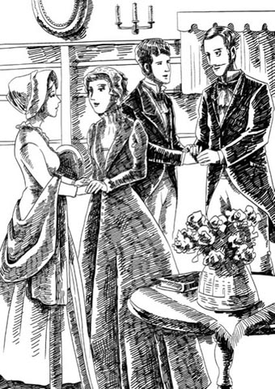
It was a great moment when the two Crawley brothers met again at last.
This mark of kindness brought tears to Becky's eyes, which was a rare event. When Lady Jane took Becky to her room, Becky at once began work on earning her sister-in-law's approval.
'What I should like to do first,' Becky said, in a soft little voice, 'is to see your dear little children.'
This request pleased Lady Jane very much. She led Becky away to meet her daughter and son, aged four and two, and in no time at all, she and Becky were close and affectionate friends.
'You must be so sad,' Lady Jane said sympathetically, 'to have left your little boy in London.'
'Dear, dear Rawdy!' sighed Becky. 'I miss him so much.'
It was fortunate that her husband did not hear this remark as it would have surprised him greatly. He was very fond of his son. He saw Rawdy every day at home, bought him presents and toys, played with him whenever he could. His mother took no notice of the boy at all. When he cried at night, it was a servant who came and took him to her room to comfort him.
Rawdon and Becky spent several days at Queen's Crawley, and it was time well spent. Lady Jane thought Becky was delightful, and Sir Pitt also approved of her. She had shown interest in his ambitions for government, and made admiring comments on his political ideas, which he had found very agreeable.
'I did not like the marriage at the time,' he told his wife, 'but it has improved Rawdon very much.'
Rawdon was almost sorry to leave, but Becky was glad to escape from playing the part of a dutiful sister-in-law – listening with interest to dull conversations, inspecting the fruit garden, visiting sick villagers with soup and encouragement.
'It isn't difficult to be a country gentleman's wife,' she said to Rawdon in the carriage returning to London. 'I think I could be a good woman if I had five thousand a year.'
'Mm,' said Rawdon. 'I wish you'd got some money out of Pitt, though. I'd like to pay the landlord some of the rent we owe. It isn't right, you know, that his family should starve because of us.'
'Pitt gave me this for Rawdy,' Becky said. It was a cheque for a small amount. 'Give it to the landlord. We've been invited to Queen's Crawley for Christmas – perhaps Pitt will do something for you then. Or next year, when they come to London. Until then we must manage on your winnings at cards. And perhaps Lord Steyne will hear of a position for you.'
This Lord Steyne was one of Becky's admirers in London. High-society women still ignored her, but the men crowded to Mrs Crawley's little house, where the suppers were excellent, and the conversation brilliant. And where many of them, of course, lost money at the card-tables to Colonel Crawley.
Not Lord Steyne, however, who was no fool. He was a short, ugly man, disliked by many for his cruel tongue and his evil reputation. But he was extremely wealthy, belonged to one of the grandest families in England, and dined with the Prince of Wales. It comforted the poor landlord to see Lord Steyne's carriage outside the Crawleys' door. With such rich friends, he thought, they were sure to pay his rent one day...
Becky amused Lord Steyne. He admired her charm and her intelligence and her cunning, which he saw was equal to his own, and her artful lies gave him much entertainment. He laughed a great deal at Becky's account of her time at Queen's Crawley.
'I should like to see you visiting the sick,' he said, 'and being polite to those dull relations of your husband's.'
'They are very good people,' said Becky sternly. 'You should not laugh at them.'
Lord Steyne laughed again. 'And you, my pretty lady, were bored to tears by them all. Come now, admit it, Mrs Crawley!'
Becky gave a wicked little smile, but would admit nothing, and after taking some tea, Lord Steyne went away. On the way out he met Rawdon, and greeted him in his usual manner.
'How is Mrs Crawley's husband?' he would say, and indeed, in London that is what Rawdon had become. He was Colonel Crawley no more; he was Mrs Crawley's husband.
Rawdon was still very fond of his wife. He admired her brilliance and her clever conversation, and obeyed her orders without question. But he had few interests apart from gambling and horses, and was glad whenever Becky released him from his social duties and sent him off to dine with his friends.
'Some gentlemen are coming tonight who would bore you,' she would say. 'I only invite them because they have influence and can help you. And now I have a companion, there's no need for you to be here.'
The companion was Miss Briggs, who had been companion to Rawdon's aunt until that lady died. Becky, hearing that Miss Briggs had inherited some money from Miss Crawley, had invited her to Curzon Street as her companion. Miss Briggs's friends warned her against the Crawleys, but Miss Briggs went to live with Mrs Rawdon the next week, and had lent Rawdon Crawley six hundred pounds before six months were over.
Her presence in the house made it possible for Becky to receive gentlemen visitors when her husband was not at home, and although Lord Steyne often growled at her 'watch-dog', as he called Miss Briggs, Becky only laughed.
Miss Briggs also helped to look after little Rawdon. He was now seven years old, a fine, strong boy, with a gentle nature, fond of everyone who was good to him, especially Miss Briggs and his father. He no longer thought of his mother in that way.
For two years she had hardly spoken to him. She disliked him, and he bored her. One day, attracted by the sound of his mother's voice singing, he came quietly downstairs. The drawing-room door opened suddenly and revealed the boy standing there, listening in delight to the music.
His mother came out and struck him violently on the ear. He heard a laugh from Lord Steyne inside the room (who was amused by this display of Becky's bad temper), and he ran away, down to his friends the servants in the kitchen.
'It isn't because it hurts,' he said, crying bitterly, 'but why can't I listen to her singing? She sings to that bald-headed man with the big teeth. Why doesn't she sing to me?'
From that day Becky hated her son. And the boy began to feel fear and doubt. He knew that this man was his enemy. Whenever they met, Lord Steyne would make some nasty remark, and in return, the child would stare hard at him and put his hands up as though to fight him.
When Christmas came and the visit to Queen's Crawley, Becky wanted to leave the child behind, but Lady Jane insisted that he came too. Rawdon complained at Becky's neglect of their son.
'He's the finest boy in England,' he said, 'but you don't seem to love him as much as you do your little dog. He won't bother you much. He'll be with the other children all the time, and on the journey he can ride outside on the coach with me.'
'You only sit outside on the coach so you can smoke those awful cigars,' said Becky.
'You always used to like the smell of cigars,' Rawdon said.
His wife laughed. 'That was before we were married,' she said.
So little Rawdon accompanied them to Queen's Crawley, and he loved every minute. When they arrived, Sir Pitt and Lady Jane and their children were there to welcome them in the hall, and the little girl, Matilda, shyly kissed Rawdy on the cheek.
The children were soon firm friends, with Rawdy, who was the oldest, the leader in all their games. He also loved going with his father to the stables, or helping in the hunt for rats in the farm buildings. But best of all, he loved his Aunt Jane, who was so kind to him. He even allowed her to kiss him sometimes. In the evenings, after dinner, when the ladies went to the drawing-room and left the gentlemen to drink their wine, he always preferred to sit near his Aunt Jane, rather than his mother.
One evening when there were guests, Becky, having noticed that Lady Jane and the other ladies were in the habit of kissing their children, called her son over to her and kissed him.
He looked her full in the face after the kiss, trembling and turning very red. 'You never kiss me at home, mama,' he said.
An embarrassed silence fell in the room, and there was a rather unpleasant look in Becky's eyes.
After that day Lady Jane and Becky were never quite so friendly. There was a coolness in the air, and Lady Jane began to feel that her husband was paying Becky too much attention. They spent hours in his study, discussing his political ambitions and plans – subjects that Sir Pitt never mentioned to his wife.
Rawdon had become fond of his sister-in-law because she was so kind to his son, and when the holiday was over, both he and his son were sad to leave. The ladies, however, said goodbye to each other with less sadness. Becky was keen to return to the bright lights of London. She was bored with the country and bored with the sweet and gentle Lady Jane, though of course she was careful not to reveal this, as she needed Lady Jane to present her at court. She was determined to climb the social ladder as high as she could, determined to show those proud, stiff-necked society women that she, Rebecca Sharp, daughter of a drawing-teacher, could outshine them all in social brilliance.
While Becky was busily making new friends and new enemies, her former friend Amelia found her social circle was shrinking. Dobbin had gone to India, and her brother Joseph had returned to his job there soon after the Battle of Waterloo. Perhaps he had been afraid that his terrified flight from Brussels might be talked about and laughed at. However, he made an allowance to his parents of a hundred and twenty pounds a year, paid monthly through his London agent.
Mr Sedley borrowed money to try to recover his lost fortune, but his attempts to start new businesses became more and more foolish, and he lost the money he had borrowed. Amelia had a small widow's pension, and with Joseph's money, the little family had just enough to live on.
Amelia's whole life was centred on her son Georgy. She was extremely possessive about him, and wanted to do everything for him herself. Once, when Georgy was still a baby, she came into her room and found her mother giving the child a spoonful of Daffy's Special Baby Medicine.
Amelia seized the baby out of her mother's arms, then grabbed the bottle of medicine and sent it crashing into the fireplace.
'I will not have my baby poisoned, mama!' she cried.
'Poisoned, Amelia?' said the old lady. 'What are you saying?'
'Georgy shall not have any medicine unless the doctor approves of it. And he told me that Daffy's was poison.'
'Very good; you think I'm a murderess,' said Mrs Sedley. 'I have met with misfortunes; I have sunk low in life; but I did not know I was a murderess before, and thank you for the news.'
'Oh, mama,' said the poor girl, 'I didn't mean—'
'Oh no, my love, – only that I was a murderess. Though I didn't poison you when you were a child. A murderess, indeed! May God forgive you, you wicked, ungrateful girl!'
After this, there was a coolness between mother and daughter that never really went away. Mrs Sedley had little to do with her grandson and was frequently critical of her daughter.
Georgy grew up to look very like his father, and Amelia spoke to him constantly of her love for her dead husband, whose picture hung on the wall above her bed, and was cleaned daily.
Amelia was not without admirers in her little social circle. She was not brilliant, nor clever, nor wise, nor very pretty, but men were always charmed by her. Perhaps it was her weakness and her sweet nature that made men want to protect her. But it was certain that young Mr Linton, the doctor's assistant, was her willing slave. He sat up through the night with Georgy during his childhood illnesses, and would call in at any time, without a fee, if Mrs Osborne was at all worried about her darling boy.
Amelia kept her promise to Dobbin and wrote to him two or three times a year – letters all about little Georgy. Dobbin was delighted to receive these letters, and always replied. He sent many gifts too – beautiful Indian shawls for Amelia and her mother, wonderful carved wooden animals for Georgy.
'It's quite obvious,' Mrs Sedley remarked to the landlady, 'that Major Dobbin is in love with her, but whenever I mention the fact, she begins to cry, and goes and sits upstairs with her little picture of George. I'm sick of that picture. I wish we'd never seen those horrid, proud Osbornes.'
Georgy grew up surrounded by love, ruling the little world around him, including his gentle mother, whom he loved with a passionate affection. Everyone was amazed at how like his father he was – the same face, the same hair, even the same pride.
Dobbin's letters continued to take a close interest in Georgy, asking about his reading and writing, wanting to know if he was going to school, and offering to help with the fees.
Sometimes his sister, Miss Dobbin (no doubt on her brother's instructions), came to visit Amelia and Georgy; and sometimes she begged that the boy might spend a day with her at home. Unwillingly, Amelia agreed to this, but Georgy loved his days at Miss Dobbin's home, where there was a wonderful garden to play in, and wonderful fruit to eat from the hot-houses.
One day Miss Dobbin arrived with some very interesting news about her brother William that she was sure would delight Amelia.
'Is he coming home?' Amelia asked, looking pleased.
'Oh, no,' his sister replied. 'Not at all. But I have very good reason to believe that dear William is about to be married – to a most lovely girl, everybody says.'
'Oh!' said Amelia. She was very, very happy indeed. But her eyes seemed a little damp, and she was strangely silent for the rest of the day – though she was very happy indeed at the news.
disagreeable adj. unfriendly and bad-tempered 不友好的，脾气坏的
dutiful adj. doing what you are expected to do and behaving in a loyal and obedient way 尽责的，顺从的
account n. a written or spoken description that says what happens in an event or process 叙述，描述
growl v. to say something in a low angry voice 怒吼，怒气冲冲地说
coach n. a large carriage pulled by horses and used in the past for carrying passengers 公共马车，四轮大马车
full adv. directly 直接地
stiff-necked adj. too proud, and refusing to change or obey 顽固的，倔强的
flight n. when you leave a place in order to try and escape from a person or a dangerous situation 逃跑
allowance n. an amount of money that you are given regularly or for a special purpose （定期或出于特殊原因而给予的）一笔钱
pension n. money paid regularly by a government under certain conditions 抚恤金
murderess n. a woman who murders another person 女谋杀犯，女凶手
call in to visit a person or place while you are on your way to somewhere else 顺道拜访，探望
horrid adj. very unpleasant 令人讨厌的
团聚、争吵及其他家事
7
团聚、争吵及其他家事
皮特·克劳利收到他弟弟罗顿礼貌且友善的来信，感到非常意外。他的妻子简女士是个温柔善良的人，收到信她十分欢喜，希望皮特马上把他姑姑的遗产平分，一份送给他弟弟。
皮特觉得没有必要送给罗顿一张三万英镑的支票，但他还是友好地回了信，许诺说会尽量帮助他的弟弟和家人。
不过，两兄弟隔了一段时间才见面。自从克劳利小姐去世后，皮特和简女士就一直在昆士克劳利居住，那里正是多年前贝姬做家庭教师的地方。她的老雇主皮特·克劳利爵士仍然健在，但是比过去更惹人厌烦了。几年后他去世时，家里人没有谁觉得悲痛。
实际上，当黑边的葬礼邀请函到达柯曾大街时，其引起的反应跟悲痛丝毫不沾边。
罗顿拿着信去贝姬的卧室，还端着一杯巧克力饮料。他每天早晨总会给她送一杯。
“我们不是非得去，对吧，贝姬？”他说，“皮特乏味得要命，而且一辆马车来回的花费太大了。”
“我们当然要去，你这个傻瓜！”贝姬喊道，高兴得跳了起来。“你哥哥现在是皮特爵士了，还是下院议员。我想让简女士明年把我引见给王公贵族，还想让皮特爵士给你安排个重要职务——西印度群岛总督，或者其他类似职务。我们得赶快订购参加葬礼用的黑色礼服。”
“小罗迪当然也去。”她丈夫说。
“当然不去！为什么要再花一份坐票的钱呢？”
最终，克劳利两兄弟再次聚首，场面十分美好。新皮特爵士热情地同弟弟握手，简女士则拉着贝姬的双手，亲吻她。
善意的举动令贝姬热泪盈眶，这可是很罕见的。简女士带贝姬去她房间时，贝姬立刻开始施展魅力，以求赢得她妯娌的心。
“我想先看看你亲爱的孩子们。”贝姬温柔地说。
这个请求使简女士大为高兴。她带着贝姬去看她的女儿和儿子，他们分别是四岁和两岁。不消一会儿工夫，她和贝姬就成了亲密无间的好朋友。
“你一定很伤心吧，”简女士同情地说，“把你的小宝贝留在伦敦。”
“我亲爱的，亲爱的罗迪！”贝姬叹了口气，“我太想他了。”
幸好她丈夫没有听到她这番话，否则一定会惊讶不已。他非常爱自己的儿子。他每天在家都要见罗迪，给他买礼物和玩具，一有机会就陪他玩。孩子的母亲则对他不闻不问。他晚上哭泣，也是一个仆人把他带到她自己的房间哄他。
罗顿和贝姬在昆士克劳利住了几天，收获颇丰。简女士觉得贝姬讨人喜欢，皮特爵士也接受了她。她对他从政的抱负显示出兴趣，对他的政治主张表示赞赏，这很讨皮特爵士的喜欢。
“当初我不赞成这桩婚事。”他告诉妻子，“不过结婚让罗顿变成熟了许多。”
罗顿几乎要为离开而感到遗憾，但贝姬却很高兴，因为她再也不用扮演贤弟媳的角色——要兴致勃勃地听那些无聊的谈话，视察果园，带着汤去慰问鼓励那些生病的村民。
“做个乡绅的妻子没什么难的。”在返回伦敦的马车上，她对罗顿说，“我要是一年有五千英镑，我也能当个好主妇。”
“呣。”罗顿说，“我倒希望你从皮特那里得了些钱。我想把拖欠的房租付一部分给房东。你知道，要是他一家因为我们的缘故而挨饿，这怎么说得过去。”
“皮特给了我这个，送给罗迪的。”贝姬说。那是一张小额支票。“把这个给房东吧。我们已经受邀去昆士克劳利过圣诞节，没准儿那时皮特会为你做点什么的，或者是明年他们来伦敦的时候。在那之前，我们只能靠你在牌桌上赢来的钱过活了。也许斯泰恩勋爵会帮你打听个职位。”
这位斯泰恩勋爵是贝姬在伦敦的仰慕者之一。虽然上流社会的太太们仍不理睬她，但男士们却蜂拥至克劳利夫人的小家。那里的晚餐精美可口，谈话精彩有趣。当然，其中许多人在牌桌上把钱输给了克劳利上校。
然而斯泰恩勋爵不在其中，他可不傻。他个子矮小，长相丑陋，由于说话刻薄，声名狼藉，素来为人所不喜。但是他极为富有，出身英格兰最负名望的家族之一，还和威尔士亲王用过膳。可怜的房东看见斯泰恩勋爵的马车停在克劳利家门前，心中略感安慰。他想，他们有这么富有的朋友，总有一天一定会付给他房租的……
贝姬能逗斯泰恩勋爵开心。他欣赏她的魅力、智慧和狡黠，觉得和他旗鼓相当。她巧妙的谎话也给了他许多乐趣。贝姬在讲述昆士克劳利的生活时，他时常捧腹大笑。
“我想看看你怎么探望病人，”他说，“怎么彬彬有礼地对待你丈夫那些乏味的亲戚的。”
“他们是很好的人。”贝姬严肃地说，“你不应该嘲笑他们。”
斯泰恩勋爵又笑了：“而你呢，我可爱的女士，被他们烦得要哭了吧。得了，承认吧，克劳利夫人！”
贝姬露出一丝坏笑，但什么也不肯承认。喝过茶，斯泰恩勋爵离开了。出门时他碰到了罗顿，像平时一样和他打招呼。
他问：“克劳利夫人的丈夫好吗？”的确，在伦敦这就是罗顿的称呼。他不再是克劳利上校了，他是克劳利夫人的丈夫。
罗顿仍然深爱着他的妻子。他爱慕她的才华、她机灵的言谈，按她说的行事，从不质疑。但是除了赌博和骑马，他没什么其他兴趣。每当贝姬不要求他社交应酬，让他和自己的朋友吃饭，他就很高兴。
“一些绅士今晚过来，他们会让你感到无聊。”她会这么说，“我邀请他们，是因为他们有权势能帮到你。现在我有女伴了，你就没必要待在这儿了。”
这位女伴是布里格斯小姐，一直陪伴罗顿的姑姑直到她去世。贝姬听说布里格斯小姐从克劳利小姐那里继承了一些钱，就邀请她来柯曾大街陪伴自己。布里格斯小姐的朋友们警告她小心克劳利夫妇，但她一周后就和罗顿夫人住在了一起。不到半年，她就已经借给罗顿·克劳利六百英镑了。
布里格斯小姐的存在使得贝姬可以在罗顿外出时也接待男士访客了。尽管斯泰恩勋爵经常冲她的“看门狗”（他如此称呼布里格斯小姐）大吼，但贝姬也只是笑笑。
布里格斯小姐还帮忙照看小罗顿。他现在七岁了，相貌清秀，身体健壮，性情温和，对他好的人他都喜欢，尤其是布里格斯小姐和他的父亲。他再也不认为母亲待他好了。
两年了她很少和他说话。她不喜欢他，觉得他烦。一天，他被母亲唱歌的声音吸引，悄悄地走下楼。客厅的门突然开了，大家发现小男孩正站在那里，满心欢喜地听着音乐。
他母亲走出来，狠狠地打了他一耳光。他听到客厅里斯泰恩勋爵一声大笑（勋爵觉得贝姬发脾气很有意思），然后就跑开了，去楼下厨房找他的仆人朋友们。
“我哭不是因为疼。”他伤心地哭着说，“为什么我不能听她唱歌？她给那个长着大板牙的秃顶男人唱歌。她为什么不给我唱？”
从那天起，贝姬讨厌她的儿子。男孩开始疑惧不安。他明白那个男人是他的敌人。只要他们一碰面，斯泰恩勋爵都会说些难听话，而孩子就死死地盯着他，举起手，摆出一副要和他打架的样子。
圣诞到了，该去昆士克劳利拜访，贝姬想把孩子留下，但是简女士坚持让她带着孩子一起去。罗顿抱怨贝姬不在意孩子。
“他是英格兰最棒的男孩子。”罗顿说，“但是你似乎爱他还没爱你的小狗那么多。他不会怎么打扰你的。到那里后，他会一直和其他孩子在一起。在路上，他可以和我一起坐在车厢外面。”
“你坐在外面就是为了抽你的臭雪茄罢了。”贝姬说。
“你过去一直都喜欢雪茄味的。”罗顿说。
他的妻子笑了。“那是在我们结婚之前。”她说。
就这样，小罗顿和他们一道去了昆士克劳利，他享受在那里的每分每秒。他们到时，皮特爵士、简女士和孩子们在大厅里迎接他们，小女孩玛蒂尔达羞涩地亲吻了罗迪的面颊。
孩子们很快就成了好朋友，他们中罗迪年纪最大，在所有的游戏中都是带头人。他也喜欢陪父亲去马厩，或者帮忙在农舍里捉老鼠。但他最喜欢的还是简伯母，她对他好极了。他有时甚至允许简伯母吻他。吃过晚饭后，女士们起身去客厅，留下男士们喝葡萄酒，这时候他总是愿意坐在简伯母身边，而不是母亲身旁。
一天晚上，有客来访，贝姬注意到简女士和其他女士都有亲吻自己孩子的习惯，于是她把儿子叫到身边也吻了他。
亲吻结束后，他直视着她的脸，浑身颤抖，满脸通红。“你在家从来不吻我，妈妈。”他说。
房间里陷入一阵尴尬的沉默。贝姬的眼神颇显不悦。
打那天起，简女士和贝姬的关系就没有那么友好了。两人之间气氛冷淡，简女士开始觉得她丈夫对贝姬过分关注了。他们在书房里一待就是好几个小时，讨论他的政治抱负和愿景，而这些话题皮特爵士从来没向妻子提起过。
罗顿渐渐喜欢上他的大嫂，因为她对他的儿子很好。假期结束时，父子俩都舍不得离开。然而，两位女士道别就没有那么伤感了。贝姬渴望回到伦敦的灯火辉煌之中。她厌倦了乡下，也厌倦了温柔甜美的简女士。当然了，她很小心没有将厌倦之情显露出来，因为她需要简女士引见她入宫。她下定决心要尽她所能往上爬，让那些傲慢的、死心眼的贵妇们知道：她，丽贝卡·夏普，一名绘画教师的女儿，在任何社交场合上都能让她们黯然失色。
在贝姬忙于结交新朋友、树立新敌人之时，她以前的朋友阿梅莉亚发现自己的社交圈子越来越小了。多宾去了印度，她哥哥约瑟夫在滑铁卢战役后不久也回到那里工作。或许，他担心自己仓皇逃离布鲁塞尔的事可能会被人议论和耻笑。尽管如此，他每年给父母补贴一百二十英镑，通过他在伦敦的经纪人按月支付。
塞德利先生借钱试图赚回失去的财富，但是他的新生意越做越差，最后连借的钱也赔光了。阿梅莉亚有一小笔遗孀抚恤金，加上约瑟夫的钱，这一家人只能勉强度日。
阿梅莉亚的生活重心全都放在她的儿子乔基身上。她对儿子的占有欲极强，事事都想亲力亲为。有一次，乔基还是个小宝宝时，她走进房间，见到她母亲正在给孩子喂一勺达菲牌特效婴儿药水。
阿梅莉亚从她母亲怀里夺过孩子，然后抓起药瓶，扔到壁炉里砸碎了。
“我不会让别人给我的孩子下毒，妈妈！”她大声喊。
“下毒，阿梅莉亚？”老夫人问，“你在说什么啊？”
“除非医生许可，否则乔基什么药都不能吃。医生告诉我，达菲牌的药是毒药。”
“好啊，你觉得我是个杀人犯。”塞德利夫人说，“我遭遇了诸多不幸，我的生活也一落千丈，但我还不知道自己竟是个杀人犯，多谢你告诉我这个新闻。”
“唉，妈妈。”可怜的姑娘说，“我不是这个意思——”
“不，不，我亲爱的孩子——你只不过说我是个杀人犯。你还是小孩子的时候，我倒是没有毒死你。一个杀人犯，哈！愿上帝宽恕你，你这个不知感恩的坏姑娘！”
母女之间从此变得生疏了，一直都没有好转。塞德利夫人几乎不管她的外孙，而且频频指责她的女儿。
乔基长大后很像他的父亲，阿梅莉亚常常向他说起她对亡夫的爱。她把丈夫的画像挂在床前的墙上，每天都擦拭一番。
阿梅莉亚在她的小社交圈里并非没有仰慕者。她并不才华出众，也不聪明伶俐，更非貌美如花，但男人们总是被她迷住。也许正是她柔弱甜美的气质让男人想保护她。不过可以确定的是，年轻的医生助理林顿先生心甘情愿当她的奴隶。乔基年幼得病时，他通宵守在身边。但凡奥斯本夫人有一丁点担心她可爱的孩子，他都会随时应召前来，而且不收费用。
阿梅莉亚遵守对多宾的承诺，每年给他写两三封信，信里写的全是小乔基的事。多宾收到信很高兴，而且总会回复。他也寄去很多礼物——给阿梅莉亚和她母亲的漂亮印度披肩，给乔基的精致木雕动物。
“事情相当明显。”塞德利夫人对房东太太说，“多宾少校爱上她了，但是每次我跟她提起这件事，她就开始哭，然后就上楼守着她那张乔治的画像呆坐着。我烦死那张画像了。我希望我们从来都没遇见过那些令人讨厌又自大的奥斯本家人。”
乔基在爱的包围中长大，统治着身边的小小世界，其中包括了他温柔的母亲，他对她尤为热爱。人们不禁诧异，他长得太像他父亲了——同样的脸庞，同样的头发，甚至连骄矜都是一样的。
多宾的来信继续密切关注着乔基，询问他读书和写字的情况，想知道他要不要去上学，提出愿意帮助出学费。
有时他的妹妹多宾小姐（无疑是在他的指示下）来看望阿梅莉亚和乔基，有时她恳求让乔基去她家待一天。尽管不情愿，阿梅莉亚还是同意了，不过乔基很喜欢在多宾小姐家里的日子。她家有一个很漂亮的花园，可以在里面玩耍，温室里还有很美味的水果可以吃。
一天，多宾小姐来访，带来了某个有关她哥哥威廉的新闻，十分有意思，她肯定阿梅莉亚听了后会很高兴的。
“他要回来了吗？”阿梅莉亚问，看上去很开心。
“啊，不。”他妹妹回答，“不是的。但是我有充足的理由相信，亲爱的威廉要结婚了——和一个非常可爱的女孩，大家都这么说。”
“噢！”阿梅莉亚说。她的确非常开心。可是她的眼睛似乎有些湿润，那天后来的时间里她也表现得异常沉默——尽管她得知那个消息确实非常开心。
8 The rise and fall of our heroines' fortunes
8
The rise and fall of our heroines' fortunes
Mrs Rawdon Crawley knew that to gain acceptance into the highest society, she must be presented to the King at court. After she had made her curtsy to the highest person in the land, the noble families of England would be obliged, however unwillingly, to recognize her.
Her sister-in-law, Lady Jane, being from a noble family, was the ideal person to present Becky at court, so Becky made herself very agreeable to Sir Pitt when he was in London. She helped him write his political speeches, and discussed political events with him. She introduced him to important gentlemen at her parties, and he was deeply impressed by Becky's friendly relationship with the wealthy Lord Steyne. He had no idea that behind his back Becky made fun of him to the great Lord.
While his house in Great Gaunt Street was being made ready for his family, Sir Pitt stayed in Curzon Street, where Becky daily fussed over his comfort. One evening she even cooked a little supper for him with her own hands.
'It is an excellent meal, my dear Rebecca,' said Sir Pitt. 'But everything you do, you do well.'
'A poor man's wife,' Becky replied cheerfully, 'must make herself useful, you know.'
'You could be the wife of a king, with all your skills,' Sir Pitt said. He thought to himself how Rawdon was a foolish, dull fellow, who didn't appreciate his brilliant wife; and how pretty Becky looked, sitting opposite him at the table.
And later, sitting by the fire, Becky let him talk, listening to him with kindly interest and sewing a shirt for her dear little son. Whenever she wished to appear a model of wifely goodness, this little shirt was brought out of her sewing-box. It was too small for Rawdy long before it was finished.
When the house in Great Gaunt Street was ready and Lady Jane had moved in, Becky would call on her from time to time, but in general the two women saw little of each other. Sir Pitt, however, found time to see his sister-in-law daily, and was a regular guest at her evening parties.
In the middle of these fine parties and brilliant people, Colonel Rawdon found himself more isolated every day. He was rarely required for social duties these days, and would often walk round to Gaunt Street with young Rawdy, and sit with Lady Jane and the children. He was glad to be given small jobs to do – taking messages, helping with the children's dinner. The brave and daring young soldier of ten years before had become a dull, lazy, obedient, middle-aged gentleman.
And poor Lady Jane knew that her husband had become a victim of Becky's charm, although when they met, she and Mrs Rawdon still behaved as though they were the best of friends.
At last Becky's kindness and attention to the head of her husband's family were given their due reward, and the great day came when Sir Pitt's carriage arrived in Curzon Street to take Mrs Rawdon Crawley and her husband to meet the King.
Becky's dress that day put the dresses of all other women in the shade, as even Lady Jane was forced to admit.
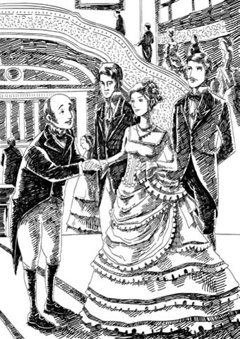
Becky's dress that day put the dresses of all other women in the shade.
And the diamonds... 'Where the devil did you get the diamonds, Becky?' said her husband, admiring the jewels which sparkled on her arms and neck with great brilliance.
Becky blushed a little, and looked at him hard. Pitt Crawley blushed too, and looked uneasy. He had given her a little bracelet himself – but had failed to mention this fact to his wife.
Becky smiled at Rawdon. 'Guess!' she said. 'Where do you think I got them, you silly man? I hired them, of course.'
Becky's diamonds, however, never returned to any hire-shop. They were later locked away in a secret little desk that she had, and Rawdon knew nothing about the diamonds which shone on his wife's neck that day.
But Lord Steyne knew where the jewels came from, and who paid for them. As he bowed over Becky's hand in the royal rooms that day, he gave her a knowing smile, which was returned. And many people there noted the particular attention that the great Lord Steyne paid to the Colonel's little wife.
And so began Becky's victory over her enemies. How angrily did those grand ladies now send their cards of invitation to Mrs Rawdon Crawley! How they smiled at her, tight-lipped and with icy stares! How Becky's eyes sparkled with delight at their silent and terrible fury! And the more the ladies hated her, the more the gentlemen were devoted in their admiration. Hungarian princes sighed over her little hand, government ministers begged her to sing to them at evening parties, handsome young men competed with each other to fetch her shawl, to hold her carriage door, to write poems in praise of her bright eyes.
Lord Steyne was amused by Becky's victorious social progress. 'It won't last,' he told her. 'You can't compete with them for long, you silly little fool. You have no money.'
Becky turned her big green eyes on him and sighed. 'You must get my husband a position,' she said, 'as soon as possible.'
'All women are the same,' said the noble Lord. 'Wanting this, demanding that. None of it is worth having.'
Miss Briggs, seated at the work-table at the back of the room, looked up nervously at the sound of his fierce voice. Lord Steyne saw her looking, and turned angrily to Becky.
'Why don't you get rid of your watch-dog?' he growled.
Becky laughed, but a little later suggested to Miss Briggs that she took Rawdy out for a walk in the park.
'I can't send her away,' Becky said sadly, when she had gone.
'You owe her her wages, I suppose?' said Lord Steyne.
'Yes, and worse than that,' said Becky. 'I have ruined her. I have borrowed all her savings, and can't pay a penny back. My husband would kill me if he knew.'
There was a brief silence. 'Damned fool!' said the Lord. 'How much is it?'
Becky thought about the size of Lord Steyne's fortune, and mentioned an amount twice the size of the debt to Miss Briggs. Lord Steyne swore again, at which Becky held her head down and began to cry bitterly. Lord Steyne then took his hat and left.
That night Becky received a note with Lord Steyne's signature, and an instruction to his bankers. In the morning she hurried to the bank. How will you take the money, madam? A hundred and fifty pounds in small notes, and the rest in one note.
On the way home she stopped to buy a handsome black silk dress for Miss Briggs. She called into the landlord's house and gave him fifty pounds on account, and did the same at the stables where she hired her carriages. The one note that the bank had given her she locked away in her secret little desk.
Lord Steyne continued to be generous to the Crawley family. He pointed out to the parents that it was time young Rawdy was sent away to a good school, and when the father said he could not pay the fees, Lord Steyne offered to take care of the matter. Rawdon agreed to the plan for his son's sake, but he missed the boy greatly, and was sad and lonely when he had gone.
Becky hardly noticed that her son had gone. Nor did she notice her husband's unhappiness. She was too busy thinking about her position, her pleasures, her advancement in society.
Having got rid of the child, Lord Steyne suggested before long that there was no further need for Miss Briggs in the Crawley household. He found out from the lady herself how Becky had deceived him about the money, and this amused him greatly.
'What a clever little devil she is!' he thought. 'I'm a fool compared to her. She's the best liar I have ever met!'
He arranged a pleasant, well-paid job for Miss Briggs in one of his country houses. Miss Briggs was delighted with the plan, and Rawdon was glad that Miss Briggs would at last receive some wages, even if the debt to her was still unpaid. But he was uneasy in his mind. His brother shared his unease.
'Rebecca should not receive guests without a companion,' Sir Pitt said. 'You must be with her, Rawdon, at all times.'
In fact, Sir Pitt was so alarmed that he went to see Becky and came close to a quarrel with his once admired sister-in-law.
'People are talking about you,' he said. 'These wild young men of fashion who visit you, the fact that Lord Steyne's carriage is always at your door – it's not only your reputation that suffers, but that of the whole Crawley family. I am the head of the family and I beg you, I command you, to be more careful.'
Tears, smiles, excuses – nothing would calm Sir Pitt, and Becky promised everything Pitt wanted; but Lord Steyne came to her house as often as ever, and Sir Pitt's anger increased.
Rawdon, aware of his brother's anger, became more watchful. He stopped gambling and stayed at home. He went with Becky to all her parties. Whenever Lord Steyne visited, he was sure to find the Colonel there.
Becky was charmed by Rawdon's attention. 'How much nicer it is to have you by my side than foolish old Briggs!' she said. 'How happy we would be, if we only had money.'
It was like the early days of their marriage over again, and Rawdon wondered why he had ever had suspicions. She was fond of him; she always had been. As for her shining in society, it was no fault of hers; she was made to shine. Was there any woman who could talk, or sing, or do anything like her?
At one grand party at Lord Steyne's house, when a very Royal person was present, Rawdon was reminded yet again of his wife's social success. It was a night when charades were played, and Becky acted the part of Clytemnestra, a Greek queen of long ago who murdered her husband. The style and brilliance of her acting delighted the guests. The company roared their admiration, the Royal person said she was perfection itself, and the great and noble Lord Steyne bowed low before her.
Rawdon Crawley was frightened by Becky's success. It seemed to separate his wife from him further than ever. He thought, with a feeling very like pain, how much above him she was. At the end of the evening he put his wife into the carriage, and decided to go home himself on foot, enjoying a cigar as he walked.
He did not notice the men following him until one of them, touching him on the shoulder, said,
'Excuse me, Colonel, I wish to speak to you.'
Rawdon looked round.
'There's three of us. No use running,' the man said.
Rawdon threw away his cigar. He knew exactly what was happening to him, because it had happened to him before. He was being arrested for debt.
In the quiet suburb of London where the Sedleys lived, debt was not unknown either. There came a time when Joseph's money from India stopped coming through, and the Sedleys could no longer pay their bills. The knowledge was kept from Amelia for quite a while, though anxiety about their debts made old Mrs Sedley sharp-tongued and bitter, and often critical of Amelia's efforts at kindness and of her pride in her child.
Georgy was now a schoolboy, though it had given Amelia great pain to release him from her care, to mix with rough boys and to be scolded by stern schoolteachers. It was a little local school (run by a friend of Amelia's constant admirer, Mr Linton), and Georgy loved it, doing well at all his lessons and coming home in the evenings with boastful stories of this and that – all of which were believed by his fond mother.
Miss Dobbin followed Georgy's progress with interest, and was keen to be helpful, well aware how poor the Sedleys were.
'Do let Georgy spend the day with me next Saturday,' she said to Amelia one day. 'Miss Osborne is coming to visit, and I know she'd love to see her brother's son. And who knows, perhaps the boy's grandfather will do something for him one day.'
There was a long friendship between the Dobbin and Osborne families. The younger Osborne sister was now married, but the elder, Miss Jane Osborne, still lived at home with her father, old Mr Osborne, whose violent temper and black moods had grown worse year by year since his son's death at Waterloo. Miss Osborne led a sad, gloomy life, and was always asking her friend Miss Dobbin for news of her young nephew.
The meeting took place, and Georgy charmed his aunt, as he did all the women in his life. Miss Osborne, at the dinner table with her father that night, could not hide her emotion.
'What's the matter?' old Mr Osborne growled at last.
Georgy's aunt burst into tears. 'Oh sir,' she said. 'I've seen little George. He's such a beautiful boy – and so like his father!'
The old man did not say a word, but his hands trembled, and he sat staring at the table for a long time.
Soon Georgy told his mother about another visitor at the house on a day he spent with Miss Dobbin.
'An old gentleman came today,' the boy said. 'He watched when I had my riding lesson with Miss Dobbin's coachman. He had very thick eyebrows, and he stared and stared at me.'
Then Amelia knew that the boy had seen his grandfather, and she waited fearfully to see what would happen next.
It was a visit from a lawyer, with a letter from Mr Osborne, read aloud in the lawyer's dry voice.
'Mr Osborne offers to take his grandson George, who will then inherit the fortune which would have gone to his father. He will also give Mrs Amelia Osborne a regular allowance, to enable her and her family to live in comfort. If she marries again, as is said to be likely, this allowance will still continue. In return, the boy will live with Mr Osborne, who will permit him to visit his mother occasionally in her own home.'
Amelia was rarely angry, but today she stood up, tore this letter into a hundred pieces, and threw them on the floor.
'Marry again! Take money – to part from my child! Who dares to insult me in this way? Tell Mr Osborne it is a cowardly letter. I will not answer it. Good day, sir!'
Her parents were not present at this interview, and nothing was said at the time. But it soon became clearer than ever that there were financial difficulties. Dinners became smaller and meaner; both the old people wore worried frowns all the time.
The widow's pension that Amelia received (which, unknown to her, had been increased by payments from Dobbin) was not large. Amelia had always paid part of it to her parents, but this left little to spend on Georgy. And Georgy must have presents. Georgy must have a new suit every Christmas. Georgy must have everything that other boys at the school had.
At Christmas Georgy complained loudly at not having a new suit. Desperate to please him, Amelia sold Dobbin's Indian shawl in order to buy Georgy some books he wanted.
Mrs Sedley saw her putting the new books on Georgy's table.
'What are those?' she said.
'Books for Georgy,' Amelia said. 'I promised them to him.'
'Books!' cried the old lady. 'Books! When we need food!'
'Oh, mother, I – I sold my Indian shawl to get the money.'
'I've had to sell everything I own,' her mother said furiously, 'just to pay the rent, and to keep your dear father out of prison. Jos hasn't sent us any money for months and months, and now you buy books – books! – for your son.'
'Oh, mother, mother! Why didn't you tell me?'
'You're too selfish to care about anyone except your son! And he could be rich – he could have whatever he wants, but you will not part with him.' Mrs Sedley was now crying bitterly. 'Amelia, you break my heart!'
'I'll give you everything, mother, all the money I have!'
She fetched all her little store of money, pushed it into her mother's hand, and ran weeping back to her room.
How selfish she had been! One word from her, and Georgy could be rich, and she could save her parents. But she could not bear it, no, no... she could not bear to lose her son.
She tried every way she could think of to earn some money, but she had no skills, and every attempt failed. She wrote to Jos in India, begging him to continue sending money to her parents. One night, finding her father alone and sad in the sitting-room, she tried to comfort him by telling him she had written to Jos, but her father's face turned white with terror.
'It's no good, Emmy my dear,' he whispered. 'Jos still sends the money to his agent in London, but it has to go straight to the money-lender, to pay back all the money I borrowed.' He turned his face away from her. 'You'll hate your old father now.'
'Oh, no, papa!' Amelia threw her arms around him. 'You are always good and kind. You tried your best. It's not the money, it's just that – that...' She kissed him wildly, and ran away.
It was over. The battle was lost, the boy must go from her – to others, to forget her. Her joy, hope, love, her whole life. She must give him up.
It all seemed to happen very quickly. Letters were written, arrangements made, legal documents signed. Georgy himself was pleased and excited by the change, boasting to the boys at school that he was going to be rich and live in a big house and have a carriage and a horse and would buy cakes for all his friends.
So Georgy left his mother, with a cheerful smile on his face, and a promise to come and see her often.
Poor Amelia! Nobody really understood the misery she felt at giving away her son: not her parents, nor her friends, and certainly not Miss Dobbin, who wrote to her brother with this and other news – though where she got the other news from was not at all clear.
When this letter arrived in India, Dobbin left it unopened for a few days because his sister's letters usually depressed him. She was always getting her facts wrong, and it was not long ago that he had received Amelia's letter congratulating him on his future marriage. This had upset him deeply, and alone and sleepless in the hot Indian night, he had spoken out loud to her in his room.
'Good God, Amelia! Don't you know that I only love you in the world? You, whom I cared for through months of illness and sorrow, and who said goodbye to me with a smile on your face, and forgot me before the door shut behind me!'
These were not happy memories, but returning to his rooms late one evening, Dobbin decided he must open his sister's letter.
MY DEAR WILLIAM – Have you heard the news about your old friend, Mrs Osborne? Her son Georgy, a fine boy though very spoiled, has gone to live with his grandfather, Mr Osborne. Amelia is probably not too unhappy about giving him up as she is about to marry again – a doctor's assistant, I believe. Not a very good marriage, but Mrs O. is not as young as she was...
Dobbin threw the letter down and rushed out of the house. A few minutes later he was banging on his commander's door.
'Colonel!' he shouted. 'I must have permission to leave!'
A window opened above him, and the Colonel's head looked out. He was a good-hearted Irishman, popular with his men.
'What is it, Dob, my boy? Is there a fire? What is it?'
'I must go back to England,' Dobbin shouted. 'On the most urgent private business! I must leave tonight!'
curtsy n. a formal greeting made by a woman by bending her knees with one foot in front of the other （女子）屈膝礼
fuss over to pay a lot of attention or too much attention to someone or something, especially to show that you are pleased with them or like them 对……过于体贴（或关心）
due adj. proper or suitable 适当的，适宜的
note v. to notice or pay careful attention to something 注意，留意
on account if you buy goods on account, you take them away with you and pay for them later 赊账
watchful adj. very careful to notice what is happening, and to make sure that everything is all right 留心的，提防的
charade n. a game in which some players act out the syllables of a word and the other players try to guess what it is 猜谜游戏，字谜游戏
sharp-tongued adj. saying things in a disapproving or unfriendly way which often upsets people 说话刻薄的，语言尖刻的
boastful adj. talking too proudly about yourself 好自夸的，自吹自擂的
coachman n. someone who drove a coach pulled by horses in the past （旧时的）马车夫
cowardly adj. afraid in a way that makes you unable to do what is right or expected 像懦夫的，可鄙的
depress v. to make someone feel very unhappy 使沮丧，使抑郁
女主人公们的命运浮沉
8
女主人公们的命运浮沉
罗顿·克劳利夫人明白，要获得最上流社会承认，她必须进宫觐见国王。等她向这块土地上地位最高的人行过屈膝礼后，英格兰的贵族家庭即使再不情愿也得承认她。
她的妯娌简女士出身贵族家庭，是在宫廷引见她的最佳人选，因此皮特爵士在伦敦的时候，贝姬对他非常热情周到。她帮他写政治演说稿，和他讨论政治事件。在她的聚会上，她把他介绍给有地位的绅士。贝姬与富有的斯泰恩勋爵关系之友好，给他留下了十分深刻的印象。他完全没想到，贝姬在背后拿他和勋爵打趣。
皮特爵士位于大冈特街的家宅还在收拾以备他一家入住时，他就住在柯曾大街，贝姬每天忙忙碌碌照顾他的起居。有天晚上，她竟然亲自为他做了一顿便餐。
“这顿饭美味极了，我亲爱的丽贝卡。”皮特爵士说，“不过，你做什么事都做得好。”
“你知道，穷人的妻子，”贝姬愉快地回答，“必须会家务。”
“以你现在的能力，你都可以做国王的妻子了。”皮特爵士说。他心想，罗顿是个多么愚蠢、迟钝的家伙，不懂欣赏自己优秀的妻子。而且，坐在桌子对面的贝姬看上去多漂亮啊。
饭后，贝姬坐在壁炉边，一边饶有兴致地听他讲话，一边为她亲爱的孩子缝一件衬衫。每当她想表现出一副模范妻子的样子时，就会把这件小衫从针线匣里取出来。小衫还没缝完，罗迪早已长大，穿不进去了。
大冈特街的房子就绪后，简女士搬了进去。贝姬会时不时上门拜访，但总体来说，这两位女性很少见到对方。然而，皮特爵士每天都抽出时间去见他的弟媳，是她家晚会上的常客。
在这些讲究的聚会上，罗顿上校身处一群杰出人士之中，觉得自己日渐孤立。这些日子以来，他很少被要求参加社交应酬，因此就常和小罗迪一起走到大冈特街，陪简女士及孩子们坐坐。他很乐意被指派点小事做，比如传个信，帮忙给孩子们做饭等等。十年前那个勇武的年轻军人已经变成了一个沉闷、懒惰又恭顺的中年绅士。
可怜的简女士明白，她丈夫已经沦为贝姬的俘虏，尽管她和罗顿夫人见面时，两人表现得好像还是非常好的朋友一样。
最终，贝姬对夫家族长的亲切接待与关注得到了应有的回报，那个重大的日子终于来临：皮特爵士的马车抵达柯曾大街，接罗顿·克劳利夫人及其丈夫去觐见国王。
贝姬那天的礼服令其他所有女性的礼服黯然失色，即使简女士也不得不承认这点。
还有钻石……“你究竟从哪儿弄到的钻石，贝姬？”她丈夫说，对她手臂和脖子上闪耀着夺目光芒的珠宝赞叹不已。
贝姬脸有些涨红，定定地望着他。皮特·克劳利也脸红了，显得拘谨不安。他本人给过她一只小手镯，不过从没跟自己的妻子提起过。
贝姬向罗顿微笑着说：“你猜！你觉得我是从哪儿得到的，傻瓜？当然是租的了。”
不过，贝姬的钻石从未归还给任何租借的店铺，之后都被她锁进一张秘密的小桌子里。罗顿对那天他妻子颈上闪亮钻石的来历一无所知。
但是，斯泰恩勋爵知道珠宝的来历，也知道是谁付的钱。那天在王宫中，他躬身吻手行礼时对她会意地微笑，她也以微笑回报。许多人都注意到斯泰恩勋爵对上校的娇妻格外关注。
贝姬战胜了她的敌人们，战果开始显现：现在，那些贵妇人是怀着多么愤恨的心情在给罗顿·克劳利夫人送邀请名片啊；她们对她微笑的时候，嘴唇紧抿，眼神多么冰冷！面对她们沉默可怕的怒火，贝姬多么愉快地双眼放光！女士们越憎恨她，男士们就越衷心地仰慕她。匈牙利王子们叹息着亲吻她的小手；政府大臣们恳求她在晚会上为他们演唱；英俊的年轻人争相为她取披肩，为她打开马车门，写诗赞美她明亮的双眸。
贝姬在社交场上的胜利令斯泰恩勋爵颇觉有趣。“不会长久的。”他告诉她，“你跟她们斗不长，你这小傻瓜。你没有钱。”
贝姬瞪着绿色的大眼睛望着他，叹了口气。“您必须给我丈夫谋个职位。”她说，“越快越好。”
“所有女人都一样。”高贵的勋爵说，“不是要这，就是要那。没一样是值得的。”
布里格斯小姐坐在房间后头的工作台旁边，听到他暴躁的声音便紧张地抬起头来。斯泰恩勋爵看见她在往这边望，生气地转向贝姬。
“你怎么还不打发走你的看门狗？”他恶狠狠地说。
贝姬笑了笑。但过了一会儿，她示意布里格斯小姐带罗迪去公园散步。
“我不能把她打发走。”等她离开后，贝姬伤心地说。
“我猜，你欠她工钱？”斯泰恩勋爵说。
“是，还有更糟的。”贝姬说，“我让她倾家荡产了。我借走了她所有的积蓄，但是一分钱也还不了。我丈夫要是知道了，会杀了我的。”
屋子里一时寂静无声。“该死的笨蛋！”勋爵说，“多少钱？”
想了想斯泰恩勋爵的财产规模，贝姬提了一个数目，是欠布里格斯小姐的债务的两倍。斯泰恩勋爵又骂了一句，贝姬听了后垂下头，开始痛哭起来。随后，斯泰恩勋爵取了帽子离开了。
那天晚上，贝姬收到了一张有斯泰恩勋爵亲笔签名的短笺，还有给银行经理的指示。第二天一早，她赶到银行。您想如何取这笔钱呢，夫人？一百五十英镑的小额票子，其余的一张大票。
回家途中，她停下来为布里格斯小姐买了一条漂亮的黑色丝质连衣裙。她去房东家，还了他五十英镑的赊账，然后去租马车的马厩也还了五十英镑。银行给她的那一张大票子，她锁进了秘密小桌子里。
对克劳利一家，斯泰恩勋爵继续慷慨解囊。他向这对父母指出，是该送小罗迪去上一所好学校的时候了。当父亲的说他付不起学费，斯泰恩勋爵提出愿意解决此事。为了儿子好，罗顿同意了这个安排，但是他非常想念儿子。儿子走后，他既伤心又孤独。
贝姬几乎没注意到她儿子的离开，也没注意到丈夫的不开心。她忙着算计她的地位，如何玩乐，怎么能继续往上爬。
把孩子打发走以后，斯泰恩勋爵很快又建议，布里格斯小姐没必要再待在克劳利家里了。他从这位女士处发现贝姬骗了他的钱，这让他觉得有趣极了。
“她是个多么聪明的小妖精啊！”他想，“跟她比我就是个傻瓜。她是我见过的最厉害的骗子。”
他给布里格斯小姐在他的一处乡村别墅里安排了一份薪水优厚的好工作。布里格斯小姐对这个安排很满意。罗顿也感到高兴，因为布里格斯小姐终于能领到一些薪水了，尽管他欠她的钱仍然没还。但是，他心里感到不安。他哥哥和他有同样的担心。
“没有女伴，丽贝卡不能接待宾客。”皮特爵士说，“你必须和她在一起，罗顿，无论什么时候。”
实际上，由于太过忧虑此事，皮特爵士去见了贝姬，还差点和他仰慕过的弟媳吵起来。
“人们都在谈论你。”他说，“时髦放荡的年轻人常来拜访你，而且斯泰恩勋爵的马车总停在你家门前。不仅是你的名誉受损，整个克劳利家族的声誉也会受损。我是一家之长，我请求你，我命令你，处事更加谨慎一些。”
眼泪，笑容，借口——没有什么能让皮特爵士平静下来。皮特的要求贝姬全都一一答应，但斯泰恩勋爵还和以前一样频繁拜访她家。皮特爵士的怒气与日俱增。
罗顿知道他兄长的怒气，变得更加留心。他不再赌博而待在家里。他陪着贝姬参加所有聚会。无论斯泰恩勋爵何时到访，他肯定会看到上校。
罗顿的关注令贝姬着迷。“你在我身边可比愚蠢的老布里格斯好多了！”她说，“如果我们有钱，我们会多开心啊！”
就像回到了新婚时的日子，罗顿奇怪自己为什么会心存疑虑。她喜欢他，一如既往。至于她在社交圈大放光彩，那也不是她的错。她注定会崭露头角。有哪位女性能有她那样的谈吐，能像她那样唱歌或行事的？
在斯泰恩勋爵家举办的一场盛大舞会上，一位王室成员也出席了，罗顿再一次领略到他妻子在社交场上的成功。晚上玩猜谜游戏，贝姬扮演克吕泰涅斯特拉，一位谋害丈夫的古希腊王后。她的表演风格和精彩演技令来宾们大为赞赏。他们为她欢呼，那位王室成员说她本人就是完美的化身。伟大而又高贵的斯泰恩勋爵在贝姬面前深深鞠了个躬。
看到贝姬如此成功，罗顿·克劳利心里惶恐起来，觉得她离自己更远了。一想到她的地位比自己高这么多，他就有一种类似于痛苦的感觉。那夜末了，他把妻子送上马车后，决定自己走路回家，顺便在路上抽支雪茄。
他没注意到有人跟着他，直到其中一人拍他的肩膀，说：
“打扰了，上校，我想和您谈谈。”
罗顿回过头看。
“我们有三个人。逃跑是没用的。”那人说。
罗顿扔掉雪茄。他知道发生了什么事，因为他以前也遇到过这种情况。他因为欠债被捕了。
塞德利一家居住在安静的伦敦郊区，对他们来说，债务也不是陌生的字眼。从某个时候开始，约瑟夫就不再从印度汇钱，以至于塞德利一家无法付清欠款。很长一段时间内，阿梅莉亚对此毫不知情。但由于担心他们的债务，塞德利老夫人变得尖酸刻薄，对阿梅莉亚表现出的善意以及对儿子的自豪，经常批评挑剔。
乔基已经到了上学的年纪，虽然阿梅莉亚舍不得儿子离开自己身边，但还是让他去上学了。乔基现在和粗野的男孩子们待在一起，还要受到严厉教师的责骂，这都让她非常心痛。那是一所地方小学校（由阿梅莉亚的忠实仰慕者林顿先生的一位朋友经营），乔基喜欢学校，他门门功课都不错，每晚回家都吹嘘自己这样那样的事迹，深爱着他的母亲对这些故事深信不疑。
多宾小姐关注着乔基的成长。深知塞德利家是多么贫困，她积极地施以援手。
“请务必让乔基下周六和我玩一天吧。”一天，她对阿梅莉亚说，“奥斯本小姐要来拜访，我知道她很想见见她的侄子。而且，谁知道呢，没准儿孩子的祖父将来会为他做点什么。”
多宾和奥斯本两家交情不浅。奥斯本家两姐妹中的妹妹现已出嫁，但是姐姐简·奥斯本小姐仍和父亲住在一起。自从儿子在滑铁卢战死，老奥斯本先生的暴脾气和坏情绪也一年胜过一年。奥斯本小姐过着愁苦、抑郁的生活，一直向她的朋友多宾小姐问起小侄子的情况。
姑侄见了面，乔基令他姑姑着了迷，就像他迷住身边所有女性一样。当天晚上，奥斯本小姐与她父亲同桌吃饭时，掩饰不住自己的感情。
“怎么了？”老奥斯本先生终于粗暴地问。
乔基的姑姑潸然泪下。“唉，先生。”她说，“我见过小乔基了。他长得多么漂亮，多么像他的父亲啊！”
老人一言不发，但是双手直哆嗦。他盯着饭桌，呆坐了很久。
不久后，乔基告诉他母亲，有一天他在多宾小姐家时，见到了另外一位客人。
“今天来了位老先生。”男孩说，“他看着我和多宾小姐的马车夫上骑术课。他的眉毛特别粗，而且他一直盯着我看呀看。”
阿梅莉亚即刻知道，孩子见到了自己的祖父。她满怀恐惧地等着接下来会发生的事。
一位律师拿着奥斯本先生的信来访，他用冷冰冰的声调大声读出信的内容。
“奥斯本先生提出由他抚养孙子乔基，乔基将会继承本应由其父继承的财产。奥斯本先生也会定期给阿梅莉亚·奥斯本夫人一笔钱，使她与家人生活无忧。如果她再婚，据说有可能发生，这笔钱仍会继续支付。作为回报，男孩将和奥斯本先生住在一起，他会允准男孩间或去她家中拜访。”
阿梅莉亚很少动怒，但今天她站起身，把信撕得粉碎，扔在地上。
“再婚！拿钱——和我的孩子分开！谁敢这么侮辱我？告诉奥斯本先生，这是封可鄙的信，我不会回复的。再见，先生！”
这次会见发生时她父母不在场，当时她也没说什么。但是不久后，情况愈发明显：家里遇到了经济困难。饭菜越做越少，越来越简单。两位老人终日愁眉深锁。
阿梅莉亚收到的遗孀抚恤金并不多（她不知道，多宾还往里添了钱）。她总是拿出一部分交给父母，这样剩下能用在乔基身上的钱就少得可怜了。乔基必须有礼物。乔基每年圣诞节必须有一套新衣服。学校里其他男孩有的东西，乔基一定都得有。
圣诞节时，乔基大声抱怨没有新衣服。阿梅莉亚急于取悦他，就把多宾送的印度披肩卖了，买了一些他想要的书。
塞德利夫人看见她把新书摆到乔基的书桌上。
“那些是什么？”她问。
“给乔基的书。”阿梅莉亚说，“我答应给他的。”
“书！”老太太大叫，“书！在我们需要食物的时候！”
“啊，母亲，我——我卖了我的印度披肩换的钱。”
“我已经把自己所有的东西都卖了。”她母亲大怒，“就为了付房租，为了不让你亲爱的父亲进监狱。乔斯已经好长时间没给我们一分钱了，现在你还买书——书！——给你的儿子。”
“哎呀，母亲啊，母亲！您为什么不告诉我啊？”
“你太自私了，除了你儿子，谁都不关心！他本可以变得富有，可以想要什么就有什么，可是你不愿意和他分开。”塞德利夫人开始伤心地哭起来，“阿梅莉亚，你太让我伤心了！”
“母亲，我把一切都给您，所有的钱都给您！”
她取来自己那一点点积蓄，塞进她母亲的手里，哭着跑回了自己的房间。
她是多么自私啊！只要她一句话，乔基就能变得富有，她就能挽救她的双亲。但是她受不了，不，不……她不能忍受失去自己的儿子。
她把能想到的挣钱方法都试过了，但她没有一技之长，所有努力均告失败。她给身在印度的乔斯写信，求他继续给父母寄钱。一天晚上，她看见父亲独自坐在起居室里，神情沮丧。为了安慰他，她说她已经给乔斯写信。但父亲却吓得面色惨白。
“那没有用的，我亲爱的埃米。”他低声说，“乔斯还在给他伦敦的经纪人寄钱，不过这些钱不得不直接给放贷人，偿还我的欠债。”他把脸扭向一边。“你现在要恨你的老父亲了。”
“啊，不，爸爸！”阿梅莉亚搂住他，“您一向善良体贴。您已经尽力了。不是因为钱，只是——只是——”她热切地亲了亲他，然后就跑开了。
一切都结束了。这场仗打输了，孩子必须离开她——到别人那里，把她遗忘。他是她的欢乐、希望、爱和全部的生命。她不得不放弃他。
所有一切似乎都发生得很快。信件往来，协议达成，法律文件签署。乔基本人对这样的变化既欢喜又兴奋。他向学校其他男孩子们吹嘘，他将会变得富有，住在大房子里，拥有一驾马车和一匹马，他会给他所有的朋友买蛋糕吃。
于是，乔基带着开心的笑容离开了他的母亲。他许诺会常回来看她。
可怜的阿梅莉亚！没有人真正理解她放弃儿子的痛苦：她父母和朋友都不理解，更别提多宾小姐了。多宾小姐给她哥哥的信里提到了这件事和另外一个消息，至于这另外一个消息她是从哪里获得的就不得而知了。
这封信抵达印度时，多宾好些天没有打开来看，因为他妹妹的信通常都让他心情郁闷。她总是颠倒黑白。不久前他刚收到阿梅莉亚的信，恭喜他即将结婚。这让他难过极了。在印度炎热的晚上，他夜不成寐，独自在房间里大声对她表白。
“老天啊，阿梅莉亚！难道你不明白这个世界上我只爱你吗？你数月缠绵病榻，心情哀伤，我照看你。你微笑着向我道别，我身后的门还没关上，你已经把我忘了！”
这些回忆并不美好，但是一天深夜回屋时，他决定打开他妹妹的信。
我亲爱的威廉：
你听说你的老朋友奥斯本夫人的消息了吗？她儿子乔基——一个不错的男孩子，尽管娇惯过头——已经去和他祖父奥斯本先生一起生活了。阿梅莉亚放弃他大概不会太难过，因为她就快再婚了。据我所知，是嫁给一个医生助理。这不是一桩理想的婚姻，不过奥斯本夫人已不像以前那样年轻了……
多宾丢下信，冲出了屋子。几分钟后，他开始重重地敲他长官的门。
“上校！”他大吼，“我必须请假离开！”
他头顶上的一扇窗户打开了，上校的头探了出来。他是个好心肠的爱尔兰人，他的士兵们都爱戴他。
“怎么了，多布，我的孩子？着火了吗？怎么了？”
“我必须回英格兰。”多宾大吼，“十万火急的私事！我今晚必须离开！”
9 Colonel Crawley's troubles
9
Colonel Crawley's troubles
Rawdon went with the three men who arrested him without argument. He knew that if the money was paid, he would be released from prison the next day.
'How much is it for?' he asked the men.
'Only a small amount,' the first man replied. 'A hundred and seventy pounds. Bills for Mr Nathan.'
The third man went to call a cab to take them to the prison. Rawdon was not too anxious. 'It's not a lot,' he thought. 'Becky can find that much quite easily. But she'll be asleep by now. Let her have her sleep. I'll write to her in the morning.'
Early on Saturday, he sent this letter by messenger.
DEAR BECKY, – I HOPE you slept well. As I was walking home last night, I was arrested for Nathan's bills – a hundred and seventy. Take my watch and anything you can spare and sell them to raise the money. Please do it soon, as tomorrow's Sunday and I don't want to spend another night here. I'm glad it's not Rawdy's weekend for coming home. Yours, R. (Please hurry.)
It would only take three hours, he thought, before Becky would arrive with the money and open his prison doors. But the day passed and no messenger came, and no Becky. It was not until the evening that this letter was delivered.
MY POOR DEAREST LOVE, – I could not sleep at all last night because of worrying over what had happened to you. In the morning I felt so ill that I sent for the doctor, who gave me some medicine to help me sleep, and said I must not be disturbed. So your messenger spent hours waiting. You can imagine how I felt when I finally read your letter. I got ready at once to go out, but then Lord Steyne arrived with some friends (they were so full of compliments about last night!).
I was desperate for them to go and when at last they did, I went down on my knees to Lord Steyne and begged him to give me two hundred pounds. He was in a great fury – but finally he went away, promising to send me the money in the morning, when I will bring it at once to my poor old prisoner – with a kiss from his affectionate Becky. (P.S. I am writing in bed. Oh, I have such a headache, and such a heartache!)
When Rawdon read this letter, his face turned red with anger, and all his suspicions returned. She could not even go out and sell a few things to free him. She could talk about compliments paid to her while he was in prison. Who had put him there? He could hardly bear to think of what he suspected. Quickly, he sat down and wrote a short note to Sir Pitt or Lady Crawley. He begged them to help him, for the sake of his child.
An hour later, he was told he had a visitor. It was Lady Jane. 'Pitt was out when your note arrived,' she said, 'so I came myself.'
Rawdon was so moved by her kind voice that he ran to her, and threw his arms round her, gasping out his thanks.
The debt was quickly paid, and Rawdon thanked Lady Jane again and again, as the carriage took them home. It was nine o'clock at night. He left Lady Jane at her house, and walked and ran through the streets until he arrived breathless outside his own door. Trembling, he stopped and stared up at the house. Lights shone brightly from the drawing-room windows. She had said that she was in bed and ill. He stood there for some time, the light from the rooms on his pale face.
He took out his door key, let himself into the house, and went silently up the stairs. Everywhere was quiet; all the servants had been sent away. He heard laughter in the drawing-room – laughter and singing. Becky was singing. And a voice shouted, 'Well done! Well done!' It was Lord Steyne's.
Rawdon opened the door and went in. There was a little table with dinner for two – and wine. Lord Steyne was leaning over the sofa on which Becky was sitting. She wore her finest evening dress, and around her neck sparkled the diamonds which Steyne had given her. He had her hand in his, and was bowing over it to kiss it, when Becky jumped up with a faint scream as she caught sight of Rawdon's white face. She tried to smile, and Steyne stood up, pale, and with fury in his face.
He attempted a laugh, and came forward, holding out his hand. 'What, you're back? How are you, Crawley?' he said.
The expression on Rawdon's face made Becky throw herself in front of him. 'I am innocent, Rawdon,' she said. 'Before God, I am innocent!' She turned to Lord Steyne. 'Say I am innocent!' she cried.
He thought a trap had been laid for him, and was as furious with the wife as with the husband. 'You – innocent! Damn you!' he screamed. 'You – innocent! Why, every jewel on your body has been paid for by me! I have given you thousands of pounds which your husband has spent, and for which he has sold you! Don't think you can frighten me. Let me pass.'
Rawdon seized him by the neck. 'You lie!' he cried. 'You lie, you cowardly devil!' he struck the noble Lord twice across the face, and threw him, bleeding, to the ground. Unable to stop him, Becky stood there trembling. She admired her husband, strong, brave, and victorious.
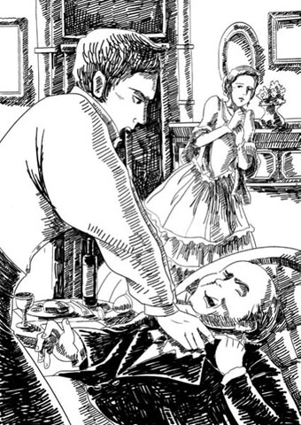
'You lie, you cowardly devil!'
'Come here,' Rawdon said. Becky came at once.
'Take off those jewels.' She took them off, still trembling.
Rawdon took the diamonds and threw them at Lord Steyne.
'Come upstairs,' Rawdon said to his wife.
'Don't kill me, Rawdon,' she said.
He laughed angrily. 'I want to see if that man lies about the money as he has about me. Has he given you any?'
'No,' said Becky, 'that is—'
'Give me your keys,' Rawdon said, and they went out together.
Becky had kept back the key to her secret little desk, but Rawdon searched long and hard, and in the end she was forced to open her desk too. It contained love letters, jewellery, and bank-notes – including a new one for a thousand pounds.
'Did he give you this?' Rawdon said.
'Yes,' Becky answered.
'I'll send it back to him today,' said Rawdon. 'And I'll pay Miss Briggs, who was kind to the boy, and some of the debts. You might have sent me a hundred pounds, Becky, out of all this. I have always shared with you.'
'I am innocent,' Becky said. And he left her without another word.
What were her thoughts when he left her? She sat for hours, with the sunlight now pouring into the room. She had heard the door bang as her husband left. She knew he would never come back. He was gone for ever. Would he kill himself? No, not until he had fought Lord Steyne. She thought of all her past life – how comfortless it seemed, how miserable, lonely, and pointless.
When Rawdon arrived at his brother's house in Great Gaunt Street, he was shown into the study to wait. As the clock struck nine, Sir Pitt came into the room, fresh and clean, a model of neatness. He stared in surprise when he saw poor Rawdon, redeyed and unshaven, with untidy hair.
'Good heavens, Rawdon!' he said. 'What are you doing here? Why aren't you at home?'
'Home!' said Rawdon, with a wild laugh. 'Pitt, I'm finished.'
'I warned you. I always said this would happen,' his brother answered. 'I can't give you any more money, Rawdon.'
'It's not money I want,' Rawdon said. 'It's the boy I'm worried about. Promise me that when I'm gone you'll take him. Your wife has always been kind to him. My marriage is over.'
'Good God! Is she dead?' Sir Pitt said, in concern.
'I wish I was,' said Rawdon. 'If there wasn't my son to worry about, I'd have killed myself this morning, and that devil too.'
Sir Pitt immediately guessed the truth, and that the 'devil' Rawdon wanted to kill was Lord Steyne. Rawdon told his brother the story, and went on, in a broken voice, 'There has to be a fight. I attacked him, so he must have his chance of revenge. And I may be killed. Will you and Jane take care of the boy, Pitt? It would comfort me to know that.'
Sir Pitt was deeply moved, and shook his brother's hand. 'Of course, Rawdon, of course. You have my word on it.'
The money for Miss Briggs was not forgotten, and Rawdon gave it to Pitt. 'Please see that she gets it,' he said. 'I've always felt ashamed of taking the poor old woman's money.'
Rawdon went next to see his friend, Captain Macmurdo, to ask him to make the arrangements for the fight. 'I'm going to kill him, Mac,' Rawdon said. 'There's only one way out of it. They had me arrested. I found them alone together. I told him he was a liar and a coward, and knocked him down and beat him.'
'Good thing too,' Macmurdo said. 'Who is it?'
Rawdon told him.
'Steyne! Good God! He's a friend of the Prince. But – she may be innocent, after all,' Macmurdo said.
'No,' said Rawdon. He took out the thousand-pound note he had found in Becky's desk. 'He gave her this, Mac, and she hid it. She had all this money in the house, and she didn't come and rescue me when I was locked up for debt. You don't know how much I loved her. I sacrificed everything for her.'
The Captain sighed, and agreed to make the arrangements.
When Becky finally shook off her mood of black despair, it was late in the morning. She rang the bell for the servants, again and again, but no one came. In the end she went downstairs and found several people in the drawing-room. The landlord, the landlord's wife, the cook, and several other servants were sitting there, complaining loudly and drinking wine.
Becky was furious. 'How dare you!' she screamed at them. 'How dare you sit on my sofas, drinking my wine!'
'Your sofa, indeed!' said the cook. 'I'm sitting on a sofa that belongs to your landlord, like everything else in this house!'
Every servant in the house knew what had happened, and that Becky was finished. They knew she had no money, and could not pay them their long-overdue wages. Some of them had already left, taking valuables with them. Becky's French maid had taken the jewellery left lying on the drawing-room floor, together with all the silver spoons and several of Becky's fine dresses.
The landlord was almost weeping. 'Where's my rent, Mrs Crawley, eh? You've ruined me! I've known the Crawley family all my life. I never thought that one of them would ruin me!'
Becky promised to pay them all the next day, and hurried out of the house. She walked quickly through the streets (she had no money to pay for a carriage) to Sir Pitt's house in Great Gaunt Street. Where was Lady Jane Crawley? It was Sunday, she was at church. And Sir Pitt? In his study. Becky slipped past the servant and was in Sir Pitt's room before her astonished brother-in-law had even laid down his newspaper.
He turned red, and moved back from her with a look of great alarm and horror.
'Don't look at me like that,' Becky said. 'I am not guilty, dear Pitt. You must believe me! You were my friend once. Oh, how could this happen just when I had such good news – just when all our problems were going to be ended.'
'Is it true, then, what I read in the paper?' said Sir Pitt. He had just read a paragraph that had surprised him greatly.
'Yes, it's true. Lord Steyne told me on Friday night that as soon as the news arrived of the death of the previous Governor, he obtained the position for my husband. Rawdon will be the new Governor of Coventry Island! But I had to wait until the announcement was official. And then Rawdon came home...'
And so she went on with her persuasive story, pouring it into the ears of her confused brother-in-law. Yes, she had money of which Rawdon knew nothing. But Pitt knew what his brother was like, knew how careless he was about money, how he would have spent it on horses and gambling...
'I did it all for my dear husband,' she cried. 'Lord Steyne liked me, yes, and I tried hard, in every honest way I could, to please him. But it was for Rawdon – and you! I wanted him to get Rawdon a good position – I wanted him to make you a lord. Oh, Pitt, dear Pitt, pity me! Bring Rawdon back to me!'
As she spoke, she threw herself down on her knees and, weeping passionately, seized Pitt's hand and kissed it.
It was at that moment that Lady Jane, returning from church, came into the room. She was pale with anger.
'How dare Mrs Crawley enter this house?' she said. 'She's a wicked woman – a heartless mother, a false wife!'
'My love!' cried Sir Pitt. 'You do Rebecca an injustice...'
'I have been a faithful and obedient wife to you, Pitt,' Lady Jane continued, 'but I will not have that woman in my house. If she enters it, I and my children will leave it. You must choose, sir, between her and me.' And with that, she walked out of the room, leaving Becky and Sir Pitt astonished by her strong words.
'It was the diamond bracelet you gave me,' Becky said sadly. And before she left him, Sir Pitt had promised to find Rawdon and do all he could to persuade him to forgive his wife.
Lord Steyne refused to challenge Colonel Crawley to a duel. He sent a friend to talk to Captain Macmurdo, and the friend explained that Lord Steyne was innocent, Mrs Crawley was innocent; that he and his wife had also been invited to Curzon Street on that fatal evening but had failed to come owing to his wife's headache; and finally, that the proof of Lord Steyne's friendship for Colonel Crawley was demonstrated beyond question by the appointment of Colonel Crawley as the new Governor of Coventry Island.
Rawdon still wanted to fight, but Captain Macmurdo said no.
'Don't be a fool, man,' he said. 'You've knocked Steyne down and beaten him already. It's my belief your wife's innocent. I think you should take the appointment and hold your tongue.'
So there was no duel between the two men. The thousand-pound note was sent back to Lord Steyne, and after long, hard persuasion from his friends, Rawdon finally agreed to accept the position of Governor of Coventry Island. The climate on the island was said to be very unhealthy – the previous Governor had died after only eighteen months there – but the salary was excellent, and Rawdon would be free of debt for the first time in many long years.
Sir Pitt tried hard to bring Rawdon and Becky together again. He pointed out to his brother all the arguments that supported Becky's story, and stated his own belief in her innocence.
But Rawdon would not hear of it. 'She's been hiding money from me for ten years,' he said. 'She swore that night that she had received no money from Steyne. She knew it was all over, as soon as I found it. If she's not guilty, Pitt, she's as bad as guilty; and I'll never see her again – never.' His head sank down on his chest as he said this, and he looked quite broken and sad.
True to his word, Rawdon left for Coventry Island without forgiving Becky, and young Rawdy went home to Sir Pitt and Lady Jane at Queen's Crawley in the school holidays, where he was very happy. His father wrote to him by every mail.
His mother never made any attempt to see him. Was she guilty or not? Everybody knows that Vanity Fair is never kind with its verdicts in these matters. Rawdon's lawyers paid her enough money to live on, and people said she had gone to Europe, but where she lived, or how she lived, no one knew – or cared.
deliver v. to take goods, letters, packages etc to a particular place or person 递送，传送
innocent adj. not guilty of a crime 无罪的，清白的
pointless adj. worthless or not likely to have any useful result 无用的，无益的
persuasive adj. able to make other people believe something or do what you ask 有说服力的
do sb an injustice to judge someone's character or abilities unfairly 冤枉某人
duel n. a fight with weapons between two people, used in the past to settle a quarrel 决斗
克劳利上校的麻烦
9
克劳利上校的麻烦
罗顿乖乖地跟逮捕他的三个人走了。他知道，只要付了钱，他第二天就能从监狱里出来。
“要多少钱？”他问那些人。
“只是一笔小钱。”第一个人回答，“一百七十英镑。内森先生的账。”
第三个人去叫了辆出租马车，载他们去监狱。罗顿并没太发愁。“钱不多。”他想，“贝姬很容易就能凑到。但是，她现在已经睡了。让她睡吧。我明早给她写信。”
周六一早，他派信差送了这封信。
亲爱的贝姬：
希望你昨晚睡得好。昨晚走回家时，我因欠内森的账被捕了，共一百七十英镑。拿我的表和其他你能拿出的东西卖了，凑上这笔钱。请快点，明天就是周日，我不想在这里再过一晚了。很高兴罗迪这个周末不回家。罗（请抓紧时间。）
他想，只要三个小时，贝姬就会带着钱来到这里，打开他牢房的门。但是白天过去了，没有信差前来，贝姬也不见踪影。直到晚上才有一封信送来。
我可怜的、最最亲爱的：
我昨晚整夜睡不着觉，担心你出了什么事。早晨我病得很严重，只得请了医生来。他给我开了帮助睡眠的药，说我绝不能受打扰。因此，你的信差等了好几个小时。你能想象得到，后来我终于看到你的信时是怎样的感受啊。我立刻准备好出门，不料斯泰恩勋爵带着他的朋友们来了（他们对昨晚赞不绝口呢！）。
我心里急切盼着他们赶紧离开。最后他们终于走了，我跪在斯泰恩勋爵面前，求他给我两百英镑。他大发雷霆，但是走的时候，答应早晨会把钱送来，那时我就可以立刻带着钱来接我可怜的囚犯了。随信附上一吻，深爱你的贝姬。（又及，我在床上写的信。唉，我的头好痛，心也好痛！）
罗顿读了信，气得满面通红，所有的疑虑又涌上心头。她都不出去卖些东西让他摆脱牢狱之灾。他身在监狱，她还能谈论那些恭维她的话。是谁害他进监狱？他简直不敢想那些疑虑。很快，他坐下来，写了一封短信给皮特爵士和克劳利女士。他哀求他们看在他孩子的份上帮帮他。
一个小时后，他被告知有访客。来人是简女士。“你的信到的时候，皮特不在家。”她说，“所以我自己来了。”
罗顿听到她亲切的声音大为感动，他跑到她面前，拥抱她，气喘吁吁地道谢。
债务很快就还清了。坐马车回家的路上，罗顿再三感谢简女士。晚上九点钟，他把简女士送到家后，一路上连走带跑，上气不接下气地跑到自己家门前。他停下脚步，抬头看着房子，浑身颤抖。客厅窗户透出明亮的灯光。她之前说她生病卧床。他站了好一会儿，房子里透出的灯光照在他苍白的脸上。
他取出家门钥匙，开门进屋，悄悄上楼。四处一片安静，仆人们都被打发走了。他听到客厅传来笑声——笑声和歌声。贝姬在唱歌。一个声音大喊：“唱得好！唱得好！”说话人是斯泰恩勋爵。
罗顿打开门，走了进去。一张小桌子上摆着两人的晚餐，还有葡萄酒。贝姬坐在沙发上，斯泰恩勋爵俯身向她靠去。她穿着她最漂亮的晚礼服，脖子上斯泰恩勋爵送给她的钻石项链闪闪发光。他拉着她的手，正要低头亲吻上去。就在这时，贝姬看见罗顿惨白的脸，发出一声微弱的惊叫，吓得跳了起来。她努力挤出笑脸，而斯泰恩勋爵站起身，铁青着脸，怒形于色。
他勉强笑了一下，走上前来，伸出手。“啊，回来了？你还好吗，克劳利？”他说。
贝姬一看罗顿的脸色，立刻冲到他面前。“我是清白的，罗顿。”她说，“我对天发誓，我是清白的！”她转向斯泰恩勋爵。“说我是清白的！”她大喊。
他觉得这是给他设的一个圈套，对妻子和对丈夫同样怒不可遏。“你——清白！去你的吧！”他大叫，“你——清白！喂，你身上的每件珠宝都是我掏的钱！我给了你几千英镑，都让你丈夫花了，这等于他把你给卖了！别以为你能吓唬住我。让我过去。”
罗顿掐住他的脖子。“你撒谎！”他大喊，“你撒谎，你这个胆小鬼！”他扇了高贵的勋爵两巴掌，不顾他受伤流血，把他推倒在地。贝姬阻止不了罗顿，站在那里浑身发抖。她崇拜她的丈夫——他强壮，勇敢，无往不胜。
“过来。”罗顿说。贝姬立刻上前。
“摘掉那些珠宝。”她一面哆嗦，一面把珠宝取下来。
罗顿拿过钻石项链，扔给斯泰恩勋爵。
“上楼。”罗顿对妻子说。
“饶我一命，罗顿。”她说。
他愤怒地冷笑。“他骂我的话全是胡说，我要看看关于钱的事他有没有撒谎。他给过你钱吗？”
“没。”贝姬说，“那是——”
“把你的钥匙给我。”罗顿说。接着他们一起离开客厅。
贝姬把她秘密小桌子的钥匙隐藏起来，但是罗顿找了很久，查得很仔细，最后她不得不把她的小桌子也打开了。里面装着情书、珠宝和钞票——其中有一张崭新的一千英镑票子。
“是他给你的吗？”罗顿说。
“是的。”贝姬回答。
“我今天就把这个还给他。”罗顿说，“我会付钱给布里格斯小姐，她对孩子很好。我还会再还一些债。贝姬，这么多钱物，你本应该给我送一百英镑的。我一直都跟你共甘苦的啊。”
“我是清白的。”贝姬说。他一言不发，转身离开了。
他离开的时候，她在想什么？她在房间里坐了几个小时，直到阳光洒了进来。她丈夫走时，她听见门砰的一响。她知道他再也不会回来了，他会在她生活里消失。他会自杀吗？不会，除非他已和斯泰恩勋爵决斗过。她想着以往的生活——似乎是那样缺乏安慰，那样痛苦孤独，那样毫无意义。
罗顿到了大冈特街的哥哥家，被领到书房等候。时钟刚敲九下，皮特爵士就走进书房。他看上去精神抖擞，装扮齐整，简直就是整洁的典范。而可怜的罗顿，眼睛红肿，胡子拉碴，头发乱作一团，爵士吃惊地盯着他。
“老天爷，罗顿！”他说，“你在这里干什么？你怎么没在家待着？”
“家！”罗顿狂笑着说，“皮特，我完了。”
“我警告过你。我总说你会落到这般田地。”他哥哥回答，“我不能再给你钱了，罗顿。”
“我要的不是钱。”罗顿说，“我担心的是孩子。答应我，我走了后你会好好照顾他。嫂子一向对他很好。我的婚姻完蛋了。”
“天哪！她死了？”皮特爵士关心地问。
“我希望是我死了。”罗顿说，“要不是担心我儿子，我今天早晨就自杀了，还要杀了那个混蛋。”
皮特爵士立刻猜到了实情，那个罗顿想杀死的“混蛋”是斯泰恩勋爵。罗顿给他哥哥讲了事情的经过，然后用哽咽的声音继续说：“一定会有一场决斗。我打了他，所以一定要给他机会报仇。我可能会被杀死。皮特，你和简愿意照顾我儿子吗？如果你答应，我就放心了。”
皮特爵士大为感动，和弟弟握了握手。“当然，罗顿，当然。我向你保证。”
给布里格斯小姐的钱也没落下，罗顿把钱交给了皮特。“请确保她收到。”他说，“我一直都很羞愧，拿了可怜老妇人的钱。”
接下来，罗顿去见他的朋友麦克默多上尉，请他安排决斗的事宜。“我要杀了他，麦克。”罗顿说，“只有一条路可走。他们害我被逮捕。我发现他们单独在一起。我对他说他是个骗子、懦夫，然后把他打倒，揍了他一顿。”
“干得好。”麦克默多说，“是谁啊？”
罗顿告诉了他。
“斯泰恩！老天！他是亲王的朋友。不过——她毕竟也有可能是清白的。”麦克默多说。
“不会。”罗顿说。他拿出在贝姬桌里找到的那张一千英镑的票子。“这是他给她的，麦克，而她藏了起来。这笔钱一直在屋里放着，我因为欠债被关起来，她都没来解救我。你不知道我有多么爱她。我为她牺牲了一切。”
上尉叹了口气，同意安排决斗的事。
贝姬终于从绝望的情绪中缓过劲来时，上午快过去了。她一遍又一遍地打铃召唤仆人，但没有人来。最后，她下楼去，发现客厅里有几个人。房东、房东的妻子、厨子，还有其他几个仆人正坐在那里，一边喝酒，一边大声抱怨。
贝姬怒火中烧。“你们好大胆！”她对他们尖叫，“你们竟敢坐我的沙发，喝我的葡萄酒！”
“你的沙发，哼！”厨子说，“我坐的沙发是你房东的，这房里所有的东西都是！”
家里的仆人都知道发生了什么事，知道贝姬完蛋了。他们知道她没钱，付不了长期拖欠他们的薪水。他们中有一些人已经拿上值钱的东西离开了。贝姬的法国女仆拿走了丢在客厅地板上的珠宝首饰，以及所有的银汤匙和贝姬的几件高级裙子。
房东就快哭出来了。“我的房租呢，克劳利夫人，呃？你害得我倾家荡产了！我从小就认识克劳利一家人，我从来没想到他们家会有人弄得我倾家荡产啊！”
贝姬许诺次日付清欠他们的钱，然后就匆匆出门了。她快步穿过街道（她没钱雇马车），前往大冈特街皮特爵士的家。简·克劳利女士在哪里？那天是星期天，她在教堂。皮特爵士呢？在书房。贝姬溜过仆人身边，闯进了皮特爵士的书房，她吃惊的大伯还没来得及把报纸放下。
他涨红了脸，往后退去，一副惊慌失措的样子。
“别那样看着我。”贝姬说，“我是无辜的，亲爱的皮特。你一定要相信我！你曾是我的朋友啊。唉，怎么能发生这种事呢，就在我刚得到好消息的时候——就在我们所有的问题都快解决的时候。”
“那么，我在报纸上看到的是真的？”皮特爵士说。他刚读到一段文章，令他大吃一惊。
“是的，是真的。斯泰恩勋爵周五晚上告诉我，前任总督的死讯一到，他就帮我丈夫拿到了这个职位。罗顿就要当考文垂岛的新任总督了！但是我得等到官方通知下来。然后罗顿就回到家……”
她继续说着合情合理的故事，一股脑儿灌进她大伯的耳朵里，弄得他迷迷瞪瞪的。没错，她是有些罗顿不知道的钱，但皮特知道他弟弟是什么样的人，对钱是多么不放在心上，有钱就会拿去赌马或赌博……
“我做这一切都是为了亲爱的丈夫。”她哭着说，“斯泰恩勋爵喜欢我，没错，而我也想尽办法讨好他，良家妇女能做的我都做了。但那是为了罗顿，也为了你啊！我想让他给罗顿谋个好职位，我想让他把你弄成勋爵。啊，皮特，亲爱的皮特，可怜可怜我吧！把罗顿带回我身边吧！”
说到这里，她跪在地上放声痛哭，一把抓住皮特的手亲吻。
就在这时，从教堂回来的简女士走进房间。她气得面色苍白。
“克劳利夫人怎么敢进这个家？”她说，“她是个邪恶的女人，没心肝的母亲，不忠诚的妻子！”
“亲爱的！”皮特爵士大叫，“你冤枉丽贝卡了……”
“我一直是个忠顺的妻子，皮特。”简女士继续说，“但是我的家里容不下那个女人。她要在这里，我就和孩子们离开。先生，你必须在我和她之间作出选择。”说完，她走出了房间，贝姬和皮特爵士听了她激烈的言辞，目瞪口呆。
“那是因为你把钻石手镯送给我的缘故。”贝姬伤心地说。在她离开之前，皮特爵士答应找到罗顿，竭尽所能说服他原谅妻子。
斯泰恩勋爵拒绝和克劳利上校决斗。他派了一个朋友和麦克默多上尉谈。这个朋友解释说，斯泰恩勋爵是清白的，克劳利夫人也是清白的。那个不幸的晚上，他和他妻子也受邀去柯曾大街作客，但是因为妻子头痛而没有赴约。最后，斯泰恩勋爵对克劳利上校的友情也得到了证明，是毋庸置疑的：克劳利上校被任命为考文垂岛的新总督。
罗顿还想打一场，但是麦克默多上尉不同意。
“别傻了，老兄。”他说，“你已经把斯泰恩打倒，揍过他了。我相信你妻子是清白的。我觉得你应该接受任命，不再提这件事了。”
因此，两位男士没有决斗，一千英镑的票子也还给了斯泰恩勋爵。经过朋友们苦口婆心的一番劝说，罗顿终于同意接受考文垂岛总督一职。据说，岛上气候对健康十分不利，前任总督在那里才待了十八个月就死了。但是薪俸极高，罗顿这么多年来负债累累的日子就快结束了。
皮特爵士费尽心思想让罗顿和贝姬重归于好。他向弟弟指出诸多支撑贝姬说法的证据，声明他本人相信她的清白。
但是罗顿听不进去。“她瞒着我藏了十年钱。”他说，“她那晚发誓，她没有从斯泰恩那里收过钱。我一找到，她就知道一切都完了。皮特，即使她无罪，她的罪名也不能因此减轻。我决不再见她，决不。”他说话时，脑袋耷拉着，看上去悲痛欲绝。
罗顿没有食言，他没有原谅贝姬，就启程去考文垂岛了。学校放假时，小罗迪去皮特爵士和简女士在昆士克劳利的家，他在那里十分快乐。每班邮船上都会有他父亲给他写的信。
他母亲没有想办法和他见面。她是不是有罪呢？大家都知道，名利场在这些事的裁定上从不仁慈大度。罗顿的律师给了她足够生活的钱。有人说她去了欧洲，但是她住在哪里，过得如何，却无人知晓，也无人关心。
10 Major Dobbin returns from India
10
Major Dobbin returns from India
Georgy Osborne enjoyed his new life at his grandfather's house in Russell Square. His good looks and bright, cheerful nature pleased the old man very much, and Mr Osborne was soon as proud of his grandson as he had been of his son.
The boy had many more luxuries and comforts than had been given to his father. Mr Osborne's wealth had increased greatly in recent years, and he had ambitious plans for his grandson, who was sent to an expensive little school, and who wore the finest clothes any young gentleman was ever seen in – even his shirts had little jewelled buttons. The neat, plain shirts that his mother had sewn for him with such loving care were never worn – Miss Osborne gave them to the coachman's boy.
In Russell Square everybody was afraid of Mr Osborne, and Mr Osborne was afraid of Georgy, who ruled his new home like a king. He was clever and better educated than his grandfather, and had little respect for the old man, whose manners were rude and rough. Mr Osborne spoiled Georgy, admired him, and laughed with delight at his commanding ways.
'Did you ever see a boy like him?' he would often say. 'Drinks his wine at dinner like a lord! Oh, he's a fine little gentleman!'
After breakfast, Georgy would sit in the armchair reading the newspaper, just like a grown-up man. He even had his personal servant, who would bring him his letters on a silver tray.
But despite all this, Georgy was still a good-natured boy, and still fond of his mother. On one of his regular visits he eagerly pulled a red leather case out of his pocket and gave it to her.
'I bought it with my own money, mama,' he said. 'I thought you'd like it.'
Amelia opened the case, and giving a cry of delight, seized the boy and covered him with kisses. It was a miniature painting of Georgy. His grandfather had had a painting of the boy done by a famous artist, and Georgy asked the artist to make a little copy of the painting. It made Amelia so happy, this little picture. She wept and laughed over it, slept with it under her pillow, and kissed it a hundred times a day.
There was little else in her life to give her much joy. Not long after Georgy went to live with Mr Osborne, Mrs Sedley fell ill. She was a difficult patient, but Amelia was always at her bedside, always ready with a gentle answer to that complaining voice, always offering a daughter's loving kindness in exchange for the hard words she received.
When they had buried the old lady, Amelia's father became totally dependent on his daughter. He was a sad old man, with a shaky memory, his mind often wandering in the past, but Amelia did everything she could to make her old father happy. And so the days went by, with Georgy's visits the only bright points in Amelia's dull, dutiful life.
Major Dobbin had easily obtained permission from his good-natured commander to return to England. He travelled night and day across country to the port, where he was struck down by a fever that nearly killed him. He lay at the edge of death for a long time, and it was many, many weeks before he was able to take the ship for home. He was as thin as a stick and as weak as a baby, but the long sea journey gave him back his health and strength.
The journey also gave him a most unexpected companion – no other than Joseph Sedley, the brother of the woman whose name Dobbin had murmured so often during his long illness.
Our old friend Jos, after ten years with the East India Company, was sailing home, richer, but otherwise unchanged. Many a night, as the ship was cutting through the roaring dark sea, the moon and stars shining overhead, Jos and the Major would sit talking of home. And with great skill and cunning the Major always brought the talk round to the subject of Amelia.
'I hope,' he said once, 'she will be happy in her new marriage.'
'Marriage?' said Jos. 'Her last letter to me said nothing about marriage. She wrote to say that you were going to be married, and she hoped that you would be happy.'
It was wonderful to see after this, how bright and cheerful the Major became, and how quickly he recovered his strength.
They landed in England at Southampton, late at night, but very early the next morning Dobbin banged at Jos's door.
'Sedley,' he called. 'Time to go. The carriage is ready.'
A bad-tempered growl greeted him, and Mr Sedley informed the Major that the Major could go to the devil or wherever he pleased, but that he, Jos, would finish his sleep in peace.
So Dobbin travelled to London alone, and made his way to the Sedleys' house. At the door he began to tremble. 'Suppose she is married, after all,' he thought. 'Suppose she's moved.'
A girl of about sixteen opened the door.
Dobbin was as pale as a ghost. 'Does Mrs Osborne live here?'
The girl stared at him, and then her face went white. 'Oh! Oh!' she cried. 'It's Major Dobbin! Do you remember me? I'm Mary – the landlord's daughter. I was only little when you went away.'
Yes, of course the Major remembered Mary Clapp, who used to play with Georgy as a baby. And Mrs Osborne...? She was walking in the park, he was told, with her poor old father. The Major would like to see her – would Mary show him the way?
'I'll get my hat at once,' said Mary, delighted.
Mary took Dobbin's arm, and as they walked, she answered all the Major's many questions about Mrs Osborne. Yes, she was very unhappy about parting with her son. No, she never had any gentlemen visitors. And Mary heard the Major's sigh of relief when she said this, and she felt the Major's arm jump under her hand as he caught sight of Amelia in the park. Oh yes, Mary Clapp knew all there was to know about the Major's heart.
She ran ahead to find Amelia.
'News, news!' she cried. 'He's come, he's come!'
'Who's come?' Amelia called, jumping up in alarm.
Then she saw Dobbin's tall figure approaching; she turned white, then red, and began – naturally – to cry. She ran towards him, holding out her hands, smiling through her tears.
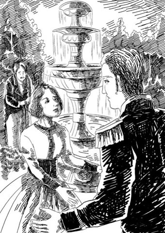
She ran towards him, holding out her hands, smiling through her tears.
Dobbin looked at her lovingly. She had not changed. The same kind eyes, and soft brown hair. She looked up at his plain, honest face, and he took her two little hands between his, and held them there. Why did he not take her in his arms, and swear that he would never leave her? She would have accepted, surely.
After a pause he said, 'Someone else has come with me.'
'Mrs Dobbin?' she said, moving back. Why didn't he speak?
'No,' he said, letting her hands go. 'Who has told you those lies? I mean, your brother Jos. He came in the same ship with me, and has come home to make you all happy.'
'Papa!' Amelia cried. 'Jos is home! And here's Major Dobbin!'
Mr Sedley was confused and worried by all this excitement, but he recognized Dobbin and was pleased to see him. They all returned to the house, and Dobbin stayed for hours, drinking endless cups of tea, and watching that dear, remembered face.
Amelia talked only of Georgy, what a wonderful, intelligent, handsome, delightful boy he was. Such a joy and comfort to his mother – and so like his dear father who was gone.
Dobbin watched as Amelia put her handkerchief to her eyes. 'Should I be angry with her,' he thought, 'for being so faithful to George? Can that heart love only once and for ever?'
When Joseph Sedley arrived the next day, he was shocked to see how sorrow and misfortune had changed his father. The old man wept as he told his son about his wife's death, and the hard times they had all lived through. And in the emotion of that first meeting, Jos swore that he would take care of them from now on; that his house and everything he had would be theirs; and that Amelia would look very pretty at the head of his dinner table – until, of course, she accepted one of her own.
Amelia shook her head sadly and, as usual, began to cry. She knew what he meant. She and her young friend Mary Clapp had talked over the subject very fully after the Major's visit.
'Didn't you see,' Mary said, 'how he shook all over when you asked if he was married, and he said, "Who told you those lies?" Oh, Mrs O., he never took his eyes off you for a second! I'm sure he's gone grey-haired with thinking about you all these years.'
'Mary, you mustn't say such things. I love him as a brother, but a woman who has been married to him'– Amelia pointed to George's picture on the wall above her bed– 'can never think of another marriage.'
Poor Mary sighed, and felt rather sorry for Major Dobbin.
It had been Dobbin on the long voyage home who had made Jos promise to take care of his family, and this time Jos kept his promise. One day his carriage came to the house and carried his father and sister away to live in comfort once more.
Dobbin was there to meet them when they arrived with their possessions, which included the old piano, rescued long ago by Dobbin himself from the sale at the Sedleys' former house.
Dobbin was very pleased to see the piano. 'I'm glad you've kept it,' he said. 'I didn't think you cared about it.'
'Of course I do,' Amelia replied. 'He gave it to me.'
'Oh, I didn't know,' said poor Dobbin, looking very sad.
Later, thinking about Dobbin's sad face, Amelia realized that it must have been Dobbin who gave her the piano, not George. She had loved it all these years because it was George's gift. But it was not George's gift after all. So now it meant nothing to her. But she was sorry if she had hurt Dobbin's feelings.
'I have to beg your pardon for something,' she said to him a few days later. 'I never thanked you for the piano when you gave it to me. I thought that it came from someone else. Thank you, William.' She held out her hand, and her eyes filled with tears.
Dobbin could bear no more.
'Amelia, Amelia!' he cried, 'I have loved you since the day I first saw you. For twelve years you have never been out of my thoughts. I came to tell you I loved you before I went to India, but you didn't care whether I stayed or went, so I didn't speak.'
'I was very ungrateful,' said Amelia.
'No, you didn't care. I understand how you feel about the piano. You're sorry that it came from me, and not from George. I'm a fool for thinking that years of love could matter to you.'
'Now you are being cruel,' Amelia said. 'George is my husband still. How could I love another? I loved you like a brother, and a dear, true, kind friend. I thought you might have saved me from that dreadful parting from my son – which nearly killed me. You didn't come, but you are still my friend, his friend and mine.' Her voice broke and she hid her face on his shoulder.
The Major held her gently, kissing her head as if she was a child. 'I will not change, dear Amelia,' he said. 'I ask for no more than your love. Only let me stay near you and see you often.'
'Yes, often,' Amelia said.
And that was all Dobbin had – permission to be near her and to see her, and nothing more.
Life was now much more comfortable for Amelia, but there were more changes ahead. In the winter Mr Sedley died, cared for devotedly by Amelia in his last illness, and less than a year later, Mr Osborne was found dead in his bedroom one morning.
The old man had softened in his last year and, under Dobbin's influence, his anger and hate had faded away. He had left half his fortune to Georgy, and half to his two daughters. But there was also a pension of five hundred pounds a year for Amelia. And he wished his grandson to return to the care of his mother, the widow of his much loved son.
Amelia was overjoyed, and when she learnt it was Dobbin who had caused the change of heart in the old man, she was deeply grateful to him – deeply grateful, but no more. If she thought of anything else, a picture of George rose before her eyes and said, 'You are mine, and mine only, now and for ever.'
luxury n. something expensive that you do not need, but you buy for pleasure and enjoyment 奢侈品
difficult adj. someone who is difficult never seems pleased or satisfied 难以取悦的，不易相处的
shaky adj. not sure about the exact details of something 没把握的，不可靠的
go to the devil used to tell someone to go away or stop annoying you 滚开，别烦我
overjoyed adj. extremely pleased or happy 极为高兴的，十分开心的
多宾少校印度归来
10
多宾少校印度归来
乔基·奥斯本喜欢在拉塞尔广场祖父家的新生活。他相貌英俊，性格开朗活泼，让老人十分高兴。很快，奥斯本先生就以孙子为荣，正如他当年以儿子为荣一样。
男孩获得的奢侈享受比他父亲当年有过之而无不及。近几年，奥斯本先生的财富大大增加，他给孙子作了雄心勃勃的安排，送他去上学费昂贵的小学校，让他穿小绅士能穿上的最好的衣服，连他的衬衫都有小颗的宝石纽扣。他母亲满怀爱心为他缝制的干净朴素的衬衫，他从来没穿过——奥斯本小姐把它们送给了车夫的儿子。
在拉塞尔广场，大家都害怕奥斯本先生，而奥斯本先生害怕乔基，乔基像国王一样统治着这个新家。他很聪明，比他祖父受的教育多，对这个粗俗的老人不怎么尊重。奥斯本先生溺爱乔基，夸奖他，乔基的颐指气使总逗得他哈哈大笑。
“见过像他这样的男孩吗？”他常说，“晚餐喝酒像个勋爵一样！啊，他是个高贵的小绅士了！”
吃完早餐，乔基会像个大人一样，坐在扶手椅里读报。他甚至有自己的贴身仆人，仆人会用银托盘呈上他的信。
尽管如此，乔基仍然是个品性善良的男孩，仍然爱着自己的母亲。一次例行拜访中，他急切地从口袋里掏出一个红色皮匣，送给他妈妈。
“我用自己的钱买的，妈妈。”他说，“我想你会喜欢。”
阿梅莉亚打开匣子，发出一声欢呼，她一把拉过孩子，吻个不停。那是一张乔基的小像。孩子的祖父请一位名画家画孩子的肖像，乔基让画家再复制一张小版的。这张小画像太让阿梅莉亚开心了。她对着它又哭又笑，睡觉时放在枕头底下，一天要吻上一百遍。
她的生活中没有什么其他事让她高兴了。乔基去和奥斯本先生住之后不久，塞德利夫人病了。她是个难以伺候的病人，但阿梅莉亚总是守在她的床边，无论她怎么抱怨，阿梅莉亚都温柔回应；无论听到什么难听的话，阿梅莉亚都用女儿的爱心关怀去对待。
他们安葬这位老妇人之后，阿梅莉亚的父亲变得完全依靠女儿了。他是个悲伤的老人，记性差多了，脑子里常常都是过去的事，阿梅莉亚尽她所能让老父亲开心。日子一天天过去，只有乔基的拜访能给她恪尽孝道的单调生活增添一抹亮色。
多宾少校轻而易举地获得了他好心肠的长官的许可，返回英格兰。他一路日夜兼程赶往港口，不料在那里发起高烧，差点要了他的命。他在鬼门关徘徊了很久，又过了很长很长时间之后才能坐船回国。他瘦得像根竹竿，弱得像个婴儿，但是漫长的海上旅行让他逐渐恢复了健康和体力。
他的海上旅行还有一个意想不到的同伴——不是别人，正是约瑟夫·塞德利，多宾长期卧病时口中念念不忘的那个女子的哥哥。
我们的老朋友乔斯，为东印度公司工作了十年后，搭船回国了。他除了更富有以外，没什么其他变化。无数个夜晚，当船在漆黑的海面上劈波斩浪时，乔斯和少校会坐在星月皎洁的夜空下，谈起家乡。少校总是巧妙圆滑地把话题转到阿梅莉亚身上。
“我希望，”有一次他说，“她新婚幸福。”
“结婚？”乔斯说，“她给我的上封信里可没提到结婚的事。她写信告诉我，你快结婚了，她希望你幸福。”
在这之后，少校令人惊奇地开朗起来，他精神焕发，体力也很快恢复了。
他们深夜在英格兰南安普敦上了岸，但是第二天一大清早，多宾就来敲乔斯的门。
“塞德利。”他大喊，“该动身了。马车备好了。”
回应他的是一声愤怒的咆哮。塞德利先生让少校滚蛋，爱去哪儿去哪儿，但他乔斯要安安生生地睡觉。
因此，多宾独自一人上路前往伦敦，去塞德利家。到了门口，他开始发抖。他想：“没准儿她还是结婚了。没准儿她已经搬走了。”
一个十六岁上下的姑娘开了门。
多宾面色苍白如纸。“奥斯本夫人住在这里吗？”
那姑娘打量着他，随后脸色也开始发白。“哦！哦！”她大叫，“是多宾少校！您记得我吗？我是玛丽——房东的女儿。您走的时候，我还是小孩子呢。”
是的，少校当然记得玛丽·克拉普，她曾和当时还是婴儿的乔基一起玩。那奥斯本夫人……？玛丽告诉他，她和可怜的老父亲一起在公园散步。少校想见见她——玛丽愿意带路吗？
“我这就去拿帽子。”玛丽高兴地说。
玛丽挽着多宾的手臂，一路走，一路回答少校关于奥斯本夫人的各种问题。是的，和儿子分离她非常伤心。不，没有任何先生来拜访过她。说到这儿，玛丽听到少校宽慰地松了口气。少校在公园里看到阿梅莉亚时，玛丽感觉到她挽着的手臂抖了一下。哦，是的，少校的心思玛丽·克拉普全明白了。
她跑上前去找阿梅莉亚。
“新闻，新闻！”她大喊，“他来了，他来了！”
“谁来了？”阿梅莉亚吓了一跳，问道。
接着，她看见多宾瘦高的身影越走越近。她面色发白，继而转红，然后开始——自然而然地——哭了起来。她伸出双手，脸上挂着泪，微笑着奔向他。
多宾充满爱意地看着她。她没有变。同样的善良眼神，同样的柔软棕发。她仰头看着他真诚正直的脸。他把她两只小手握在手心不放。他为什么没有拥她入怀？没有发誓再也不离开她？她一定会接受的。
他顿了顿，又接着说：“有人和我一起回来。”
“多宾夫人吗？”她说，向后退开。他为什么不早说？
“不。”他说，放开了她的手。“谁告诉你这些瞎话的？我说的是你哥哥乔斯。他和我搭同一艘船来的。他回来了，让你们都高兴高兴。”
“爸爸！”阿梅莉亚大喊，“乔斯回家了！多宾少校来了！”
塞德利先生对这阵骚动感到莫明其妙，有些担心。但他认出了多宾，很高兴见到他。他们一起回家，多宾在那里待了好几个小时，喝了无数杯茶，望着那张朝思暮想的可爱脸庞。
阿梅莉亚满口谈论的都是乔基：乔基是多么聪明、英俊、讨人喜欢的好男孩。他带给他母亲多少欢乐和慰藉——而且长得多像他去世的父亲。
阿梅莉亚拿起手帕擦眼泪，多宾望着她。“我应该生她的气吗？”他想，“她对乔治这样忠贞？那颗心一生只能爱一次吗？”
次日，约瑟夫·塞德利也回到了家。看到悲痛和不幸极大地改变了父亲，他十分震惊。老人哭泣着告诉儿子老伴的离世，以及他们如何熬过那段艰难的时光。在这次初聚的强烈感情推动下，乔斯发誓要从此照顾他们，他的房子和一切东西也都是他们的，阿梅莉亚作为女主人坐在餐桌桌首一定会很漂亮。当然，在她想自立门户时再另说。
阿梅莉亚悲伤地摇摇头，像平时一样，眼泪开始往下掉。她明白他的意思。少校来访后，她和她的年轻朋友玛丽·克拉普充分地讨论过这个话题。
“你没看见吗？”玛丽说，“你问他是不是结婚了的时候，他浑身颤抖得厉害。他说，‘谁告诉你这些瞎话的？’哎呀，奥斯本夫人，他的目光不曾从你身上移开过！我肯定，他头发变灰白，都是这些年想你想的。”
“玛丽，你不要说这种话。我像爱兄长那样爱他，但是一个女人嫁给了他”——说着，阿梅莉亚指着她床头上方挂着的乔治画像——“就再也不会考虑再婚。”
可怜的玛丽叹了口气，替多宾少校感到很遗憾。
是多宾在漫长的归家旅途中劝说乔斯答应照顾家人。而这一回，乔斯遵守了诺言。一天，他的马车来接他的父亲和妹妹离开，让他们再次过上舒适的生活。
他们带着行李抵达的时候，多宾在那里迎接。行李中那架旧钢琴，是多宾很久以前在塞德利家旧居拍卖时买回的。
多宾看到钢琴很高兴。“我很高兴你还留着它。”他说，“我以为你不会在乎。”
“我当然在乎。”阿梅莉亚回答，“他给我的。”
“噢，我不知道。”可怜的多宾说，看上去难过极了。
后来，想起多宾难过的表情，阿梅莉亚意识到，钢琴一定是多宾送给她的，而不是乔治。她爱这架钢琴这么多年，是因为它是乔治的礼物。但事实却非如此，所以现在钢琴对她毫无意义了。不过，伤了多宾的感情，她感到于心有愧。
“我要请求你的原谅。”几天后她对他说，“你送给我钢琴的时候，我从未道谢。我以为那是别人送的。谢谢你，威廉。”她伸出手，眼里满是泪水。
多宾再也忍受不下去了。
“阿梅莉亚，阿梅莉亚！”他大叫，“从第一天见到你时，我就爱上你了。十二年了，你一直在我的心里。去印度之前，我来是想说我爱你，但你丝毫不关心我是走是留，所以我没说。”
“我太不知道感恩了。”阿梅莉亚说。
“不，你是无所谓。我知道你是怎么想这架钢琴的。你觉得遗憾的是，它是我送的，不是乔治送的。我真傻，竟然以为多年的爱能感化你。”
“你这么说可太残忍了。”阿梅莉亚说，“乔治仍是我的丈夫。我怎么能爱上别人呢？我爱你如兄长，如一位亲爱的、忠诚的、好心的朋友。我以为你能让我免受与儿子离别之苦，那时我差点活不下去。你没有来，但你仍然是我的朋友，他和我的朋友。”她哽咽起来，把脸埋在他的肩头。
少校轻轻地搂着她，像对待孩子一样亲了亲她的头。“我的心意不会改变，亲爱的阿梅莉亚。”他说，“除了你的爱我别无所求。就让我待在你的身边，经常见见你吧。”
“好的，经常。”阿梅莉亚说。
多宾获得的就是这些——被允许待在她近旁，能见她，仅此而已。
阿梅莉亚现在的生活舒适多了，但是后来发生了更多变故。冬天的时候塞德利先生去世了。他患病临终前，阿梅莉亚尽心尽力照顾他。不到一年后的一天早晨，奥斯本先生也死在了他的卧室里。
在生命的最后一年里，老奥斯本的态度软化了，而且在多宾的影响下，他的愤怒与仇恨也逐渐淡去。他把一半财产留给乔基，一半留给他的两个女儿。而且还给阿梅莉亚留了每年五百英镑的年金。他希望孙子重新由母亲——他爱子的遗孀照看。
阿梅莉亚喜不自胜。当她听说是多宾劝服老人改变了心意，她对他充满感激之情。但除此之外，再无其他。如果她有其他想法，乔治的头像就会浮现在她面前说：“你属于我，只属于我，从现在直到永远。”
11 A meeting with an old friend
11
A meeting with an old friend
Fortune now began to smile on Amelia. It was amazing how differently people behaved towards her as soon as they heard that Mr Osborne had left money to her. She found that everyone treated her with respect, that the servants were more attentive to her instructions, and that she suddenly had a wide circle of affectionate friends. Even Jos, who used to treat her as a harmless poor relation whom it was his duty to look after, became quite respectful and anxious to please her.
Major Dobbin, who was now Georgy's guardian, often took the boy out, and the two became firm friends. Georgy admired and respected the Major and, anxious to win his approval, became less boastful and selfish in his own behaviour.
'I like him because he knows so much,' he said to his mother, 'and he never boasts about all the things he's done.'
When summer came, Joseph Sedley decided that a trip to Europe would be an agreeable way of passing the time, and his sister and nephew were delighted with the plan. So they took the boat from London to Germany, accompanied of course by Major Dobbin, as a close family friend.
For weeks they travelled through the towns along the banks of the river Rhine, visiting the sights, and enjoying themselves in their different ways. After a large lunch, Jos usually read the newspapers (or fell asleep over them), while the others went on excursions. Amelia was fond of drawing, and sat in the sunshine, drawing castles and churches. Sometimes they climbed up to a ruined tower on a hill-top, where Georgy ran about exploring, and Amelia drew the view. Dobbin carried her little chair and her sketch-book, and admired the drawings as they had never been admired before. Perhaps it was the happiest time of both their lives, if they had only known it. But who does?
When they came to the little town of Pumpernickel, Jos liked it so much that he decided to stay there for the winter. They rented a pleasant house, and were welcomed into local society, receiving invitations to parties, dinners and balls.
On one occasion the wedding of a local German prince took place. The town was full of visitors for the celebrations, and everybody was invited to a grand ball. Jos and his party went, including young Georgy, who watched the dancing for a while, but then got bored, and wandered away through the other rooms in search of better entertainment.
He found himself in the gambling rooms, with the card tables and the roulette wheel, a place where his guardian the Major would never normally let him enter. But Georgy was fascinated, and stood close to the roulette table, watching the gamblers as they played, and won... and lost... and lost again.
One of them, a lady with light hair, in a low-necked dress and wearing a black mask, kept on losing. She looked around, saw Georgy watching, and stared at him.
'You never play, sir?' she said in a French accent.
'No, madame,' the boy replied.
'Will you do something for me, then?' she said.
'What is it?' said Georgy, blushing a little.
'Play this for me, please. Put it on any number you like.'
She took a gold coin from her purse, the only coin there, and gave it to him. The boy laughed, and did as she asked.
And his number won. It always does, they say, for beginners.
'Thank you,' the lady said, pulling a pile of money towards her. 'Thank you. What is your name?'
'My name's George Osborne,' said the boy.
At this moment the Major and Jos appeared, looking for him. Dobbin took Georgy's arm and quickly led him away. He looked back over his shoulder at Jos, who was watching with interest as the masked lady won on the next spin of the roulette wheel.
'Are you coming with us?' Dobbin asked him.
'You go on,' Jos replied. 'I'll follow in a while.'
Outside the room Dobbin said to Georgy, 'Did you play?'
The boy said, 'No.'
'Give me your promise that you never will,' said Dobbin.
'Why?' Georgy said. 'It seems very good fun.'
In a serious voice Dobbin explained why Georgy should never gamble. He did not mention, of course, how Georgy's own father had demonstrated the foolishness of gambling.
Jos remained behind. He was no gambler, but he liked a little excitement now and then, and he had some coins in his pocket. He put one down over the fair shoulder of the masked lady, and they won. She gently tapped the empty chair next to her.
'Come and give me good luck,' she said.
Jos sat down, murmuring confused compliments.
'I play to forget, but I cannot,' said the mask. 'I cannot forget old times, sir. Your little nephew is so like his father. And you – you have not changed – but yes, you have. Everybody changes, everybody forgets; nobody has any heart.'
'Good God, who is it?' cried Jos, alarmed.
'Can't you guess, Joseph Sedley?' said the little woman, taking off her mask and looking at him. 'You have forgotten me.'
'Good heavens! Mrs Crawley!' gasped Jos.
'Rebecca,' she said, putting her hand on his. 'I'm staying at the Elephant hotel. Ask for Madame de Raudon. I saw my dear Amelia today. How pretty she looked, and how happy! So do you! Everybody is happy, except me. I am so miserable, Joseph Sedley.'
She played another coin on the black. Her eyes followed the wheel as it spun, but the red won, and she lost her money.
'Come with me for a little while,' she said to Jos. 'We are old friends, aren't we, dear Mr Sedley?'
What had happened to Mrs Rebecca Crawley in the two years since that dreadful night in Curzon Street? She went first to Boulogne on the French coast, where she led a quiet, respectable life for a while. But of the many English travellers passing through, there were always some who knew her story. And then the gossip began; society ladies would ignore her, and the men would laugh at her, or be too familiar, even insulting. One young man, who in London used to walk a mile through the rain to find her carriage for her, tried to force his way into her sitting-room, and she had to shut the door in his face.
It made her feel very lonely. 'If he had been here,' she thought, 'those cowards would never dare to insult me.' She thought about 'him' with great sadness – his honest, stupid kindness, his good humour, his faithfulness and obedience, his bravery. And perhaps she cried a little too.
She moved on to Ostend, Florence, Rome... Through his lawyers, Rawdon was paying her three hundred pounds a year, on the condition that she never troubled him again. But when she got her money, she gambled; when she had gambled it, she had to live as best she could. Some said she gave singing lessons, and sang in theatres. Certainly, the Elephant hotel in Pumpernickel, where Joseph Sedley visited her the next day, was full of actors and entertainers and noisy young students. Becky liked the life. She was, after all, the daughter of an artist and a dancer, and was happy to drink brandy-and-water and share a joke with anyone.
Meeting Joseph Sedley again, though, offered Becky a chance, which she seized with both hands. She had charmed him before; she could charm him again. When he arrived, she welcomed him into her little room with tearful delight, and he listened in shock and horror to the terrible story that Becky poured into his ears – the ill-treatment and injustice and cruelty that she had suffered.
He hurried back home to tell Amelia all about it. 'She's so miserable, Emmy,' he said. 'She hasn't a friend in the world.'
'That woman brings trouble wherever she goes,' Dobbin said.
None of them had heard the gossip about Becky because they had no connections with London high society, but Dobbin remembered certain events in Brussels long ago. Amelia, too, remembered the fear and jealousy that her friend had caused her. A soft, gentle heart, however, is soon moved to sympathy.
'Mrs Crawley has a son, the same age as Georgy,' Jos went on. 'He adores his mother. And they tore him screaming out of her arms, and have never allowed him to see her since.'
Amelia jumped to her feet. 'Dear Jos,' she said. 'The poor, poor woman. William, let's go and see her at once.'
It was lucky that Becky saw them coming from her window, and so was able to hide the brandy bottle under the bed and send away the two young students she had been laughing with.
When Amelia saw Becky, she forgave her at once, and ran forward to kiss her. Becky was truly grateful to her for her kind, generous heart, and although the emotion did not last long, it was real while it lasted. The two women talked in Becky's room for two hours, while Dobbin sat in the hall below, watching the comings and goings in the hotel. He was not impressed by Mrs Crawley, nor deceived by her, and when they returned to the house and Amelia began to make arrangements for a room for Becky, he became very alarmed.
'You're going to have that woman in the house?' he said.
'Of course we are,' said Amelia. 'The poor woman has suffered so much. Of course we are going to have her here.'
'Of course, my dear,' Jos said.
'Her husband deserted her and took her child away from her!' Amelia said. 'I must help her – she's my oldest friend.'
'She was not always your friend, Amelia,' said Dobbin, who was now quite angry.
'Shame on you, Major Dobbin!' Amelia said fiercely.
She went to her room and shut the door. How dare Dobbin insult George's memory? 'You were pure,' she said to the picture above her bed, 'and I was wrong and wicked to be jealous.'
Poor Dobbin! He had just ruined the work of many years. He tried hard to persuade Jos not to receive Mrs Crawley into his home, but they were interrupted by the arrival of the lady herself, with her luggage. She greeted them with great respect, especially Major Dobbin, since she saw at once that he was her enemy. Amelia appeared from her room to welcome Becky and took no notice of the Major, except to give him an angry look.
There were four places as usual at the dinner table that evening, but the fourth place was taken by Rebecca.
'Hello, where's Dob?' Georgy asked when he came in.
'He's eating out, I suppose,' his mother said, pulling her son close to her and kissing him. 'This is my boy, Rebecca,' she said.
Becky looked at Georgy admiringly, and took his hand fondly. 'Dear boy!' she said. 'He is just like my...' Emotion prevented her from saying more, but Amelia understood that she was thinking of her own dear child. In spite of all this emotion, however, Becky managed to eat a very good dinner.
Dobbin, angry and hurt at the way Amelia had treated him, went to see an Englishman he knew and asked if the name of Mrs Rawdon Crawley meant anything to him. He was in luck. The man knew all the London gossip, and told the astonished Major the full history of Becky, her husband, and Lord Steyne.
The next morning Dobbin asked to see Amelia, but she would not see him until the afternoon. She greeted him coldly. Becky was also there, and came forward smiling, holding out her hand. Dobbin stepped back from her.
'I am sorry, Mrs Crawley,' he said, 'but I must tell you that I have not come here as your friend.'
'I wonder what Major Dobbin has to say against Rebecca,' said Amelia in a low, clear voice, with a determined look in her eyes.
'Oh, don't let's have any of this,' said Jos, alarmed at the signs of a quarrel. 'I will not have this sort of thing in my house.'
'Dear friend,' Rebecca said sweetly, 'please hear what Major Dobbin has to say against me.'
'I will not hear it, I say,' Jos said, and he left the room.
'We are only two women,' Amelia said. 'You can speak now.'
'There is no need to behave in this way, Amelia,' said Dobbin. 'I do not usually speak critically of women. It is not a pleasure for me to do what I have to do.'
'Then please do it quickly,' said Amelia impatiently.
'I came to say, Mrs Crawley, I have heard things about you that I do not wish to repeat in front of Mrs Osborne. A woman who is separated from her husband, who travels under a false name, who gambles – is not a suitable companion for Mrs Osborne and her son.'
'Of what exactly are you accusing me, Major Dobbin?' Becky said. 'Unfaithfulness to my husband? I deny it, and no one can prove it because I am innocent. Are you accusing me of being poor, alone, and unhappy? Yes, I am guilty of those faults, and I am punished for them every day. Let me go, Emmy. I shall continue to wander through life alone, being insulted because I am alone. Let me go. The poor wanderer will be on her way. My stay here spoils this gentleman's plans.'
'Indeed it does, and if I have any power in this house...'
'Power, none!' cried Amelia. 'Rebecca, you stay with me. I won't desert you because you have suffered. Come away, dear.'
And the two ladies went to the door. Dobbin opened it, but as they were going out, he took Amelia's hand and said, 'Amelia, will you stay a moment and speak to me?'
'He wishes to speak with you when I'm not there,' said Becky unhappily. Amelia held her hand tightly.
'Believe me, it's not about you that I'm going to speak,' Dobbin said. 'Come back, Amelia,' and she came. Dobbin closed the door behind Mrs Crawley. Amelia looked up at him. Her face and her lips were quite white.
'I was confused when I spoke just now,' the Major said, 'and I misused the word "power". I was wrong. But your husband asked me to look after you. That's why I have spoken as I have.'
'Yesterday you insulted his memory. And I will never forgive you – never!' Amelia said, filled with anger and emotion.
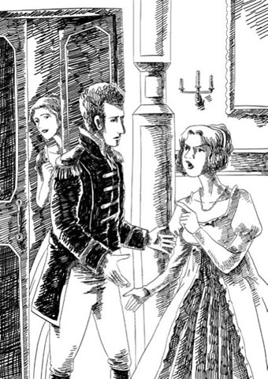
'I will never forgive you – never!'
'You don't mean that, Amelia,' Dobbin said sadly. 'You don't mean that those few words have more weight than a life-time's devoted love? I have never insulted George, and I don't deserve this from his widow and the mother of his son. I'm sure if you think about it, you will want to take back your accusation.'
Amelia held her head down.
'I have loved and watched you for fifteen years,' he continued, 'and I know now that you can only love a dream. You cannot love as I deserve to be loved, as I would have been loved by a woman more generous than you. I know now that you are not capable of such love. I find no fault with you. You are very good-natured, and have done your best, but you could never love me as I love you. I have waited long enough. I am tired of it. We are both tired of it. Goodbye, Amelia. Let it end at last.'
Amelia stood silent and afraid as Dobbin suddenly broke the chain by which she had held him for so long. She didn't wish to marry him, but she wished to keep him. She wished to give him nothing, but wanted him to give her everything.
'Are you saying that... that you're going away, William?' she said.
He gave a sad laugh. 'I went once before,' he said, 'but I came back – after twelve years. We were young then, Amelia. I have spent enough of my life waiting. Goodbye.'
While they had been talking, the door had opened just a crack, and, unknown to them, Becky had listened to every word.
'What a fine man he is,' she thought, 'and how badly she treats him.' She admired Dobbin, and was not bitter because of the things he had said about her. It was an open move in the game, and he had played it fairly. 'Ah, if only I'd had a husband like that,' she thought. She hurried to her room and wrote him a note in which she begged him to wait for a few days, and not to leave because, she said, she could help him with Amelia.
The parting was over. Once more poor William walked to the door and was gone. And the little widow had won her victory, and was left to enjoy it as best she could.
At dinner that evening everyone was silent, and Amelia ate nothing. Afterwards, Georgy was looking out of the window at Dobbin's house, which was opposite.
'Look!' he said. 'They're bringing out Dobbin's carriage and putting his luggage in it. Is he going somewhere?'
'Yes,' his mother replied. 'He's going on a journey.'
'On a journey? When is he coming back?' Georgy asked.
'He's... not coming back,' Amelia replied.
'Not coming back!' cried Georgy, jumping up.
'Stay where you are!' shouted Jos.
'Stay, Georgy,' his mother said, with a very sad face.
The boy returned to the window, looking puzzled and uneasy.
When the servants began to say their goodbyes to the Major, Georgy could bear it no longer. 'I will go!' he cried.
'Give him this,' said Becky quickly, and passed him a note.
Georgy took it, and rushed out of the house. Dobbin was already in the carriage. Georgy jumped in after him, threw his arms round the Major's neck (as they saw from the window), and began asking him questions. Then he took the note from his pocket and gave it to him. Dobbin opened it, trembling, but then his expression changed, and he tore the note in two and dropped it out of the carriage window. Then he kissed Georgy on the head and the boy got down from the carriage, which at once moved away. Dobbin did not look up as he passed below Amelia's window. And Georgy, left alone in the street, began to cry loudly.
And Amelia? She had her picture of George to comfort her.
guardian n. someone who is legally responsible for looking after someone else's child, especially after the child's parents have died 监护人
roulette n. a gambling game in which a ball is dropped onto a moving wheel which has holes with numbers on it 轮盘赌
entertainer n. a person, such as a singer, dancer, or comedian, whose job is to entertain others 表演者，艺人
shame on you used to say someone should feel guilty or embarrassed because of something they have done 你应该感到羞耻
accusation n. a statement saying that someone is guilty of a crime or of doing something wrong 指责，指控
crack n. a narrow space between two things 缝隙
旧友相逢
11
旧友相逢
现在好运开始垂青阿梅莉亚了。一听说奥斯本先生给她留了钱，人们对待她的态度发生了多么神奇的变化啊。她发现大家都对她尊重起来，仆人对她的吩咐更加用心，突然之间她身边多了一大群对她关爱有加的朋友。甚至连乔斯，以前把她看作需要他照顾的不讨人嫌的穷亲戚，现在也对她尊重有加，急于讨好她。
多宾少校现在是乔基的监护人。他经常带男孩出去，两人友谊甚笃。乔基崇敬少校，急切地想赢得少校的赞许，因此爱吹牛的习惯收敛了不少，表现得也没那么自私了。
“我喜欢他，因为他懂得那么多。”他对母亲说，“他从不吹嘘自己的英勇事迹。”
夏天到了，约瑟夫·塞德利觉得去欧洲旅行是消磨时光的好方式，他妹妹和外甥也很喜欢。因此，他们从伦敦乘船去德国。当然作为这家人的亲密朋友，多宾少校也陪同前往。
几周里，他们沿着莱茵河，在岸边的小镇一路旅行，游览风景名胜，随各自的喜好尽情享受。吃过丰盛的午餐后，乔斯通常会读报（或者读报时打盹儿），其他人则外出游玩。阿梅莉亚喜欢画画，会坐在阳光下画城堡和教堂。有时，他们爬到山顶破败的高塔上，乔基四下探险，阿梅莉亚写生。多宾替她拿小椅子和写生簿，还对画作赞不绝口，以前她的画作从未受到这样的赞美。这大概是他们两人最快乐的时光了，只可惜他们自己不知道。但是谁当时就能知道呢？
他们来到了小镇庞普尼克尔，乔斯太喜欢这里，决定留在这里过冬。他们租了一栋舒适的房子。当地社交圈子欢迎他们，邀请他们参加各种聚会、宴会和舞会。
有一回，当地的一位德国王公大婚，镇上到处都是前来参加庆典的访客，所有人都受邀参加盛大的舞会。乔斯一行人，包括小乔基，都去了。乔基看了一会儿跳舞，觉得没什么意思，就一个个房间转悠，想找点其他乐子。
他不知不觉间进了赌博的房间，有牌桌和轮盘赌，这种地方他的监护人多宾少校一般是不会让他踏足的。但是乔基着了迷，站在一张轮盘赌桌前，看着那些赌客们玩，赢了……输了……又输了。
他们当中有一位长着浅色头发的女士，她穿着低领裙服，戴着黑色面纱，一直在输钱。她环顾四周，看见乔基在观看，紧盯着他。
“你从没玩过，先生？”她说话带着法国腔。
“没玩过，夫人。”男孩回答。
“你愿意帮我个忙吗？”她说。
“什么忙？”乔基说，脸有点泛红。
“请帮我玩这把。放在你喜欢的数字上。”
她从钱包中拿出仅有的一枚金币递给他。男孩笑了，照她的话把钱押上去。
号码果然中了。人人都说，新手手气好。
“谢谢你。”女士说，把一叠钱拨到自己跟前。“谢谢你。你叫什么名字？”
“我叫乔基·奥斯本。”男孩说。
就在此时，少校和乔斯出现了，他们在找他。多宾拉着乔基的手臂，迅速带他离开。多宾扭头看乔斯，发现他正颇有兴致地看着戴面纱的女士赢了下一轮轮盘赌。
“你跟我们一起走吗？”多宾问他。
“你们走吧。”乔斯回答，“我一会儿就来。”
出了房间，多宾问乔基：“你赌博了吗？”
男孩说：“没有。”
“向我保证你永远也不赌。”多宾说。
“为什么？”乔基说，“好像很好玩啊。”
多宾严肃地解释了一番为什么乔基绝不能赌博。当然，他没有提乔基的父亲怎么证明了赌博是愚蠢的行为。
乔斯留了下来。他不是赌徒，但是偶尔他也喜欢来点小刺激，恰好他口袋里有一些硬币。他的手越过戴面纱女士白皙的肩头，放下一枚硬币，他们都赢了。她轻轻地拍了拍身边的空椅子。
“来给我些好运气。”她说。
乔斯坐下，嘟囔了几句语无伦次的奉承话。
“我赌博是想忘却，但是我忘不了。”面纱女士说，“我忘不了旧日时光，先生。您的小外甥长得太像他父亲了。而您——您丝毫未变——不，您也变了。大家都变了，大家都忘了。谁都没有恻隐之心。”
“天哪，你是谁？”乔斯大叫，吃惊极了。
“您猜不到吗，约瑟夫·塞德利？”小妇人说着，摘下面纱望着他。“您已经把我忘了。”
“我的天哪！克劳利夫人！”乔斯倒吸了一口气。
“丽贝卡。”她说着，把手放在他的手上。“我住在大象旅馆。找罗顿夫人。我今天看见亲爱的阿梅莉亚了。她看起来真漂亮，那么开心！您也是！大家都很开心，唯独我例外。我太命苦了，约瑟夫·塞德利。”
她投注在黑色号码上。轮盘旋转时她两眼紧紧盯着，但这次转出了红色号码，她输了钱。
“来和我待一会儿吧。”她对乔斯说，“我们是老朋友了，对吧，亲爱的塞德利先生？”
柯曾大街那可怕的一夜之后，丽贝卡·克劳利夫人这两年都经历了什么呢？她先去了法国滨海城市布洛涅，在那里过了一段平静、体面的生活。但是那里有那么多英国游客进出，总会有人知道她的来历。然后流言开始传开来。上流社会的女士们不再理她，男士们嘲笑她，或想要过于亲近她，甚至侮辱她。一个年轻人，过去在伦敦曾冒雨走一英里路为她找马车，现在却试图强行闯进她的起居室。她只好当着他的面把门关死。
这让她觉得孤苦伶仃。“要是他在这儿，”她想，“那些懦夫根本不敢欺负我。”她想到“他”，心里非常伤心——他傻乎乎的诚心，他的幽默风趣，他的忠诚服帖，他的无所畏惧。没准儿她还哭过一阵。
她又去了奥斯坦德、佛罗伦萨、罗马……罗顿通过律师每年支付给她三百英镑，条件是她再也不许去打扰他。但是她一拿到钱就去赌；赌光时，她不得不竭尽所能谋生。有人说她教唱歌，在剧院里演唱。可以确定的是，在庞普尼克尔的大象旅馆里，即约瑟夫·塞德利第二天去拜访她的地方，全是演员、艺人和吵吵闹闹的年轻学生。贝姬喜欢这种生活。她毕竟是画家和舞女的女儿，乐意喝着掺水的白兰地和人调笑。
然而，与约瑟夫·塞德利再次相遇给贝姬提供了一个良机，她牢牢地抓住不放。她曾把他迷倒，现在可以再一次迷倒他。他到达时，她含着喜悦的泪水把他迎进自己的小房间，然后滔滔不绝地讲述她可怕的经历——她遭受的那些不公正、残忍的虐待。他惊恐地听着。
他匆匆赶回家，把贝姬的事一股脑儿全都告诉阿梅莉亚。“她太惨了，埃米。”他说，“她在这世上一个朋友都没有。”
“那个女人走到哪儿就把麻烦带到哪儿。”多宾说。
他们没人听说过关于贝姬的流言蜚语，因为他们和伦敦的上流社会没有来往，但是多宾记得很久以前在布鲁塞尔发生的一些事。阿梅莉亚也记得当初她这位朋友带给她的恐惧和嫉妒。然而，她温柔善良的心很快就转向了同情。
“克劳利夫人有个儿子，和乔基一般大。”乔斯接着说，“他爱他的母亲。他们把哭喊着的他从她怀里扯开，再也不准他见她。”
阿梅莉亚跳了起来。“亲爱的乔斯。”她说，“那个可怜苦命的女人。威廉，我们马上去见见她吧。”
幸而贝姬透过窗户看见他们来了，能够及时把白兰地酒瓶藏到床下，并打发走正一起说笑的两个年轻学生。
阿梅莉亚见到贝姬时，立刻原谅了她，跑上前去亲吻她。贝姬真心感激她的善良大度，尽管感激之情持续的时间不长，不过确是发自肺腑。两个女人在贝姬的房间里聊了两个小时，多宾则在楼下大厅里坐着，看旅馆里进进出出的人。他没被克劳利夫人感动，也没受她蒙蔽。回家后，他见阿梅莉亚开始给贝姬收拾房间，便担忧起来。
“你要让那个女人住到家里来？”他说。
“当然。”阿梅莉亚说，“那个可怜的女人受了那么多苦。我们当然要让她住在这里。”
“当然，我亲爱的。”乔斯说。
“她丈夫抛弃了她，还夺走了她的孩子！”阿梅莉亚说，“我必须帮助她。她是我认识最久的朋友。”
“她并不一直都是你的朋友，阿梅莉亚。”多宾说，现在非常恼火。
“可耻，多宾少校！”阿梅莉亚厉声说。
她回到房间，关上门。多宾怎敢玷污乔治的名声呢？“你是清白的。”她对床头上方的画像说，“我那时错了，不该心存嫉妒。”
可怜的多宾！他刚刚破坏了多年努力的成果。他极力劝阻乔斯，不要让克劳利夫人住到家里来，但话未说完，这位女士自己已带着行李上门了。她恭恭敬敬地向二位致意，对多宾少校尤为恭敬，因为她立刻看出他是她的敌人。阿梅莉亚从房间里出来，欢迎贝姬。她气呼呼地瞪了少校一眼，再也没搭理他。
那天晚上，餐桌旁同往常一样有四个位子，但是第四个位子上坐的是丽贝卡。
“嗨，多布在哪儿？”乔基走进来时问。
“我猜，他在外面吃。”他母亲说着，把孩子拉到近前亲吻。“这是我的孩子，丽贝卡。”她说。
贝姬用欣赏的眼光望着乔基，亲热地拉过他的手。“亲爱的孩子！”她说，“他真像我的……”她情绪太激动，说不下去，但阿梅莉亚明白她在思念自己的爱子。尽管情难自禁，但贝姬晚餐仍吃得不少。
阿梅莉亚那样对待多宾，弄得他既生气又难过。他去见一个认识的英国人，问他有没有听说过罗顿·克劳利夫人这个名字。他运气颇佳。这个人对伦敦所有的八卦了如指掌，把贝姬、她丈夫和斯泰恩勋爵的事通通讲给多宾听。多宾十分震惊。
第二天一早，多宾请求见阿梅莉亚，但她到下午才肯见他。她冷冰冰地同他打招呼。贝姬也在，微笑着迎上前，伸出她的手。多宾退开了。
“很抱歉，克劳利夫人。”他说，“但我必须告诉你，我此番前来对你恐怕不利。”
“我倒想听听多宾少校会说些什么不利于丽贝卡的话。”阿梅莉亚低沉地说，字字清晰，目光决然。
“啊，我们不要这样。”乔斯发现有争吵的迹象，警觉地说，“我家里不许发生这种事。”
“亲爱的朋友。”丽贝卡和颜悦色地说，“请听听多宾少校怎么说我的不是吧。”
“我可不听啊。”乔斯说完便离开了房间。
“我们只是两个女子。”阿梅莉亚说，“你现在可以说了。”
“没必要这样，阿梅莉亚。”多宾说，“我一般不会批评女性。这么做我也不高兴。”
“那就拜托说得快点。”阿梅莉亚不耐烦地说。
“我要说的是，克劳利夫人，我听说了你的事情，我不想在奥斯本夫人面前重复。一个与丈夫分开、用假名旅行、还赌博的女人，不适合与奥斯本夫人和她的儿子相伴。”
“您究竟想指责我什么呢，多宾少校？”贝姬说，“对我丈夫不忠？我否认。没人能证明，因为我是清白的。您指责我贫穷、孤独和郁郁寡欢吗？是的，这些罪名我承认，每一天我都因此遭受惩罚。让我走吧，埃米。我应继续独自流浪，并为此遭受侮辱。让我走。可怜的流浪者要上路了。我在这里破坏了这位先生的计划。”
“的确是。如果我在这个家里有任何权力……”
“权力，一点也没有！”阿梅莉亚大喊，“丽贝卡，你留在我身边。我不会因为你受过苦而抛弃你的。咱们走，亲爱的。”
两位女士朝门口走去。多宾把门打开，但她们正要走出去时，他拉住阿梅莉亚的手说：“阿梅莉亚，你能不能留下跟我说会儿话？”
“他想我不在时和你讲话。”贝姬不高兴地说。阿梅莉亚紧紧地拉住她的手。
“相信我，我要说的和你无关。”多宾说，“回来，阿梅莉亚。”她走回来。多宾把克劳利夫人关在门外。阿梅莉亚抬头望着他。她的面色和嘴唇都很苍白。
“我刚才说话一时糊涂。”少校说，“误用了‘权力’这个词。我错了。不过你丈夫让我照顾你，所以我才会那么说。”
“昨天你侮辱了我的亡夫。我永远都不会原谅你——永远！”阿梅莉亚生气地说，情绪激动。
“你不是这个意思，阿梅莉亚。”多宾悲伤地说，“区区几句话竟然比一生不渝的爱还重要？你不是当真的吧？我从没侮辱过乔治。他的遗孀和他儿子的母亲不应该对我说这样的话。我相信，如果你好好想想，你就会收回指责我的话。”
阿梅莉亚垂下了头。
“我爱了你十五年，照看了你十五年。”他继续说，“现在我明白，你爱的仅仅是一个幻想。你无法拿相称的爱来爱我。如果换作是一个慷慨大度的女人，我一定已经赢得她的心了。现在我明白，你无法献出这样的爱。我并不怪你。你心地十分善良，并且已经尽了力，可是你永远也不会像我爱你般爱我。我已经等待得够久了。我厌倦了。我们俩都厌倦了。再见，阿梅莉亚。就此结束吧。”
多宾突如其来地挣脱了他和阿梅莉亚这么多年来的牵绊，她一时无言，满心恐惧。她不想嫁给他，但希望留住他。她不愿为他付出，却希望他为她付出一切。
“你是说……你要离开吗，威廉？”她说。
他悲凉地一笑。“我以前离开过。”他说，“但过了十二年——又回来了。我们那时候还年轻，阿梅莉亚。我这一辈子等的时间已经够久了。再见。”
他们说话时，门开了一条缝儿。他们不知道，贝姬一字不落地听到了。
“他是个多好的人啊。”她想，“她待他可太薄情了。”她佩服多宾，并不因为他针对她说的那些话而怀恨在心。他走的这着棋光明正大，公平在理。“啊，我要是有这么个丈夫就好了。”她想。她匆匆赶回房间，给他写了一张字条，求他先别离开，再等几天，因为关于阿梅莉亚的事她可以帮忙。
告别已结束。可怜的多宾再一次走到门口，离开了。小寡妇打了胜仗，独自尽情品尝胜利的果实。
那天晚餐时，大家都不说话。阿梅莉亚什么也没吃。后来，乔基透过窗户往外看街对面多宾的房子。
“看啊！”他说，“他们把多宾的马车赶了过来，往里放他的行李。他要去哪里吗？”
“是的。”他母亲回答，“他要去旅行。”
“旅行？他什么时候回来？”乔基问。
“他……不会回来了。”阿梅莉亚回答。
“不回来了！”乔基大叫，跳了起来。
“待在那儿别动！”乔斯大吼。
“待着吧，乔基。”他母亲说，一脸伤心欲绝的样子。
男孩回到窗前，看上去困惑且不安。
当仆人们开始和少校道别时，乔基再也忍耐不下去了。“我一定要去！”他大喊。
“把这个给他。”贝姬飞快地说，把字条递给他。
乔基接过字条便冲出了屋子。多宾已经在马车里了。乔基跟着跳进去，一把搂住少校的脖子（这些他们在窗前都看见了），开始问东问西。然后，男孩从口袋里掏出字条交给他。多宾颤抖着打开字条，但紧接着脸色就变了，他一下把字条撕成两半，丢出马车车窗。然后，他亲了亲乔基的头。男孩下了马车后，马车便立刻出发了。经过阿梅莉亚窗下时，多宾没有抬头。乔基独自站在街上，开始号啕大哭。
阿梅莉亚呢？她有乔治的画像作慰藉。
12 Births, marriages, and deaths
12
Births, marriages, and deaths
Becky's plan for helping Major Dobbin to achieve his desire remained a secret, as she was more interested in her own concerns for the moment. Suddenly and unexpectedly, she found herself living in comfort, surrounded by kind, good-natured people, and the change from her usual restless, uncertain life was very pleasant to her.
So, as she was pleased herself, she tried hard to please others. She had always been good at that, and before long Joseph Sedley was her devoted slave and admirer. He stopped falling asleep after dinner. He drove out with Becky in his carriage. He invited people to dinner and gave little parties to entertain her. Soon she had a circle of admirers, and Jos's house had never been so lively as Becky caused it to be. She sang, she played, she laughed, she talked in two or three languages; she brought everybody to the house – and made Jos believe that they came to see him.
Becky soon discovered how to please Amelia. She talked to her constantly about Dobbin, how she admired him, and how cruelly Amelia had treated him. Amelia defended herself, saying she owed a lifelong devotion to George, she could never forget him, he had been the best, the most wonderful husband anyone could have... But at the same time she seemed to like hearing Becky praise the Major, and indeed, she brought the conversation round to him herself, at least twenty times a day.
She was not happy, though. She was nervous, silent, and hard to please. In the evenings, when she tried to sing the Major's favourite songs, she would break off and hurry to her room, where, no doubt, the picture of her husband would comfort her. Georgy, looking for something in his mother's desk one day, found a pair of the Major's gloves there, neatly folded and placed in one of the secret drawers.
Dobbin wrote regularly to Georgy, and once or twice he wrote to Amelia too, but his letters were cold. She had lost her power over him, and he no longer loved her, she realized. He had left her, and she saw now the beauty and the purity of the affection that she had thrown away, and she was miserable.
In June, they moved to Ostend on the Belgian coast, for the sea air. Becky met some gentlemen friends there, from her travelling days, and although she wasn't pleased to see them, they were very pleased to see her, and to learn that she had a rich friend in Mr Sedley. They invaded Jos's house, ate his dinners, drank his wine, paid drunken compliments to Amelia, and argued which of them should marry the rich little widow.
Becky made sure that Amelia was never left alone with these men, but Amelia was still terrified of them. She begged Jos to take her home to England, but since Becky preferred to stay in Europe, so did Jos. At last, in despair one day, Amelia wrote secretly to a friend. When she returned from posting the letter, she went to her room and stayed there. Becky realized that Amelia was frightened of the visitors in the drawing-room.
'She must go away, the silly little fool,' Becky thought. 'She needs a husband, and she must marry the Major. I'll arrange it tonight.' So she took a cup of tea to Amelia in her room, and found her sitting there with her picture, very sad and nervous.
'Thank you,' said Amelia.
'Listen to me, Amelia,' Becky said, looking at Amelia with a sort of angry kindness. 'You must go away from here and from men like these. They are not good men. Never mind how I know them – I know everybody. Jos can't protect you; he's too weak. He can't even protect himself. And as for you, you are no more able to look after yourself than a baby. You must marry, or you and your precious boy will be ruined. You must have a husband, you fool; and one of the best gentlemen I ever saw has asked you a hundred times, and you have refused him, you silly, heartless, ungrateful little creature!'
'I tried – I tried my best, Rebecca,' said Amelia, sorrowfully, 'but I couldn't forget...' and she looked up at the picture of George which was over her bed.
'Couldn't forget him!' cried Becky. 'That selfish fool! That vain, boastful, heartless creature! He was tired of you, Amelia, and would never have married you if Dobbin hadn't forced him to keep his promise. George told me. He never cared for you. He used to make fun of you, time after time. And the week after he married you, he was whispering words of love to me.'
'That's not true, Rebecca!' Amelia cried, jumping up.
'Look at this, then, you fool,' said Rebecca, calmly. She took out a little note from her pocket, and dropped it into Amelia's hands. 'You know his writing. He wrote that to me – wanted me to run away with him – gave it to me under your nose, the day before he was shot – which he well deserved!'
Amelia did not hear her; she was looking at the letter. It was the letter that George had hidden in the flowers and given to Becky on the night of the ball before the Battle of Waterloo. It was true. George had asked Becky to go away with him.
Amelia put her face in her hands, and wept. Were those tears sweet or bitter? Did she cry because George was no longer the perfect husband she had adored – or because there was now no reason to stop her loving Dobbin? 'There's nothing to forbid me now,' she thought. 'I may love him with all my heart now. Oh, I will, I will, if he will let me, if he will forgive me.'
Indeed, Amelia did not cry as much as Becky expected and, after a moment or two, Becky kissed her and said, 'And now let us write to him this very minute.'
'I – I wrote to him this morning,' Amelia said, blushing.
Becky laughed so loudly that the whole house could hear her.
Two mornings after this, in spite of heavy rain and a strong wind, Amelia rose early and insisted on taking a walk along the harbour with Georgy. They stared anxiously out across the rough sea, with the rain beating in their faces.
'I hope he won't cross in such bad weather,' Amelia said.
'Of course he will,' the boy said. He pointed out to sea. 'Look, mother, there's the ship now!'
Yes, there was the ship, but he might not be on it – he might not have got the letter – he might not choose to come. A hundred fears poured into Amelia's heart. The white-topped waves were beating like thunder against the harbour wall, and no doubt that little heart was beating just as wildly.
The ship came nearer, and a tall, thin figure could be seen on it, staring towards the harbour. 'Look – there he is!' Georgy shouted. 'The man in the greatcoat – it's Dob!' He threw his arms round his mother.
Now the ship was in the harbour, now the tall thin figure was hurrying off the ship. Suddenly, Georgy ran away, to look at something terribly interesting at the other end of the harbour, leaving his mother standing trembling in the rain.
Then she stepped forward, with her two little hands held out before her, and the next minute she had disappeared in his arms.
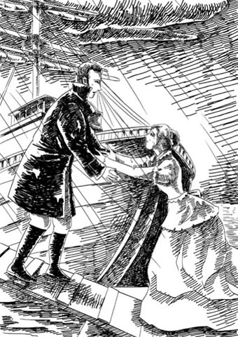
Amelia stepped forward, with her two little hands held out before her.
A little murmur could be heard. 'Forgive – dear William – dear, dear friend – forgive, forgive...' She was kissing one of his hands again and again, and with his other hand, Dobbin held her close to his heart, safe within the folds of his greatcoat.
Eventually Amelia lifted her head, and looked up at his face. It was full of sadness and love and pity.
'It was time you sent for me, dear Amelia,' he said.
'You will never leave me again, will you, William?'
'No, never,' he answered, and held her tightly.
At last Dobbin had what he had wanted every day and every hour for eighteen years. There she was, close to his heart, whispering loving words. At last he had the prize he had been hoping for all his life.
They walked to the house, and Georgy danced round them, laughing and singing joyously. And there we will leave them.
Becky never showed herself to Amelia and Dobbin again. Perhaps it was a feeling of guilt towards the kind and simple creature who had been the first in life to defend her. Perhaps it was a dislike of emotional occasions, but she disappeared at once to Bruges on 'particular business', she said; and only Georgy and his uncle were present at the wedding of Major William Dobbin to Mrs Amelia Osborne.
When it was over, and Georgy and his parents had left for England, Becky returned (just for a few days, of course) to comfort poor Jos, who was now left alone. Jos preferred the European life, he said, and refused his sister's invitation to live with her and her husband in England.
Dobbin left the army after he was married, and he and his family rented a house near Queen's Crawley, where Sir Pitt, Lady Jane, their daughter, and young Rawdon Crawley were living. Sir Pitt's little son, always sickly, had died some years ago, which meant that young Rawdon would be the next baronet.
When Amelia gave birth to a daughter, Dobbin's happiness was complete. Lady Jane and Mrs Dobbin became great friends, and Georgy and young Rawdon played together in the holidays, went to Cambridge University together – and quarrelled about Lady Jane's daughter, with whom they were both in love.
Mrs Rawdon Crawley's name was never mentioned by either family. There were reasons for this silence, because wherever Joseph Sedley went, she went too, and that foolish man seemed to be completely her slave. Dobbin's lawyers informed him that his brother-in-law had taken out a heavy insurance on his life, and had probably been raising money to pay debts.
Hearing about this, Amelia, in great alarm, begged Dobbin to go and see her brother, who was now in Brussels.
Jos was living in a hotel, in which Mrs Crawley also had an apartment, and Jos begged Dobbin to visit him at a time when he believed Becky was out. Dobbin found his brother-in-law in very poor health, and dreadfully afraid of Becky, though eager in his praises of her. She had looked after him devotedly through a number of strange illnesses. She had been a daughter to him.
'But – but – oh, for God's sake, please come and live near me, and – and – see me sometimes,' Jos begged.
Dobbin frowned. 'We can't, Jos,' he said. 'You know Amelia can't visit you while Rebecca is here.'
'But Becky is innocent,' Joseph said desperately. 'Innocent as a child, as innocent as your own wife.'
'That may be so,' Dobbin said, gloomily; 'but Emmy can't visit you while she's here. Be a man, Jos. Break off this connection, and come home to your family. We hear you are in debt too.'
'In debt!' cried Jos. 'Nonsense! Mrs Crawley has – I mean, all my money is quite – is well taken care of.'
'You are not in debt then? Why did you insure your life?'
'I thought – in case anything happened – a little present to her, so grateful... but all my money will come to you, of course.'
Dobbin begged Jos to run away, to go back to India where Mrs Crawley could not follow him, to escape while he still could.
Jos seized Dobbin's hand. 'Yes, I'll go to India, but don't tell her. I must have time. She'd kill me if she knew. You don't know what a terrible woman she is,' the poor man said.
'Then why not come away with me now?' Dobbin said.
But Jos did not have the courage to do that. He would see Dobbin again, but Dobbin must say nothing about his visit, and must go now. Becky might come in at any moment. And Dobbin left, full of fear and anxiety.
He never saw Jos again. Three months later Joseph Sedley died in France. Most of his money had gone, except for the insurance money, which was divided equally between his 'sister Amelia' and his 'friend Rebecca'. Lawyers for the insurance company said that it was a most suspicious case, and they wanted an investigation into the death. But 'friend Rebecca' – or Lady Crawley, as she now called herself – came to London at once, and hired her own lawyers. She won the case and the money was paid.
She never was Lady Crawley, though she continued to use the name. Her husband Rawdon died of yellow fever on Coventry Island, six weeks before the death of his brother, Sir Pitt Crawley. On Sir Pitt's death, Becky's son, as the only living male in the Crawley family, became Sir Rawdon Crawley and inherited all the Crawley houses and land.
Sir Rawdon continues to live at Queen's Crawley with Lady Jane and her daughter. He has refused to see his mother, to whom he pays a generous yearly allowance, and who appears in any case to be very wealthy. She lives in Bath and London, and many people believe her to be a most cruelly treated woman. She has her enemies. Who has not? But she goes to church, and is deeply involved in church events that raise money to help the sick, the poor, the homeless, and other unhappy people.
At one of these events in London, Amelia and her family suddenly came face to face with Becky. She gave an amused little smile as they hurried away from her – Amelia on the arm of her son Georgy, now a handsome young gentleman, and Dobbin, carrying his little daughter Janey, of whom he is fonder than of anything in the world.
'Fonder than he is of me,' Amelia thinks, with a sigh. But he never said a word to Amelia that was not kind and gentle, or thought of a wish of hers that he did not try to satisfy.
Oh, the vanity and folly of human wishes! Which of us is happy in this world? Which of us has our heart's desire? Or, having it, is satisfied?
greatcoat n. a long heavy coat 厚大衣
insurance n. an arrangement with a company in which you pay them money, especially regularly, and they pay the costs if something bad happens 保险
suspicious adj. making you think that something bad or illegal is happening 可疑的
出生、婚姻和去世
12
出生、婚姻和去世
贝姬帮助多宾少校达成心愿的计划无人知晓，因为目前她更关心自己的切身利益。她突然来到舒适的环境里，身旁围绕着善良老实的人。较之以往居无定所、颠沛流离的生活，这种意想不到的变化让她感到十分愉悦。
因此，在享受这一切的同时，她也努力讨好其他人。她对此一向拿手。没过多久，约瑟夫·塞德利就成了她忠心的奴隶和崇拜者。他饭后不再睡觉，而是陪着贝姬乘马车出游。他请人来家里吃饭，还举办小型聚会给她娱乐。不久，她身边就聚集了一群崇拜者。乔斯的家从没这么热闹过，这全是贝姬的功劳。她唱歌，弹琴，说笑，讲两三种语言。她把大家都引到屋子里来，还让乔斯相信，这些人是来见他的。
贝姬很快发现怎样能取悦阿梅莉亚。她常常谈起多宾，讲她如何敬佩他，而阿梅莉亚对他有多么残忍。阿梅莉亚为自己辩解说，她一生都忠于乔治，她永远忘不了他，他是最好、最优秀的丈夫……但同时，她似乎又喜欢听到贝姬称赞少校，而且她自己也会把话题转到他身上，一天至少得提二十次。
不过，她并不开心。她情绪紧张，沉默寡言，很难哄她高兴。晚上，她试图唱少校最喜欢的歌时，会忽然停住，匆忙回到房间。毫无疑问，她是去看丈夫的画像，寻求心理安慰。一天，乔基在他母亲的桌里找东西，发现少校的一双手套给整整齐齐地叠放在其中一个秘密抽屉里。
多宾定期给乔基写信，他也给阿梅莉亚写过一两回，不过信里语气冷冰冰的。她意识到自己已经失去了控制他的力量，他不再爱她了。他已离她而去，如今她才看清她所抛弃的真情是多么美好，多么纯真。她为此痛苦极了。
六月，他们搬到比利时的奥斯坦德，呼吸海边的新鲜空气。贝姬遇到了旅居期间结识的一些男性朋友。尽管见到他们她并不高兴，但他们却是大喜过望，并听说了她有塞德利先生这样的有钱朋友。他们闯进乔斯的房子，吃饭喝酒，说醉话奉承阿梅莉亚，吵吵嚷嚷他们谁应该娶那个有钱的小寡妇。
虽然贝姬确保阿梅莉亚不会单独跟那些人在一起，但阿梅莉亚还是怕得要命。她求乔斯带她回英格兰，可是因为贝姬更愿意待在欧洲，乔斯也亦步亦趋。最后，有一天在绝望之下，阿梅莉亚偷偷地给一个朋友写了封信。她寄完信回来，就留在自己房间里，一直没有出来。贝姬知道阿梅莉亚害怕客厅里的那些访客。
“她必须离开，这个小糊涂虫。”贝姬想，“她缺个丈夫，她必须嫁给少校。我今晚就安排一下。”于是，她端了一杯茶去阿梅莉亚的房间，发现她坐在那里，看着画像，一副黯然神伤、坐立不安的样子。
“谢谢你。”阿梅莉亚说。
“听我说，阿梅莉亚。”贝姬看着她，半是气恼、半是好心地说，“你必须离开这里，远离这些人。他们不是好人。别管我怎么认识他们，我什么人都认识。乔斯保护不了你，他太软弱了，连自己都保护不了。至于你，保护自己的能力比个婴儿强不了多少。你必须结婚，不然你和你的宝贝儿子都会遭殃的。你必须有个丈夫，你这个傻瓜。我见过的最好的绅士里，有一位向你表白过一百次了，而你却拒绝了他，你这个狠心、无情、不知感恩的小东西！”
“我尽——我已经尽力了，丽贝卡。”阿梅莉亚伤心地说，“但是我忘不了……”她抬头看床头上挂着的乔治画像。
“忘不了他！”贝姬大叫，“那个自私的蠢货！那个爱慕虚荣、大言不惭、没心没肺的东西！他对你早厌倦了，阿梅莉亚。要不是多宾逼他遵守诺言，他根本就不会娶你。这是乔治告诉我的。他从来没关心过你，还三番五次拿你取笑。他刚娶你一个星期，就对我悄悄说情话了。”
“那不是真的，丽贝卡！”阿梅莉亚大喊，跳了起来。
“那就看看这个，你这傻瓜。”丽贝卡平静地说。她从口袋里掏出一张小字条，塞进阿梅莉亚的手里。“你认得出他的笔迹。这是他写给我的——想让我和他私奔——他被打死的前一天在你眼皮子底下给我的。他被打死可真活该！”
阿梅莉亚看着信，没听到她的话。那封信正是滑铁卢战役头一晚舞会上乔治藏在花里交给贝姬的。这是真的。乔治请求贝姬和他私奔。
阿梅莉亚捂着脸哭了起来。那些眼泪是甜蜜的还是苦涩的？她哭是因为乔治不再是她钟爱的完美丈夫，还是因为现在没什么理由妨碍她爱多宾了？“现在没什么禁忌了。”她想，“我可以全心全意地爱他了。啊，我会的，我会的，只要他允许，只要他原谅我的话。”
的确，阿梅莉亚并没像贝姬预料的那样大哭一场。过了片刻，贝姬亲吻她，接着说：“现在我们就开始给他写信吧。”
“我——我今早就给他写了。”阿梅莉亚红着脸说。
贝姬哈哈大笑，整栋房子都能听到她的笑声。
两天之后的早晨，尽管外面狂风暴雨，阿梅莉亚早早起床，坚持和乔基去港口码头散步。他们焦急地盯着波涛汹涌的海面，雨水打在他们的脸上。
“我希望他不会挑在这么糟糕的天气下过海。”阿梅莉亚说。
“他当然会。”男孩说。他指向海面。“瞧，妈妈，船来了！”
是的，船来了，但他可能不在船上，他可能没有收到信，他可能决定不来。千百种恐惧在阿梅莉亚的心里翻腾。白色的浪头打在港口的堤坝上，像隆隆的雷声。毫无疑问，那颗小心脏也正怦怦地狂跳着。
船离得更近了，可以看见船上站着一个瘦高的人影，朝港口这里望着。“瞧——他在那儿！”乔基大叫，“穿厚大衣的那个人，是多布！”他一把搂住他母亲。
船进港了，那瘦高个儿匆忙下了船。乔基突然跑向港口的另一头，去看什么特别有趣的东西，留下他母亲独自颤抖着站在雨中。
然后，她伸出两只小手向前走去，转眼就躲在他的怀抱里。
她呢喃地说：“原谅——亲爱的威廉——亲爱的朋友——原谅，原谅……”她一次又一次亲吻他的手，多宾另一只手紧紧把她搂在胸前，裹在他厚大衣的褶子里。
阿梅莉亚终于抬起头看着他的脸。那脸上交织着伤感、爱意和怜悯。
“亲爱的阿梅莉亚，该是你叫我来的时候了。”他说。
“你再也不会离开我了，是吗，威廉？”
“是的，不会。”他回答，紧紧搂着她。
多宾终于得到了十八年来他每时每刻都在向往的东西。她紧贴在他胸前，低声说着情话。他终于得到了一生希求的酬报。
他们朝家走去，乔基在他们身边手舞足蹈，高兴地又唱又笑。关于他们我们就先说到这里。
贝姬再也没在阿梅莉亚和多宾面前出现。或许是对这个善良纯朴的人心存愧疚，因为她是第一个为她说话的人。或许是讨厌这种动感情的场面，她立刻动身前往布吕赫，说是有“特别事务”要处理。威廉·多宾少校和阿梅莉亚·奥斯本夫人举行婚礼时，只有乔基和他舅舅在场。
婚礼结束后，乔基和父母返回英格兰，留下乔斯独自一人。贝姬回来安慰可怜的乔斯（当然，她只待几天）。乔斯说他更喜欢欧洲的生活，因此拒绝了他妹妹请他去英格兰同住的邀请。
多宾婚后离开了军队。他一家人在昆士克劳利附近租了一栋房子，皮特爵士、简女士、他们的女儿及小罗顿·克劳利就住在昆士克劳利。皮特爵士的小儿子一直体弱多病，几年前去世了，这就意味着小罗顿会是下一个准男爵。
阿梅莉亚生了女儿后，多宾的幸福彻底圆满了。简女士和多宾夫人成了很好的朋友。乔基和小罗顿假期里一起玩，还一起上剑桥大学。他们都爱上了简女士的女儿，为了她争风吃醋。
两家都不提罗顿·克劳利夫人这个名字。大家缄口不言是有原因的，因为无论约瑟夫·塞德利去哪里，她也如影随形，这愚蠢的男人似乎已经完全沦为她的奴隶。多宾的律师们告诉他，他大舅子保了一大笔人寿险，而且很可能正在筹钱还债。
阿梅莉亚听到这个消息十分担心，央求多宾去布鲁塞尔见见她哥哥。
乔斯住在一家旅馆里，克劳利夫人住在同一家旅馆的另外一套房间。乔斯拜托多宾在贝姬外出的时候来见他。多宾发现他大舅子的身体状况很差。乔斯虽然极力称赞贝姬，可对她却怕得要命。他先后得了一堆奇奇怪怪的病，贝姬一直全心全意地照顾他，简直就像他女儿一样。
“但是——但是——啊，看在老天爷的份上，搬来住在我近旁吧。而且——而且偶尔来看看我。”乔斯央求。
多宾皱起眉头。“不行啊，乔斯。”他说，“你知道，丽贝卡在的时候，阿梅莉亚不能来看你。”
“但是贝姬是清白的。”乔斯绝望地说，“她和孩子一样纯洁，和你的妻子一样清白。”
“也许是这样。”多宾郁郁地说，“但她在的时候，埃米不能来看你。做个男子汉，乔斯。把这个关系断了，回到你家人身边吧。我们听说你还欠了债。”
“欠债！”乔斯大叫，“胡说！克劳利夫人——我是说，我所有的钱都——都处置得非常好。”
“那你没有欠债咯？为什么保人寿险呢？”
“我想——万一我有什么三长两短——送她一个小礼物，非常感激她……但是我的钱当然都会给你的。”
多宾求他趁还能逃的时候赶紧逃走，如果他回印度，克劳利夫人就无法跟到那里去。
乔斯抓住多宾的手。“好，我会去印度，但是别告诉她。我需要时间。她要是知道了会杀了我的。你不知道她是个多么可怕的女人。”这个可怜人说。
“那为什么不现在就跟我一起走呢？”多宾问。
然而乔斯没有勇气这么做。他会再见多宾，但是多宾一定不能说他来过，而且现在必须离开，因为贝姬说不准什么时候就回来了。多宾满心忧惧地离开了。
他再也没见过乔斯。三个月后，约瑟夫·塞德利在法国去世了。他大多数钱都不知去向，只剩保险金，平分给他的“妹妹阿梅莉亚”和他的“朋友丽贝卡”。保险公司的律师们说这单保险极其可疑，他们想调查死因。但是“朋友丽贝卡”——她现在自称克劳利女士——立刻来到伦敦，雇了自己的律师。她打赢官司，拿到了钱。
她没有资格自称克劳利女士，但是她继续使用这个名号。她丈夫罗顿在考文垂岛上死于黄热病，他哥哥皮特·克劳利爵士也于六周后离开了人世。皮特爵士一死，贝姬的儿子作为克劳利家族活着的唯一男性，成为罗顿·克劳利爵士，并继承了克劳利家所有房产和土地。
罗顿爵士继续同简女士和她的女儿住在昆士克劳利。他拒绝见他的母亲，只每年给她丰厚的生活费。即便没有这笔钱，他母亲也显得极其富有。她在巴斯和伦敦两地居住，许多人都认为她是遭遇了极大不幸的女人。她有敌人，但谁又没有呢？她上教堂，全身心地参与教会筹集善款的活动，帮助那些生了病、穷困潦倒、无家可归的不幸之人。
在伦敦这样的一次活动上，阿梅莉亚一家和贝姬不期而遇。看到他们匆匆走开，贝姬觉得好笑，嘴角露出了一丝微笑。阿梅莉亚挽着她儿子乔基，乔基现在已经长成一个英俊的小伙子；多宾抱着小女儿珍妮。他现在喜爱珍妮胜过一切。
“胜过喜欢我。”阿梅莉亚想着，叹了口气。但是他从未对阿梅莉亚说过一句不体贴、不温柔的话，阿梅莉亚的愿望他也千方百计去实现。
啊，人类欲望如此虚荣与荒唐！尘世之中，我们谁是真正快乐的？我们谁能称心如意？又或，在遂了心愿后，真正感到心满意足？
ACTIVITIES：Before Reading
ACTIVITIES
Before Reading
1 Read the story introduction and the back cover. One of the girls will wear diamonds, and in the words of a 1940s song, 'Diamonds are a girl's best friend'. Do you think that was also true in Vanity Fair? Discuss these questions.
1) If Amelia or Becky wears diamonds at an evening party, how will she get them? Will she inherit them, be given them, borrow them, hire them, buy them with her own money, steal them? Might the method be different for each girl?
2) Of the two girls, which is more likely to wear diamonds? Why?
3) What does it mean, 'diamonds are a girl's best friend'? Why, in your view, do women want to possess or wear diamonds?
4) Do you think diamonds are still 'a girl's best friend' today, or do modern girls want other things? If so, what?
2 Here is a list of adjectives that might describe the two heroines. Which adjectives might apply best to Becky, and which to Amelia?
ambitious, amusing, affectionate, brilliant, cunning, devoted, dull, gentle, good, honest, modest, selfish, sensible, strong, sympathetic
3 What are your expectations of a novel like this? Discuss these ideas. Which kind of ending would you prefer?
1) The 'good' characters will be happy and successful by the end of the story, and the 'bad' will be punished in some way.
2) The characters will have both 'good' and 'bad' sides to them, and the wicked are just as likely to succeed as the good.
ACTIVITIES：While Reading
ACTIVITIES
While Reading
1 Read Chapters 1 to 3. Complete these sentences with names from the story. (Some names will be needed more than once.)
| Amelia | George Osborne | Sir Pitt Crawley |
| Becky | Mr Osborne | Rawdon Crawley |
| Jos Sedley | William Dobbin | Miss (Matilda) Crawley |
| Mr Sedley | Miss Briggs | Bute Crawley |
1) _____ hoped for a proposal from _____'s brother _____.
2) _____ never spoke of his love for _____, because she was engaged to _____.
3) _____ came to London to look after _____, which upset _____'s devoted companion, _____.
4) _____ had to refuse _____, because she was already married to his son _____.
5) The wealthy _____ planned to divide her money between her nephew _____ and the family of _____.
6) _____ married her beloved _____, even though _____ forbade the marriage when _____ lost all his money.
Before you read on, compare the two newly married couples – Becky and Rawdon, and George and Amelia – and discuss these questions.
7) Which couple is likely to be happier, and why?
8) Which couple is likely to stay together longer, and why?
9) Which couple is more likely to be comfortable financially, and why?
2 Read Chapters 4 and 5. What do you think might happen in each of these cases?
1) 'Becky and Rawdon... ran up debts, confident of getting the old lady's money in the end.' (What if they don't?)
2) 'Hopes on both sides were high – that George's father would forgive George, and that Miss Crawley would forgive Becky and Rawdon.' (And if they don't, how will each couple react?)
3) 'A tiny flame of jealousy was already burning in Amelia's gentle heart.' (How will this affect the girls' friendship?)
4) 'There was a note, rolled up like a tiny snake among the flowers.'(What will happen to this note?)
3 Read Chapters 6 to 8, and discuss these questions.
1) How do the two girls compare as mothers?
2) Which girl has the better chance of a successful future?
3) Which girl has the better chance of a happy future?
Before you read on, what do you think lies ahead for the two girls? Give reasons for your choices.
Becky will...
4) run away with Lord Steyne.
5) never live with Rawdon again.
6) try to help Rawdon.
Amelia will...
7) lose her mind with grief.
8) agree to marry Dobbin.
9) become unexpectedly rich.
4 Read Chapters 9 and 10. Which of these opinions do you agree with? Give your reasons.
Rawdon...
· was right to react as he did, because Becky was guilty.
· was right to be angry, but should have fought Lord Steyne.
· should have kept quiet, as he had been quite happy for Becky to use her charms to their advantage in the past.
Dobbin...
· should have stayed in India, because Amelia will never give him the love he deserves.
· should have left Amelia when she said she still thought of George as her husband.
· should stay near Amelia, and try harder to win her love.
Before you read on, what do you think the girls should do now? Give them some advice, using these ideas and your own.
Amelia should...
· stop relying on Dobbin to solve her problems.
· marry Dobbin even though she does not love him.
· learn to forget George and love Dobbin.
Becky should...
· live a quiet, honest life and find a job as a governess.
· have a brilliant social life in London with Lord Steyne's help.
· try to keep in touch with her son.
5 Before you read Chapter 11 (A meeting with an old friend) and Chapter 12 (Births, marriages, and deaths), can you guess what happens?
1) The old friend is _____ and this person meets __________.
2) Births (one): __________
3) Marriages (one): __________
4) Deaths (three): __________
ACTIVITIES：After Reading
ACTIVITIES
After Reading
1 Here is Rawdon's letter, dictated by Becky, to his brother Pitt (see Chapter 6). Match each of these adjectives with one of the nouns, and complete the letter with the most appropriate pairs of words.
adjectives: affectionate, charming, excellent, generous, good, great, friendly, happy, loving, warm
nouns: attention, brother, eye, fortune, friendship, judgement, memories, nature, pleasure, wife
My dear Pitt
I am writing to offer sincerest congratulations from Rebecca and myself on your recent _____ _____. There is no doubt that Aunt Matilda showed _____ _____ in leaving her inheritance to you. Of course, in recent years my regimental duties have forced us to live abroad, and as a result we were not able to show Aunt Matilda the_____ _____ that we would have wished. How fortunate that you were able to perform this family duty!
I hear you have returned to Queen's Crawley. (Rebecca and I have such _____ _____ of that house!) As we both know, there has not always been the _____ _____ between us that brothers should enjoy, but I hope that your _____ _____ will allow you to forget our past disagreements. We are both now fathers, and it would give me __________ if our two families could meet as friends. Rebecca and I are most anxious to meet your children and your _____ _____, whom all the world praises, and we beg that you will look with a _____ _____ on our own son, little Rawdy.
Your _____ _____, Rawdon
2 Perhaps this is what some of the characters in the story were thinking. Which characters are they, who are they thinking about, and what is happening at this point in the story?
1) 'He's a bit upset now, but he'll get over it. And he'll be grateful to me one day. No use getting sentimental about it. There's no point in marrying if there's no money to be had.'
2) 'Where on earth is she? It's more than twelve hours now. Why is it taking her so long? She can easily find that much money. Surely she cares enough about me to get me out of here...'
3) 'I shall like it here – it's certainly better than working for that horrible old man. The old lady isn't too hard to look after, and she's a lot richer! Yes, life will be quite interesting here...'
4) 'Well, then – it's done. She didn't even look at me as I went out of the door. I hoped she might begin to love me, but it's too soon. It's best I go away. Perhaps after a few years...'
5) 'Never have I felt so angry in all my life. He is my husband and I have a duty to obey him, but he must see that I cannot be in this house while she is here. I must face him at once...'
6) 'India? Yes, I'd like to go there again. But – I don't know. When I'm with her, I'd do anything for her. But when she goes away, I feel so afraid of – of what she might do.'
7) 'It breaks my heart to see him go. I know it will bring him lots of opportunities that he can't have here, and he's so excited about it, but he's my life! Why does nobody understand that?'
8) 'Yes, she knows, she knows it's in there! That sparkle in her green eyes says it all! She'll read it when she gets home...'
3 Here are some of the more outrageous lies that Becky tells. Rewrite them so that they tell the truth. What do you think would have happened if she had spoken the plain truth?
1) 'He's very handsome.' (Chapter 1)
2) 'Dearest love, do you suppose I feel nothing?' (Chapter 5)
3) 'I swear that I have done my husband no wrong.' (Chapter 5)
4) 'What I should like to do first is to see your dear little children.'(Chapter 7)
5) 'Dear, dear Rawdy! I miss him so much.' (Chapter 7)
6) 'I have such a headache, and such a heartache!' (Chapter 9)
7) 'It was for Rawdon – and you!' (Chapter 9)
4 Here are two entries from different diaries, written one day apart. Fill each gap with one suitable word to complete the entries. Then say who wrote each entry, and when.
FIRST DIARY
So this is _____ last night in _____ house! I never _____ things to happen _____ quickly. Why didn't _____ Pitt ask me _____? I'm sure the _____ fool won't live _____, and I could _____ been Lady Crawley, _____ and free! It's _____ lucky for me _____ he didn't tell_____ Crawley why I _____ him.
Dear Rawdon! _____ will be fun _____ be together at _____. His greatest talent _____ winning at cards, _____ we'll have a _____ future – if I _____ the decisions and _____ after the money! _____ must stop now _____ write my letter _____ Miss Briggs. I'm _____ I can touch _____ heart with my _____ of true love, _____ then she will _____ Miss Crawley to _____ us, and we _____ be rich.
SECOND DIARY
Oh, what a _____ day! Miss Sharp's _____ gave us all _____ a shock. How _____ that Mrs Bute _____ in time to _____ us! I didn't _____ what to say _____ Miss Crawley. She _____ the news very _____. We had to _____ her to bed _____ call the doctor.
_____ Sir Pitt arrived _____ the house, asking _____ Becky. He was_____ when he heard _____ news, and his _____ was so dreadful_____ I had to _____ the room. I _____ not stop trembling _____ hours afterwards. I _____ tomorrow will be _____ – I don't want_____ more news or _____!
5 What do you think about the way these people behaved? Was it wicked, foolish, brave, deceitful, bold, practical? Did some of them have excuses for behaving in this way? Discuss your ideas.
Amelia
· her treatment of Dobbin
· her treatment of her parents after George's death
Becky
· her relationship with Jos Sedley
· her relationship with Lord Steyne
Rawdon
· his card-playing with George and others
· his behaviour after the Lord Steyne affair
Dobbin
· his behaviour towards Amelia
· his relationship with George
6 Which of the two heroines did you like better? Did they shock, irritate, amuse or fascinate you? Which would you prefer to have as a friend? Why?
封底
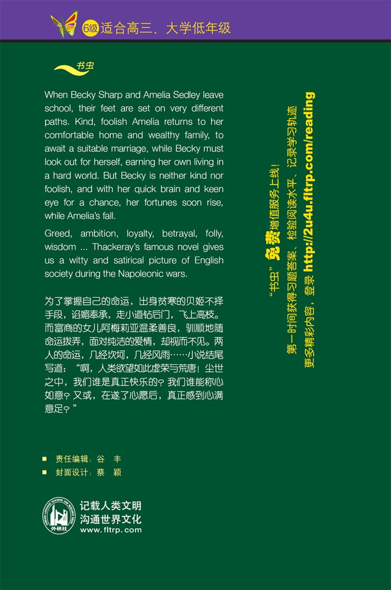